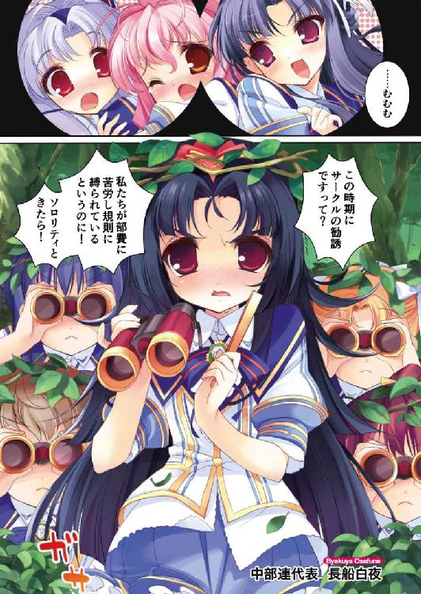

| SH@PPLE-しゃっぷる-(3) (富士見ファンタジア文庫) | |
| 竹岡 葉月 & よう太 | |
| 富士見書房 (2011) | |


本作品の全部または一部を無断で複製、転載、配信、送信したり、ホームページ上に転載することを禁止します。また、本作品の内容を無断で改変、改ざん等を行うことも禁止します。
本作品購入時にご承諾いただいた規約により、有償・無償にかかわらず本作品を第三者に譲渡することはできません。
本作品を示すサムネイルなどのイメージ画像は、再ダウンロード時に予告なく変更される場合があります。
本作品は縦書きでレイアウトされています。
また、ご覧になるリーディングシステムにより、表示の差が認められることがあります。
口絵・本文イラスト よう太
第１章 魔法が解けるとき
ねえ、まだまにあうよ。
降りたことのないバス停に降り立った瞬間から、彼女はずっと自分にそう言い聞かせてきた。ねえほら、いいの？ まだまにあうよ。今ならまだ帰れるよ。
（相手はおとななんだよ）
（わたし小学生だよ）
心臓は、絶えずどきどきと鳴り続けた。そもそも彼女は、あまり積極的な性質ではない。ブリッジで矯正中の歯を見せるのが嫌だからという理由で、教室でもおとなしく笑わないようにしているが、本当にブリッジがなければクラスの陽気なアイコちゃんと同じになれるのかと言われれば答えは否だった。
たぶんアイコちゃんは、こんな風にバスに乗って大人の家に押しかけたりしない。
そもそも原因となる本なんて読まないだろうし、ましてや中身が大人向けのホラーミステリなどと言えば、『わー、すごいねアタマいいね。でも怖そうだね！』と明るく言って変わり者の烙印を押してしまうに違いないのだ。
これはおとなしい彼女にとって死刑より恐ろしいことである。
ただ彼女は、本を読むのが人より好きで、たぶんかなりとても好きで、中でも一人の作家が書く物語が特別に好きでたまらなかったのだ。
同じ市内に住んでいるという話を、偶然近所のおばさんから聞いてしまってからは、いてもたってもいられなかった。とうとうこうしてバスに乗ってやってきてしまったぐらいだ。
坂の上の町。知らないニュータウン。地図でしか見たことのなかった番地。
（だいじょうぶ。ひとことだけ。ひとことだけ。ちょっとだけだから）
免罪符のように心の中で繰り返す。
まずは鞄に入れてあるハードカバーの本にサインをしてもらって、いつも読んでますとお礼を言って、もし万が一お家の中へ入れてもらえるとしたら、その時はもっとちゃんとお話の感想も言って、先生に喜んでもらえるようにしておかないと──。
──ありがとう○○くん。
──今日からきみは私の弟子だよ。
考えると胸がいっぱいになった。
彼女は震える指でインターホンを押した。
どきどきして、口の中がからからいって、期待に胸も膨らませて、でもドアを開けて出てきたのは、著者近影にあった写真とはまるで違う男の子。
きゅっと喉の奥が絞め付けられるような気分になった。
「......きみ、だれ......？」
必死。だめ。早口。変な声になる。
「あ、あの、せ、せんせ。あわ、せんせい、は」
ほら。へん。男の子の目が丸くなる。
「せんせい......あれ、ひょっとしておばあちゃんのファン？」
おばあちゃん？ 孫？ 家族がいるの？
「ほーらユキグニー！ はやくー、おやつ食べちゃうよー！」
呆然とする中、家の奥から響いた呼び声に、男の子は振り返って生返事をかえした。そしてまたこちらを向くのだ。まっすぐ、どこか申し訳なさそうな目をしていた。
「あの、ごめんね。今おばあちゃんは、まだ仕事場から出てこれないんだ。伝言とかあるなら、聞いておくけど──あ」
彼女は、たまらず逃げだした。
ユキグニ。ゆきぐに。雪国。
出てきた男の子の朗らかな声や困り切った表情が、胸の奥で重なっていく。
彼女は眼鏡の奥を強くこすった。頰が熱いのは、恥ずかしいからだ。こどものくせに馬鹿なことをした。先生以外が出るなんて考えもしなかった。喋ると矯正中のブリッジが覗くこと。人より厚い眼鏡をかけていること。どれもみな恥ずかしくて恥ずかしくて。
（やだよ）
それは長く長く、ぬぐい去れない『熱の記憶』のようなものとして、彼女の中に残ることになる。
長く残って、そして──。
＊＊＊
「機密が......漏れてる？」
淡谷雪国は学院内を走りながら、自分のつぶやきがひどく馬鹿げて聞こえてならなかった。
ここはお嬢様の殿堂、私立青美女学院。
みんみん頭上でセミが鳴いている。薔薇。姫百合。ラベンダー。花も恥じらう良家の子女が集う女子校に、雪国はヅラとスカートを駆使したニセ乙女として通っている。生徒会長『若光の君』として。双子の姉、舞姫の身代わりとして。
しかし本当ならあははうふふとたおやかに笑っていなければならないはずなのに、雪国のスカートの裾は、ありえない勢いでばさばさと鳴りひるがえっていた。
「ええ。女性でないことがばれております。雪国様」
ああ、まったくもって容赦なし。
併走する久我原さゆねは、いつも通りのすらりとした長身に安定したストライドで、男の雪国の全力疾走に平然と追いついてきている。
並木の角を曲がる。向こうも曲がる。雪国はそのまま、漏らされたばかりの爆弾報告までなかったことにしたくなった。
「............はっ。そ、そんな久我原さん」
「そんな？」
「いきなり脅かそうたって。ねえ」
ダマされないよとばかりに首を振り、器用に外人ぽく肩をすくめてみせるが。
「雪国様？」
だめだ。ノーリアクション。
彼女はどこまでも真面目すぎた。
ここ中等科生徒会の会計のくせに。そのくせ淡谷舞姫のシノビだなんてトンチキなものを名乗っているくせに。校内で唯一入れ替わりを知っている協力者のくせに。
嗚呼くせにくせに。
「まずはご自分の目で確かめてみるのが一番でしょう。どうぞ生徒会室へ」
「うわああああん」
ろくに頭が働かないまま、雪国は本館四階の生徒会室へ連れていかされたのだ。
つきあたりの廊下には、なぜか生徒会執行部の少女たちが大勢たむろしていた。
「あ、舞姫さまだわ！」「舞姫さまがお戻りに！」「どうぞこちらへ！」ざわめく執行部ガールズの中から、ひときわ元気な二年女子が飛び出してくる。執行部員の山吹都さんだ。
「舞姫さまあ。もう見てくださいこの記事！」
「き、記事？」
「ひどいんですよ！」
小さいながらも魅惑的なボディをええいとばかりに体当たりさせ、そのまま腕をからめてくる。
（青美日報？）
興奮しきった面持ちの彼女がつきつけてきたのは、両面刷りのわら半紙だった。
青美日報は、Ｂ４判の校内新聞だ。中等科の新聞部が定期的に発行しているもので、雪国も『若光の君』として何度か美談を取り上げてもらったことがある。
しかしむにむにぷるんと当たるけしからんボディの感触も、裏のひばり堂から全力疾走の疲労感も、見せられた記事の煽り文句の前には吹き飛んだ。
『若光の君、男性だった!? 』
（は？）
『《九二一 》──諸君はこの数字を覚えているだろうか。
昨年秋の生徒会選挙で、淡谷舞姫が獲得した得票数である。
これは複数の立候補者があった生徒会選挙で、もっとも高い数値であると言っていい。 《円卓の戦乙女 》をうたう先代生徒会が解散し、新たなトップを据えることとなった今期の生徒会選挙。蓋を開けてみれば、円卓会議の指名を受けた淡谷舞姫が、指名者以上の力をふるって玉座を得た形になる。それからの活躍は、諸君らも知ることだろう。
強力なリーダーシップとカリスマ性で 《若光の君 》の名をほしいままにする姿は、まさしく王者の風格。ソロリティの筆頭 《胡蝶の宮 》と並んで、青美の人気を二分する存在である。
しかし我々はついに、淡谷舞姫会長の魅力の一端をここにつかむことに成功した。
なんと彼女は ──女性ではなかったのだ！ 』
そうして記事と一緒に掲載された、粒子の粗いモノクロ写真は──ロングのカツラを鞄に引っかけ、ショートカットの地毛を無造作にさらし、真っ平らな上半身にシュミーズを着こむ途中の──。
（僕だ）
雪国でしかない。
「ひどいですよね。こんな噓っぱちの記事を載せられたら、青美生徒会の品位に傷がつきます。舞姫さまのご名誉も──」
いやいや。そうではないのだ山吹さん。雪国はつま先から震えそうになる。
「............舞姫さま？」
「................................................あ、あははは？」
ああばれたのか。ここでばれるのか。火あぶりか。逆さはりつけか。あははだめだもう笑うしかない。
たしかに自分は男だ。見た目は姉にそっくりだが、男以外のなにものでもないものだ。言いたいことを伝える前に学院全土へヘンタイご披露。ここで退学になってしまえば好きもつきあっても言えないだろう。
頭の中の映像が、逆さはりつけから校内引き回しの刑に移ったあたりで、山吹都に腕を引っ張られた。しかし雪国はまだ戻ってこれなかった。公開処刑ショーの中では、なぜか蜜と蝶間林典子が先頭に立ってムチを振るっていた。ぱしんぱしんと蝶のマスクの女王様ファッションで。
「いいですか。いま花江副会長が、中で新聞部長とお話し中です。舞姫さまもバシッと言ってやってください。お願いしますよ」
「ええ？」
バシッとなんのムチを打つって？
一緒に連れ込まれた生徒会室。そこでは生徒会副会長の花江みずきが、テーブルを挟んで少女と向き合っていた。日報片手に、こんこんと相手を説き伏せにかかっている。
「──それでは芦屋さん、この記事を取り下げるつもりも訂正するつもりもないと？」
「ええ。生徒会の検閲を受けるいわれはありませんから」
「ですがこれはあまりに──」
手前の少女が振り返った。そして花江みずきの優しげな細面も。
「これはこれは。ごきげんうるわしく会長閣下！」
ひときわ大きな調子で頭をさげたのは、隣のクラスの芦屋桂だった。
学年が同じというより、問題の新聞部長として覚えているべきだろう。この場では。
こざっぱりと切ったショートカットに、この学校では珍しい赤いセルフレームの眼鏡をかけていた。いつも目新しいものを探して動く目つきも含め、あまり青美のお嬢様という雰囲気のしない少女だとも思っていた。
「いいからアナタ、こんな記事取り下げなさい！ 舞姫さまがオトコなんてデタラメな記事を載せて、生徒会が許すと思ってるの？」
「へえ。天下の生徒会が言論弾圧ですかあ」
「う──」
さらりと物騒な言葉を返され、抗議した山吹嬢はしゅんとする。
芦屋桂は、なおも微笑っていた。
「それはもう、我々新聞部は中部連の一員でありますから。学院ひいては生徒会の管轄下にございますよ？ しかしこれでも美術部や演劇部と並びたち、青美始祖クラブの一つに数えられているのです。そんなわたくしどもが先輩ＯＧから引き継ぐ志が一つだけあるとするなら、『青美日報はあらゆることに中立であれ』、ですよ。たとえネタの対象が会長閣下であろうとソロリティのトップであろうと、記事にするときは記事にいたしますし、大切なネタの提供元を明かすこともございません。絶対にです」
「で、でも──」
「それでも記事を取り下げたいと？ どうしても？」
雪国は、とっさに拍手をしていた。
「いや、ごめん芦屋さん。僕らが悪かったよ！」
「舞姫さま！」
「たしかに越権行為だったよ。生徒会だからなんて理屈は使っちゃいけない」
山吹都が、花江みずきが、そして他の執行部ガールズが、信じられないと言わんばかりに目を見開いた。
「で、でも舞姫さま。こんな記事が載ったら──」
「有名税とでも思っておくよ。けっこう面白い考えだと思うし。ね？ 芦屋さん」
話をふられ、芦屋桂は眼鏡のサイドをおさえて顎を引く。イエスのつもりらしい。
内心舌打ちしているように見えるのは、こちらの気のせいか、はたまた逆の──。
「これからもがんばって。余計な気をつかわせて悪かったね」
「......ありがとうございます。それでは会長閣下、日報は通常通り発行させていただきますがよろしいですね？」
「楽しみにしてるよ」
にこにこ笑って送り出す。
「ま、ま、ま、舞姫さまあああああ～」
「どうしてこんな横暴を許して！」
もちろん、執行部ガールズには囲まれた。
「いいじゃないかべつに。新聞記事の一つや二つ」
「そんなのんきな！」
「さ、これから定例会議だろう？ みんな会議室の方に行ってて。僕も資料そろえたら行くから」
強引に言い切って、話は終わったことにした。おかげでみな不承不承ながらも、こちらの言うことに従い、生徒会室を出ていってくれる。
「舞姫さまは大人すぎますわ」「あたくしまだ腹が立ってるのに」──そう口々に囁いているのも、なんとなくわかる。
最後の一人が、一礼とともにドアを閉めた。
後に残ったのは、扉に向かって笑顔の雪国と、隣で無表情な久我原さゆね。
「ど、ど、ど、どどどど、どどどどどどどどどどうしよう久我原さん──────っ！」
「......とりあえず、皆の前で取り乱さなかったのは褒めてさしあげます」
「だって。だって。だってだって」
頰だの頭だのを忙しなくはたきながら、いつもの社長椅子に腰掛ける。そのままテーブルに肘をついて頭を抱えた。なにが有名税だよボケナス。現実はため息すら出てこない。
（だってそうだろ。どうやったらあそこで差し止めなんて言い出せるんだよ！）
それはある種、雪国が土俵際いっぱいまで追い込まれた危機感で察したカンのようなものだった。もしあそこで記事の差し替えを要求したり、執行部ガールズを止めるのが一秒でも遅かったら。きっと芦屋桂は速攻で認定していたに違いない。淡谷舞姫、さらに探りを入れるに値するなりと。
そちらの方が、よほど怖くて致命的に決まっているのだ。
「......やっぱばれた？ はは。どこから？ なんで？ というかアレが校内中にばらまかれるって何事。嫌だ。おしまいだよおおおおお！」
「落ち着いてください。対策を考えましょう」
ぴしゃりと言われて、雪国は社長椅子の上でぐるぐる回転するのをやめた。
「まず、元の記事の方をご覧ください。幸い──というべきでしょうか。この記事が載っているのは日報の中でも裏面の芸能・社交欄です」
「そこに載ってると、なにか違うの？」
「先号の記事内容と見比べてください」
そう言って久我原さゆねは、どこからともなくバックナンバーを綴じたファイルを取り出してきた。
見れば今回の記事と同じ位置には、『大河内由梨嬢、激瘦せ退院の陰に病室へ通いつめる恋人の影あり！』という女性週刊誌も真っ青な煽り文句と、目元を黒マジックで修正した『大河内さんと親しい知人』の談話が掲載されていた。せめて『友人』と書くことはできなかったのか。ひとごとながら悲しくなってくる内容だ。
「......眉つばのゴシップ欄ってことね......」
「騒がない方が賢明というのはこういうことです」
「なるほど、ね......」
意外に俗っぽいとこもあるじゃないか青美日報。
久我原さゆねの見立てとしては、ここに載る記事の信憑性はせいぜい三割ということだった。
「写真の方も、合成や別人と言い張れば押し通せぬこともないレベルだと思えます」
「い、いけるかな......」
けっこうばっちり、顔とか写っているような気もするが。
「もちろん、騒いで気にする生徒も多少は出るとは思いますよ。下級生や一部の噂好きなメンツには」
「あ、やっぱり」
「出会い頭に体を触られるぐらいのリスクは覚悟する必要が」
「うわああああ」
痴漢。いや痴女ですか。
「まずはこの写真の出所を探るとして──しばらくは、身辺に気をつけた方がいいかもしれませんね。もちろん他生徒との接触は極力避け、校内で着替えるのはどこでもおやめになった方が安全かもしれません」
「......そう言われてもね......」
涙目だ。まともに学校生活を送ろうと思えば、それは土台無理な話である。三年あさぎ組のクラスで授業は受けなければならないし、体育があれば着替えもする。ましてやこちらは、ただでさえ生徒会の会長なんて人に会いやすい職についてしまっているのである。
「雪国様──」
行き詰まる雪国に、久我原さゆねは言った。
「しばらく入れ替わりを中止されたらいかがです？」
「ええ？」
「テストが終われば、すぐに夏休みです。そして夏休みが終わって九月になってしまえば、こんな記事の噂は風化していると思うのです」
人の噂も七十五日。そういうことだろうか。
雪国はうなずくことも反論することもできなくて、顔を伏せた。机の上には、問題の新聞記事。はりつけ。痴女。蝶マスク。
「............考えさせて」
そう言うのが精一杯だった。
入れ替わりの中止──。
ともあれ自分一人の問題ではないわけで。雪国はまず舞姫の方の意見も聞かなければならないと、急いで家へ帰った。
肝心の舞姫は、ニセ雪国の恰好のまま、リビングのカーペットにべろりと寝そべっていた。テレビでは夕方の時代劇が絶賛再放送中で、手元には食べかけのモンブラン。シャツから腹見えてますよお嬢さんとつっこんではいけないだろうか。
「くつろいでるね、舞ちゃん......」
「あ、ユキグニ。おかえり」
「......そろそろおばあちゃん帰ってくるんじゃないの？」
「もう帰ってきてるよ。で、ケーキ買ってきたって」
なるほど。そのケーキはお土産ですか。
血煙ミステリ作家の祖母は、ときどき市や大学のミス研だのなんだのに招かれて、講演めいたことをさせられるのだそうだ。世の中変なところで需要があるものである。
まれに年に一度ぐらいの割合で、ファンが押しかけてきたり弟子にしてくれと電話をかけてきたりもすることもあるのだから、まったくわからない話だった。
「冷蔵庫の中、ユキグニのあるよ」
「いいから。ちょっと上あがって話そう」
「待ってよ。これ見てから」
「あとあと！」
「なんで──」
文句をたれられても知ったことか。雪国は牛を追い立てるように舞姫を立たせ、そのまま二階の子供部屋へと追い込んだ。
「ひどいってユキグニ。あれね、めったに放送してくれないし、ＤＶＤシリーズの予定もないんだよ。青空ザムライ子育て無頼編」
「そんなの僕の恰好で見ないでよ」
「違和感ないと思うけど」
「なにそれ」
祖母に園芸バカどころかチャンバラマニアとまで思われてしまっては、本格的に老人認定されてしまうではないか。
「庭の白薔薇、お子様にボール投げ込まれて折れてたけど」
「う、うそおおおおおおお！」
「噓だけど」
おのれ。
まだ不満げな舞姫に、雪国は鞄をあさった。
「これ！」
問答無用で青美日報を見せてやる。
「..............................うわっちゃあ......」
「のんきにリビングでお腹出してる場合じゃないって」
本来青美に通っているはずの舞姫は、すぐに記事の内容と事態の重さを理解したようだった。真剣に記事の中身を読みはじめている。
「ねえ、どうする？ 久我原さんは、しばらく入れ替わりをやめた方がいいんじゃないかって言ってるんだ」
「......たしかに、それしかないかも......むむ......」
眉間を爪の先でいじりながら、床に座り込む。舞姫も同意見ということらしい。
壁のカレンダーを見上げると、夏休みまであと二週間といった頃合いだった。
こんなところで立場を怪しくして、お互いの目的を頓挫させるわけにはいかないのだ。
どうやらこれから徹夜でしなければならないことは、テスト勉強でも時代劇鑑賞でもなく、再入れ替えのための情報交換のようだ──。
＊＊＊
しっとりときめの細やかなババロアの頂に、同じく純白の生クリームが絞り出され、カリカリの飴細工が夏帽子のようにかぶせられたそのスイーツ。ただ一枚だけ添えられたアップルミントの葉が、なんとも言えず涼しげで、その名もずばり『乙女のサマーバケーション』と言った。
「ねえ、素晴らしいでしょう蜜さん。きっとあなたでも気に入ると思いますの」
青美女学院の名門ソロリティ、ローズロワイヤルは限られたセレブしか入会を許されない特別なソロリティだ。
先輩方のご好意に囲まれ、蜜姫こと一駿河蜜は、途方にくれつつケーキ皿を見つめた。
「............あは......とても......お上品な、ケーキ......ですね......」
「そうなの。あっさりしていて召し上がりやすいのよ」
「良かったらあたくしたちのぶんも差し上げますわよ」
他のお姉様方まで勧めてくる。
そこは、青美女学院内のカフェテリアだった。一般生徒だけでなく、教職員が来客をもてなすためにも使用されることもあるぐらいだ。歴史を重ねた煉瓦と木目を活かした上品な内装は、一流ホテルのラウンジと言い張っても遜色はなく、半円形に迫り出した窓際のテラス席からは、表の緑やその下を歩く制服の群れを眺めることができる。
ここに新作のデザートが出るたび、ローズロワイヤルはメンバーをあげて味見をしにやって来るのだ。なんでも全体的にビターで甘さ控えめなレシピが、彼女たちとしてはお気に入りらしい。
しかし──お嬢様にして筋金入りの貧乏舌である蜜としては、できることならテーブルの上にある砂糖壺をむんずとつかんで、上から振りかけてみたい衝動にかられてしょうがない。無理とはわかっていても。それでもせめて。想像の中だけでもぐわっと。
「そう言えばみなさん。これお読みになりました？ 『若光の君、男性説』って──」
蜜は、カモフラージュ用に飲んでいた紅茶を吹きそうになった。
「いやだ縁子さんたら。それ、この間の青美日報ですわよね」
「ええもう。あたくし、おかしくっておかしくって。切りとってしまいましたの。たしかにあの方、淑女らしくない雰囲気はありますけど」
「新聞部なりのジョークということかしら」
「本当だったらどうします？」
「やだもう──」
「おやめなさいみなさん。気持ちはわかりますけど。そこまでにいたしましょう？」
やんわりと口を挟んだのは、メンバートップの胡蝶の宮だった。
その名を蝶間林典子という。
ボリュームのある巻き毛と口許のほくろが印象的な、大人びた雰囲気の少女だ。
「生徒会が改善すべきところは、もっと他にございますでしょう。品位ある学院の運営に伝統の継承──あたくし十は問題点を挙げられてよ」
「ああ、それはわかります胡蝶の宮──」
記事を持ち出した少女を特に気まずくさせることなく、話題はするりと逸れていった。
伝統と格式のソロリティと、実務と実績の生徒会。
この二大勢力の影響力は大きく、時に敵対することも多いが、さすがは蜜たちのお姉様。決して俗な方向へ流れない高潔な態度に感服し、尊敬の思いで見つめるが、同時に不安にもなった。
「......ねえ、ところで、ひとつ訊いてもいいかしら蜜」
「なんです、お姉様」
「禁断の愛、というものについてどう思います？」
何度茶を吹き出せばいいのだろう。
彼女は真剣な顔で、典雅なビロードのカバーがかかった文庫本を取り出してきた。
「き、禁断ですか？」
「ええ。理解を深めるためには、まず勉学からと思ったのだけど......なかなか複雑ですのねえ......殿方ですと受けたり攻めたり上だったり下だったり逆転したり......」
「そ、そそそ、そんなお姉様！」
「蜜？」
「いえいえなにも！」
怖い。
あの兎羽山旅行からこちら、妙に思い詰めた顔で『勉学』にいそしんでいる蝶間林典子の真意を、蜜は知らない。
しかしもしかして胡蝶の宮は、知っているのだろうか。見透かされてしまっているのだろうか。実は蜜の鞄の中にも、『青美日報』が折りたたまれて入ったままなのを。
いつもはあんな裏面のゴシップ欄、レディが見るものではないと思って気にもしないのに。それでもどうしても捨てられなくて何度も読んでしまった心情を。
自分が淡谷舞姫に恋をするなんて、そんなことありえるのだろうか。
もし違うというなら、誰かこの落ち着かない気持ちの名前と意味を教えてほしかった。切実に。
「──あら、噂をすれば──」
「若光の君だわ」
「ひああ！」
蜜はすっとんきょうな声をあげ、たまらず椅子から立ち上がりテーブルの下へ隠れた。
「蜜？」
「コ、コンタクトを落としました」
「あなた目なんて悪かったの？ 手伝いましょうか？」
「いいえけっこうです！ お姉様の手をわずらわせるほどでは！」
ごめんなさいごめんなさいごめんなさい。
わざわざ避けて通る若光の君にも、不審な行動しかできない胡蝶の宮にも、蜜は謝ることしかできなかった。
どうしても、まともに顔を見ることができなかった。『淡谷舞姫』の名前と存在は、もはや禁句で禁忌だった。恥ずかしくてやましくて心臓に悪くて。
（これは、いけないわ）
なんとかして対策を考えないと。このままでは自分は──。
＊＊＊
──ピィッ！
体育教師が吹く笛の音と一緒に、飛び込み台からいっせいにスクール水着の生徒が飛び込んでいく。
雪国が入れ違いに空舟五中に戻ってきて、はや数日が過ぎた。
いわゆる四時間目の体育なんて、だるくて眠くて退屈以外のなにものでもないけれど、いつもと同じ準備体操を水着を着たままプールサイドで行えば、少年少女の心はそれなりにスペシャルな感じになるのである。
そろいの水泳キャップに縫いつけられた線の色数を増やすため、二クラス合同の男女は初級から並んで順番を待ち続けている。空舟五中三年Ｅ組、淡谷雪国の帽子の線は青線三本の中級で、同じラインの仲間となんとなく腰をおろして、けだるく女子の水着姿などをながめやっていたりした。
「............なあ。淡谷」
「ん？」
日差しの照りつける二十五メートルプールが、すだれのかかる古いフェンスが、上半身裸の男子生徒の混じり具合が、ひどく遠くて夢の中にいるような気分になる。
「淡谷弟は......ホモの存在についてどう思うか？」
「はあ!?」
そこうるさい！ と教師に叱られようがどうしようもない。この状況もどうしようもない。
「......兄貴がいないんじゃ俺は......俺は......俺のやり場のない目線と煩悩はあああ......みんなお前に行ってうえぷぷ」
「持ってかなくてもいいよ！ しまってタンスに！ ガムテープで目張りして！」
「俺とて好きでしているわけではないのだ。野郎の水着など追いたくないのに......う」
嗚呼カムバック兄貴。このままじゃ俺はヘンタイになる──うめいて顔をおさえるＳＥＣ会長の横で、雪国はげんなり空を仰ぐしかなかった。
（なにがいいのか知らないけどさ）
入れ替わりを中断して五中に戻ってきて、まず真っ先にこの芝目たちには事情を説明してみたのだ。
空舟エンジョイ委員会、略してＳＥＣ。彼らは空舟市内の美少女を、付かず離れず犯罪にならない距離感で見守る非モテの会だが、姉の舞姫にとっては特別な気晴らしの場所でもあったようなのだ。
女装の秘密がばれそうだという大儀の前には、ＳＥＣの面々も仕方がないなと納得して、フォローはするぞと協力的だった。しかし会長の芝目はどうやら、舞姫に行ってほしくはなかったらしい。入れ替わりに戻ってからこちら、日に日に彼のテンションは落ちていき、壁に向かって遠い目をすることが多くなり、とうとうプールの時間にこんな胡乱な発言をするようになってしまった。
「僕だって一駿河さんには会えないんだってば......」
いつか一線を越えて爆発する日が来そうで、雪国としてはハラハラしっぱなしだ。巻き込まれる気は絶対ないが。
「ヘンタイ......」
「ほ、ほら芝目くん。どうせ舞ちゃんが水着きたところで、上から下までぺったんこで僕と大して変わらないと思うよ。見るならもっと、見てて見甲斐のある人の方が──」
わっ、と周囲の空気がいっせいにざわめいた気がした。
どうやら笛の号令と一緒に、女子の上級組の検定がはじまっていたようだ。さすがに水泳部やクラブ経験者が大半の飛び込みは美しかった。初級組の腹打ちドボンな飛び込みと違って、ほとんど水しぶきがあがらない。前へ前へと進むイルカの群れだ。
そして二百メートルのメドレーを終え、次々にプールサイドに上がってくる水泳部員たちにまじっていたのが『彼女』だった。
「......古葉ってあれな。実は着やせで損する典型なのな」
「ありゃわざとかもよ。風紀の乱れはイケマセン！ て」
「うわー、なんの風紀だよ。わかるけど」
「いやあ、もったいないねえ。あの脚がありゃ、毎日ガリ勉しなくても点ぐらい貰えそうなもんだけど」
「しっかしいいケツしてるな......たまらんね」
男子生徒のため息が空気を揺らすようだった。
Ｄ組の古葉鳥子は、いつも不機嫌に顔を固くしている少女だった。いわく内申点のためだけに生徒会の会長に立候補したとか。塾と家庭教師の掛け持ちを四つしているとか。噂は多いが実態のところはよく知らない。いわゆるフツーの男子生徒一同としては、その成績と愛想のない孤高のたたずまいにまず尻込みしてしまい、遠巻きに『品定め』をするのがせいぜいなのだ。
水泳帽を外しながら、古葉鳥子がプールサイドを歩いていく。胸。腿。ふくらはぎ。ほどよくメリハリのついたしなやかな肢体に、水滴が弾けて落ちていく。
こういうのを正しいグラビア体型というのだろうか。とにかく周りの雑音をいっさい無視するように前だけを見つめるきつい眼差しも含めて、雪国は一瞬見とれてしまった。本当に『良い感じ』だったのだ。
「............芝目くん。古葉さんってけっこう綺麗だったんだねえ」
「言うな集中できない」
良かった復活しているじゃないか芝目も。
思わず芝目と二人、男子根性丸出しでギャラリーに徹していたのだが、事情がおかしなことになってきた。
さきほどからずんずん真っ直ぐ歩き続けていた古葉鳥子嬢だが、そのままプールサイドを直角に曲がると、さらにずんずん直進を続けてくれたのだ。
「淡谷」
名前を呼ばれてあせらない方がおかしい。
彼女は雪国や芝目のすぐ目の前で、自前の腰に手をあてた。眉間に深く皺が寄っていた。
「ちょっと。後でつきあってほしいんだけど」
どういうことでしょうか。
＊＊＊
「──いや、お前が呼ばれたんだからお前が行くべきだ！ 俺は関係ない！」
芝目は薄情だった。
恐ろしくも凛々しい着やせ美人とお近づきになれるという特典をぶらさげてみたが、尻込みするばかりであてにならない。他のクラスメイトも、「また淡谷かよ」の一言で終わらせてしまった。これが日頃の行いというやつか。
しかし五中の方の生徒会長なんて、話したこともろくにない。この間の文化祭の時だって、塾だなんだと理由を付けて、会議に出てこなかったのは古葉鳥子の方なのだ。
考えて答えが出るものでもなく、塩素くさい男子更衣室で、雪国は覚悟を決めるしかなかった。昼休みに進路学習室まで来て。たしか古葉さんはそう言っていたのだ。
進路の学習室、などとご立派なことをうたってはいるが、ようは社会科準備室の荷物をまとめて脇に追いやって、進学ガイドや近隣の高校のパンフレットなどが狭っ苦しく並べてあるだけの資料室である。
一応ＯＢ、ＯＧなどが残してくれた進学先のレポートもあるにはあるが、両方の学校のフィルターを二重三重にも通して提出されるため、本場のパンフレットよりもキラキラしくねつ造されていて使い物にならないともっぱらの噂だった。
そういうわけで、行ってみれば鳥子の姿はすぐにわかった。
入り口から一番離れた閲覧席に座っていたが、他に人らしい人がいないから迷いようがないのだ。
ほど良い長さのスカートに、ほど良い長さの栗色の髪。それをつむじのあたりでポニーテールにしている。書店のカバーがかかった本を読んでいた。
周囲の女子から浮かない程度の優等生ファッションも、彼女にかかるとあまりおとなしい雰囲気がしないのはなぜだろう。
（眼、かな）
プールサイドで見た、迷わず前だけを見て歩く姿勢を思い出した。
「なに読んでるの？」
「六七二年」
「天下取る胸に壬申の乱」
ほとんど条件反射で答えたのだが、鳥子は視線だけこちらを見上げて眉を寄せた。手元には、赤い暗記シートで隠れた歴史の参考書があった。さすが生徒会長。お勉強中らしい。
「突っ立ってないで、座れば？」
「ああ、うん......」
雪国はぎくしゃくと、鳥子の向かいに腰掛ける。
お勉強はけっこうなのだが、そろそろ自分になんの用があるのか教えてくれないだろうか。
こんな人目を避けるように。
一対一で。
（あ──）
もしかして。
「古葉さん、僕に告白したいの？」
ぱあん。
ほぼ水平に頰をはたかれた。
「............最低だね淡谷」
「ご、ご、ごめん！」
本気で怒気のこもった調子で囁かれ、雪国は謝るしかなかった。
この間まで五中にいたのが『モテキング』淡谷舞姫だったのを思い出して、そういう展開もありかなと思っただけなのだ。
「............まったく。いつのまにこんなチャラチャラするようになったんだか......」
「え？」
「いいから。あたしは淡谷に責任取ってもらいたいだけ」
ひりひり痛む頰をおさえつつ、雪国は目を見開いてしまう。責任？
「あのね、関係ないとは言わせないんだけど。この間のそらご祭で余計なことしたの淡谷たちじゃない」
余計とはまた。
「......ええっと......古葉さん。一応、みんなには喜ばれたと思ってるんだけど......もしかして違ったの？」
「とんでもない。生徒一同大喜び、校内の部活や委員会活動も盛り上がり、気を良くした先生方も笑顔で申しつけてくるわけ。さあさあ古葉会長、次の行事もしっかりやりなさいってね」
「じゃ別に悪いことじゃ」
「冗談じゃないわよなんであたしがそんなことしないといけないわけ」
古葉鳥子は苦虫を嚙み潰してそう言った。
もともと万事がひかえめ、やる気がないことで一致していた五中生徒会だが、雪国たちがそらご祭で起こした騒動のおかげで仕事の手抜き──いやいや、本来の趣旨に沿った生徒会活動ができなくなってしまったのだそうだ。
「あ、そ、それはー、なんて言うかその──」
「やりたい奴らが手間暇かけるのは結構だけどね、それで迷惑こうむる人間もいるってのを忘れてほしくないわけ。うちらはうちらでうまく回してたのに、淡谷はあたしのことを助ける義務があるんじゃないの？ 違う？」
そう正面から理論づけて話されると、雪国としても困ってしまうのだ。
もともとあれを決断したのは雪国ではない。ニセ雪国として五中に潜入していた舞姫の方なのだ。
いきなり周囲の思惑や足並みが変わって度肝を抜かれたのは、雪国もまた一緒で。
「これの企画。淡谷たちで考えてよ」
鳥子は参考書の下から、小さなチラシと申し込み用紙を取り出した。
『第十回人力リバーフェスタ』と書いてある。ちょうど今年で十回目を数えるらしい。空舟市主催の夏祭りだ。
「ああ、八月に河川敷でよくやってる......」
「なら分かるでしょ。野外ステージでコンサートとか、出店とか学習発表とか。市内の高校と中学の生徒会は、これに参加して盛り上げなきゃいけませんって面倒な慣例があるの。今までは裏方手伝ってごまかしてたんだけど、今回はダメって。何か五中名義で貢献しろってうるさいのよ」
ステージ発表でも夜店の出品でもなんでもいいが、とにかく自分たちの名前で市民の前に出ろということらしい。
「篤基はもうこのまま転校しそうな調子だし。一年二年とあたし一人でなにしろって言うの？ 無理でしょ」
「今までは何してたの？」
「パンフの紙折り。市の集会所行って半日こもればそれで良かったの」
しかし、もうその手は使えないわけだ。雪国たちの活躍のおかげで。
「わ、わかった。なんとか考えてはみるけど......」
「文化祭の時と同じ感じでいいから。青美のコネでもなんでも使って派手にやって。ばばっと。いい？」
投げやりとさえ取れる言いぐさの後、予鈴が鳴った。またあらためて話し合いかと思えば、彼女はしっかりチラシ一式を押しつけてきた。
わざわざ雪国の顔を挑むように見据えたまま、
「一五八四年」
「小牧・長久手の戦い。スペイン商船平戸に来港。天正遣欧使節、スペイン王に謁見。あとは──」
どうして答えたのに嫌な顔をするのだろう。
（そう言われてもなあ......）
家に帰って夕飯を食べると、雪国はあらためて自分のやることを考えてみた。
Ｔシャツにハーフパンツの気楽な格好で、丸投げ世界記録のように押しつけられたチラシが、ひらひらと扇風機の風に揺れている。
ＳＥＣには明日部室で相談するとして──やはり古葉鳥子の言うように、文化祭と同じ形態で青美生徒会と組めるのが、一番確実なのだろうか。
『ニセ舞姫』としての記憶を振り返るかぎり、たしかあちらの生徒会でも、人力リバーフェスタで何をするという議題はまだ持ち上がっていなかったはずだ。つまり頼むなら今。まだ間に合うかもしれない。
──よし。
「ねえねえ舞ちゃーん」
「......ん？」
返事は頭上から返ってきた。二段ベッドの上段。もう中にいるらしい。
「あのさ。ちょっと頼みがあるんだけどさ。また青美と一緒にイベントやることってできるかな」
とりあえず雪国はわけを話して、青美の生徒会の方と連携が取れないか訊いてみることにした。
「......人力、リバーフェスタ？」
「そう。学校で生徒会長さんに頼まれたんだ。同じ市内だし、青美の生徒会も参加するよね。良かったら文化祭の時みたいに五中と組まない？ 一石二鳥だよ」
「まあ......うん......いんじゃ......ないかな......」
「いい？ いいの？ 舞ちゃん？」
「おやすみ......」
ふにゃふにゃと頼りない返事だけが降ってきた。ものすごく眠そうな声だった。
大丈夫だろうか。
思えば舞姫は、あの状態の青美女学院に通っているのである。なにか面倒な目にあっていなければいいのだが──。
＊＊＊
スクールバスで二十分。門の向こうは別世界。
「──さて。どうしよう──」
「舞姫さん！ こちらでご一緒に描きませんこと？」
中庭の芝生の上で、クラスメイトが手招きしていた。折しも授業は美術の時間である。舞姫たちは、それぞれ校庭に出て好きなモチーフを写生しろと課題が出されていた。
「ボクもいい？」
「歓迎いたしますわ。そちらの久我原さんも、よろしかったらどうぞ」
「恐縮です」
彼女たちは、本館前の紀和子像を描くつもりのようだ。
芝生の木陰は、日向に比べて涼しそうだった。舞姫は礼を言って輪にまじることにした。
ひらひらふわふわ、甘やかな青美の少女たち。
「まだ暑いよね、この時間じゃ」
「本当ですわ」
おっとりと上品なしゃべり方が、ゆったりとした仕草が、まだ少しこなれない。たぶん、空舟五中の女子生徒と比べても、テンポが三拍ぐらいずれているのだろう。
よいしょと芝生に座り込み、舞姫はスケッチブックを広げる。そうして黙々と下描きをはじめて数分後、顔を上げるとなぜかみな目を丸くしていた。
舞姫さま、舞姫さまと、久我原さゆねが傍らで腕をつつく。
「なに？」
「おみ足が」
ささやかれて自分の足もとを見る。舞姫は、思わず『うぎゃ』とつぶやきそうになった。
（あぐらは、まずい）
ついついニセ雪国でいた時の癖が出てしまったようだ。慌てて横座りに変える。
もっとまずいのは、ちょうど芝生を遠巻きにする感じで、移動中の下級生が、真剣な顔でこちらを見ていたことだ。
「......やっぱり、記事は本当で」──いやちがうから──「実は理事長の密命を受けて潜入するエージェントだと伺いましたけど」──なんだそれは──「まあ、わたくしが聞いた噂は別で」──べつなのか──「生き別れの兄の話はどこに？」──こちらが聞きたい──「わたくしはわたくしは」──もうだめだ。
昨日よりも妄想のディテールが細かくなっていないだろうか。
変に訂正しに行く方が怪しいとわかっていても、微妙に居心地が悪かった。失敗。
「つかれるな......」
ぼやきもする。まだ中等科の扉をくぐったばかりのあどけなく柔らかいアタマには、新聞記事はすべて正しく、舞姫もまたおとぎ話の登場人物と変わらないようだ。
「たしかにユキグニは残しとけないよ、こんなとこ」
「よくあしらわれてらっしゃると思います」
黄色い声で騒がれるのは今までとそう変わらないのだが、その目線がいちいち探るようだったり、唐突にぶつかってこられることもあるので、あまり油断できない感じなのだ。
「ボクね、未来から来たサイボーグ少年なんだってさ」
「斬新な解釈ですね。なぜサイボーグ？」
「冷たそうとか思ったんじゃないの？」
なにせ『凛々しくクールな若光の君』のイメージは根強いらしいし。
いきなり背中をめくられ電源を探された時はびっくりしたものだ。
そういう時は、倒れるふりをして抱きつき返してあげるとおとなしくなる。こともある。
他にも生き別れ兄弟説があったり、性転換説があったり、記事に書かれていない部分の尾ひれは伸び続け、今のところ一年生を中心に小さな流行になりつつあるようだ。オトコ舞姫説は。
「好きで噂を煽ってる子がいるのかもしれない......」
「かしこまりました。ワタクシが調べます」
議長席に肘をつき、舞姫はシャープペンシルをもてあそぶ。
放課後。半すり鉢状の大教室の中では、向こう一週間のグラウンドの使用権をめぐって、テニス部と陸上部が言い争っていた。お互い言いたいことがありすぎるらしく、議長の舞姫が口を挟む隙はまだなさそうだ。
傍らにたたずむ腹心の久我原さゆねには、他にも元記事の写真の出所と撮影方法も探り続けてもらっている。本命はむしろこちらの方だ。
せめて、今程度の騒ぎで抑えこまなければならないのだろう。そのまま円滑に、夏休みを経て自然消滅を狙わなければならないのだ。
脚をそろえず座ること。一人で気ままに弁当を食べること。一度覚えた快楽を封印し、ふだんの三割増しで愛想を良くしなければならないので、ブランクもあってかなり苦しい。しかし、これ以上のぼやきや泣き言は、忠義な部下に聞かせることではない気がしてやめた。
久我原さゆねは、こう見えて心配性だ。
「どうですか、舞姫様。学院は──」
「ん？」
「復帰されてみてのご感想としては。なにかございますか」
「そうだね──」
シャープペンシルを、また回す。あらためて聞かれると言葉に困った。
「悪くは......ないんじゃないの？ ユキグニがローズロワイヤルとの仲、立て直してくれたのは、やっぱ大きいよ」
なにせ向こうには、ソロリティのローズロワイヤルには、雪国が惚れる一駿河蜜や、妙に仲のいい胡蝶の宮がいる。
彼女たちとの関係を悪化させることだけは、全力で阻止したいのが弟の心情だろう。
しかし──。
「──八月の第一週にはですね、大会があるんですよ！ どうしてたった二時間のグラウンド使用が許されないんですか！」
「こちらだって先月から許可申請を出して順番を待っていたんです。槍投げの槍が刺さってもよろしければご自由にボールを追われればよろしいのに」
「なんですって！」
陸上部長とテニス部長が、教室の右と左に分かれたまま、声と視線だけでキャットファイトを続けていた。
さすがに熱しすぎだよキミたちと思ったとき。
──パン！
「わかっているのはただ一つ」
ゆるやかながらも冴えた声が、ホールの隅々へと響き渡った。
彼女は黒板前の議長席、その一番近い最前列に、当然の権利として席をとっていた。
背を覆う黒髪はたおやかに長く、絵巻物の一場面を思い出す。手の内に閉じたばかりの扇の先を、そっと小さな唇へ押しあてるその仕草も。
「ソロリティのローズロワイヤルが月曜日と木曜日早朝のテニスコートを『慣例』として押さえているせいで、硬式テニス部の練習が不足し、その練習不足を補うために陸上部のフィールド練習にも口を出さざるをえず、肝心のローズロワイヤル代表はこの会議に出る義務すらないという事実。違いますか？ 中部連のみなみな様」
ゆっくり、開く扇。唐竹の骨に貼られた和紙の上、咲き誇るは夏草の柄。今日の意匠は撫子だった。
激しかけていたテニス部長と陸上部長が、扇の少女の発言を受け、ひどくモノ言いたげに議長席を見つめてきて、舞姫はかすかに肌を粟立てた。
この御前会議の名を、『中等科部活連合定例ミーティング』と言う。責任者は舞姫。彼女たちは各部活の部長たち。
弟はソロリティばかり見て気づかなかったのだろうか。
確実に彼女たちとの仲は冷えはじめている。
「ああ会長さま、会長さま。お待ちくださいまし」
解散の流れを受けながら、ゆるやかに散っていく大教室の途中で、舞姫はあらためて声をかけられた。
「さきほどの生意気な口出し。まこと不作法で申し訳ございませんでした。この長船、重ねてお詫びいたします。会長さま」
気に入りの扇とともに謝罪する彼女は、長船白夜と言った。
彼女は鞄を持ち歩かない。『手荷物ハ指定ノ鞄、或イハ風呂敷ニ包ミ携行スベシ』という明治以来の校則に従い、すべて古代紫の風呂敷に包んで登校する希少な生徒だ。
えび茶袴に矢羽根絣の女学生ルックがまだ許されているなら──きっとその通りにする。間違いない。
「会長さまのご機嫌をそこねておらぬか、長船は心配でなりません」
「べつに謝ることは、なんにもないと思うよ」
「まあ。会長さまはお優しい」
日舞の家元の家系に生まれ、普段は物腰穏やかで出しゃばる真似を好まない。しかし、彼女は中部連の代表だ。
中部連こと『中等科部活連合』は、各部の代表が結束して、練習施設を融通し合ったり、予算の配分主である生徒会に対して意見を言う労働組合的な色合いが濃い。もとから学校に存在を『黙認』されて自由にふるまえる社交ソロリティとは、立ち位置からして違っていた。
白夜が部長として在籍している部活は演劇部で、部自体の成績も良く、彼女自身も文化系としては初の連合代表に選ばれている才媛でもある。
こうして風呂敷包みを華奢な胸に押し抱き、口許を扇で隠す内側で、笑って立腹するのが彼女のイメージだ。
「気に入らない？ ソロリティに力があるのは」
「伝統と格式のソロリティ。実務と実績の生徒会。この二つは青美女学院の華であり両翼。そして翼の片方に護られているのが私たち中部連でございましょう」
「そう言ってもらえると嬉しいけど」
「でも──」
きた。
「最近の生徒会の翼は、他校やソロリティとの交流ばかりに目を向けて、あまりに私たちのことをおざなりに扱いすぎてはおりませんか？」
「そんなこと、ないよ」
「新聞部の記事に、検閲を入れられたそうで」
日本人形めいた小作りな顔の、両の目が笑っていなかった。
さすがというか。新聞部のもめごとまで耳に入れているようだ。
ここでしっかり誤解を解いておかなければ、ますます彼女の、そして中部連全体の不信感は深まるばかりだろう。
「違うって。長船さん」
「なにがどう違うのですか？ よろしければこの長船にご教授いただけませんか？ なにがどうお違いに？」
「検閲は誤解だよ。ボクらはなにも手を入れてない。それに生徒会として五中やソロリティと手を組むことも、たぶんもうないよ。あれは特別な処置だったんだ」
頼むよという雪国の声が頭をよぎったけれど、どうしようもなかった。いびつに歪んだ力のバランスは、どこかでただすしかない。
「ねえ。今度の人力リバーフェスタ。中部連の力を借りたいんだけどいいかな？」
長船白夜は、扇の下に隠していた口許をはじめてほころばせて、うなずいた。
──私どもで良ければ、喜んで──。
抜き身の刀の代表殿は、どうやらそのまま鞘におさまっていてくれそうだ。
雪国の方には、後で話せばわかってくれるだろう。今はソロリティや外部との協調より、守るべき彼女たちの不満を解消してやるしかないのだ。
こじらせないことを選んだ舞姫は、弟の待つ家へと帰宅するため、スクールバスの停留所へと歩きだす。
「──せんぱい」
大丈夫。話がわからない弟ではないはずだ。
「先輩てば」
お詫びに肩ぐらい揉んであげよう。
「ねえ先輩！」
おかずも一品サービスだ。
「淡谷舞姫先輩！」
「ぐわふ」
背後からカツラを引っ張られ、慌てて前髪をつかんでガードする。なにごとだいったい！
「あ、あの。先輩。よ、よ、よ、良かったら今度の土曜日。蜜と──」
彼女はやわらかい髪がかかる頰を真っ赤にして、ほとんど路上に仁王立ちのまま口を動かす。
幻聴だろうか。
「蜜と、デ、デートしていただけませんかっ」
紅潮するその右手には、遊園地のチケットらしきものまで。
ずれかけのカツラごとぶっ飛ばされたような気がした。
第２章 裸で向き合う
「......ボク？」
ミー？ と自分を指さす舞姫。
ソロリティの蜜姫こと一駿河蜜は、ぐらぐらユデダコな顔のままうなずいた。
「そ、そうです。お、お嫌いですか遊園地とか」
「むしろ好きな方、だと思う......」
「なら、その日にご予定は！」
「ない......けど」
「じゃあ是非！」
「う、うん......」
「ありがとうございます！」
蜜はあからさまにほっとしたようだった。そして、あまりに自分が勢いづいて話していたと気づいたのか、ぱっと頰をおさえて後ずさる。
「いえ、あ、あの、ご、誤解しないでくださいね。デートっていうか、いわゆるこれは正気の証明と言いますか、毒を食らわば皿まで作戦と言いますか！」
「は？」
「わかりません訊かないでください失礼します！」
相当テンパッているらしく、舞姫にチケットを押しつけるやいなや、回れ右して校舎の方角へ走っていく。おどろくべきダッシュの逃げ足だ。
「........................べつに、嫌とは言わないけどさ......」
言わないが、どうしてよりにもよって『今』なんだ。
舞姫は、くしゃくしゃに握りしめられた跡の残るチケットを見つめて、これもなにかのお告げなのかと首をひねるしかなかった。
（ユキグニ、なんて言うかな......）
＊＊＊
──綺麗な歌だったよ。一駿河さん。
蜜の頭の奥でずっと、回り続ける声があった。
夏の光の下、蜜を今日まで走らせ、せき立てる声だった。
（渡せた。渡せた。わたせたわたせたわたせた）
遊園地。チケット。向こうはちゃんと『うん』と言ってくれた。そこから先は覚えていないけれど、目的は達成できたはずだ。土曜日には先輩と二人っきりでおでかけだ。
証明しないといけない。このどきどきは本物じゃないと。
（見ていてください、お姉様！）
これは賭けだった。この一対一さえ無事に乗り切ってしまえば、逆説的に自分の正気を証明することができるはず。
蜜はお嬢様な自分をひととき忘れて飛び跳ねる。走る勢いに任せてホップ。ステップ。ジャンプから旋回キック。下校中の一年生が、おどろいたように目を見開いたけれど、蜜は構わず着地し拳を握りしめた。
やるのだ。
＊＊＊
もめないと思った舞姫の思惑は、たしかに甘かったのかもしれない。
舞姫から話を聞かされた雪国は、もちろんおどろいた。
昼間にＳＥＣと話したばかりだったのだ。
「......ちょっと待ってよ。もう組む相手決めたってどういうこと？」
「うん。だから、ごめんね」
「ごめんって」
「ちょっとべつの子たちと組むことになっちゃったから」
「先約は僕らだったじゃないか。聞いてなかったの？」
夕飯を食べたあと。珍しく舞姫の方から上に行こうというから。だからわざわざデザートのスイカを盆に載せ、舞姫側のテリトリーへ上がり込んで聞いたのだ。
こちらが呆然として動けないというのに、切り出した方の舞姫は、マイペースに塩をかけ食べはじめている。目を合わせようとしないところがまた憎い。
「中部連の子たちっているじゃん。いろいろ考えたら、やっぱりね」
やっぱりねって。
時折ハシの先で種をほじりつつ、淡々と説明を続ける舞姫が、雪国には信じられなかった。
完全に助力を得られるとあてにしていたのに。いきなり目の前で手のひらを返された気分だった。
「じ、じゃあ今度も合同でやればいいじゃない。その長船さんたちも一緒に。ね？ みんなで協力すればいいんだよ」
「だから、そういうなあなあなノリでうまくいく時といかない時があるの」
「なあなあって」
「とにかく、お願い。今回だけは我慢してよ。それで向こうも納得するだろうし、それ以上の文句は言わせないつもりだから」
「わかんないよ」
同じ学院の話をしているのに、まるで別の国の話をされているような気がした。
「困るよ。古葉さんとかＳＥＣとか......五中じゃみんな期待してて。芝目くんとかすごい喜んじゃって舞い上がっちゃって気味悪いぐらいで。じゃあどうすればいいんだよ今さらダメなんて」
「や。それは......大丈夫だって。ユキグニたちならやれるよ」
「なにを根拠に！」
「今までだってがんばってきたじゃん」
「根性論だって！ 無茶苦茶だよ！」
「違うってユキグニ......」
無茶だ。無茶だ。頭の中は、そんな言葉だけが躍っていた。
「だいたいね、舞ちゃんは無責任なんだよ。いっつも相談なしに勝手に動き回ってね、僕がどうするかなんて考えもしないんだ。少しは振り回される側にもなってって」
「よしわかった。落ち着いてユキグニ。ほら、これあげるから元気出して──」
「聞きたくないよ薄情者！ バカ舞ちゃん！」
ぶばっと。
顔面になにかが押しつけられたと思ったら、それは舞姫が大事にしているぬいぐるみだった。
「......こっちこそ、じょーだんじゃないよ！ 中部連の言い分聞いて言うこときかせて、誰のフォローしてると思ってんの!?」
「舞ちゃ」
「ボクが薄情で自分勝手なバカ舞ちゃんなら、ユキグニはお人好しなだけじゃないか！ どーせ会長が女の子でほっとけなかっただけでしょあほユキグニ！」
「なんだよそれ！」
言い返そうとしたら、目の前にチケットを突きつけられた。あちこち皺の寄った、遊園地のフリーパス券なのだと遅れて気づいた。
舞姫が、ぬいぐるみの前に出しかけていたものだった。
「......このチケット。一駿河蜜からもらったけど」
「！」
「ユキグニは行く必要ないよね！ これ、ボクに、行きませんかって、渡してくれたんだもんね！」
「ちょっ、待っ」
「都合のいい時だけ舞姫を利用するな！」
二段ベッドのはしごを上り、びしゃっと仕切りのカーテンを閉められる。
（こんの）
閉められた鉄のカーテンの前で、雪国は暴れそうになるのを堪えることしかできなかった。
一駿河さんと遊園地だって？
今さらそれはないだろ、卑怯者！
＊＊＊
ケンカ明けの一日は、朝からずっと胸焼けを起こしているような気分になる。
雪国は庭の花と植木に、すべて水をやった。散り際の薔薇。のびかけのひまわり。こればかりはなにがあろうと魂であり習慣だった。今日もきっと暑い一日になる。
朝ご飯の準備で少しは口をきけるかと思えば、舞姫は自力でコーンフレークと牛乳を探し出して胃に流し込んでいた。
雪国は入れ違いにキッチンに入って、ベーコンエッグを作って食べた。ちゃんと作ったつもりだったのに、塩辛いだけでおいしいと思えなかった。失敗した。
（勝手を勝手って言って何が悪いんだよ）
自転車で駅まで送るいつもの習慣も、今回はなしだった。
数学教師が、教科書をとじる。
「──はい以上。残りは次回までの宿題な──」
締めの言葉と鐘の音が、放課後のはじまりを告げていた。しかし昨日のことばかり考えていたせいか、ほとんど頭には入ってこなかった。
だいたい交渉の道具に蜜のネタを取っておいたというのが卑怯すぎないだろうか。
雪国は、ロッカーにしまっていた教材を取り出そうと廊下に出る。
これでもし雪国が手のひら返して、ぺこぺこ言うことをきくと思っていたなら、あまりに人をバカにした話だ。こちらも男だ。プライドというものがあるのだ。一駿河さんとデートできるよなんてエサと引き替えにすれば、すべてに圧勝できると思えば大間違いで──くそ。舞ちゃんの卑怯者め！ 鬼！ 悪魔！
行けるものなら行きたい。行きたいさこんちくしょう。
スチール製の扉を開け、取り出したノートの間に、見慣れないプリントが挟まっていることに気がついた。猛烈に腹がたった。提出期限が六月。数週間前の舞姫、いわゆる『ニセ雪国』が出し忘れたのだ。
「ほんといい加減すぎるんだよ舞ちゃんはっ」
「きゃっ！」
ふりかえり際に女子とぶつかりそうになった。
（ご、ごめん──）
とっさに謝ろうとした雪国は、しかしそれ以上言葉が出てこず、目を丸くしてしまう。
古葉鳥子だ。怒るどころか、まるで言葉をなくして固まっているのは向こうも同じ。
もしかして今の「きゃ」も彼女か。
「............あの、古葉さん──？」
「あ、アルコールと金属ナトリウムが反応してできた化合物はっ」
「ナトリウムアルコキシド」
眉間の皺が一気に険しく深くなる。そうだ。このハードなフェイスアクションこそ古葉さんのような気がする。
「ほんとむかつく淡谷......」
「今回は理科なんだね......」
毎回試される理由がさっぱりわからないが。
エッジの利いたガンを飛ばしてくる古葉鳥子は、ぶつぶつとなにかこぼしているが、雪国にはあまり聞き取れなかった。やっぱりこの皺があるからすぐに美人さんだと気づかないんだよなと感心するぐらいだった。
「......もったいない......」
「はあ!?」
うわあお。
そういえば、ちゃんと言っておかなければならない。青美の助力はあてにできそうにないこと。怖いけど。
「............だから、ちょっと教えようと思っただけじゃない......っ」
「......え？」
「淡谷がバカ目立ちしたいならそれでいいけど。いつまで待たせとくつもり？ あんな可愛いお嬢様」
お嬢様？
心臓が、また別の意味で鳴りはじめた。
「とぼけないでよ。男子のバカどもが取り囲みはじめてるわよ。青美の制服なんて野郎ホイホイなんだから通用門に待たせてるなんてバカよバカ」
青美女学院。お嬢様。
雪国は、迷わず手近の窓に取りついた。高さと角度が足りずに四階で身を乗り出すことになった。バカと鳥子にまた言われた。
「あんたね、死にたいの？」
ふだん生徒が出入りに使う裏門の方角を確かめてみるが──本当に男子生徒が群がっているようで、中心に誰がいるのかわからなかった。
「ありがとう古葉さん！」
「ちょっと淡谷！」
雪国は、頭を引っ込め走りだした。
階段を三段飛ばしで駆け下りて、放課後のとりとめのない雑踏の間をまた走る。
「あ、淡谷だ」
「あっちでお前のこと呼んでるぞモテキング兄貴」
「少しよこせ～」
知らないって。
雪国は急いだ。昇降口で靴を履き替えるのがもどかしかった。もしかしてもしかしてもしかして。スニーカーの紐がほどけそうでも結んでいる暇はない。
「待ち合わせですか！」
「そらご祭のときはどうも！」
「お暇なら俺らがつきあいますよ！」
「いやいやオレと！」
たどりついた通用門。群れ集う野郎の壁は想像以上に厚く、敷地の外まで人があふれていた。この中心に『彼女』がいるのかと思うとぞっとする。
だめだお前らそんな。勝手にそんな。雪国は男波をかきわけながら突き進んだ。
（可愛いお嬢様って）
（もしかして）
ふわふわ髪で貧乏舌でカポエイラ使いの。
「一駿河さん──」
「まあ。ごきげんよう雪国さん！」
ずぼっと抜け出た輪の中心部。
縦ロールのお嬢さんが、レースのパラソル片手に振り返った。
蝶間林、典子さんでした。
──ブッブー。残念でした。
なぜか軽快なアナウンスが脳内で鳴り響く一方で、思いがけない出会いに目が回りそうになる。
蝶間林典子は、ここまで乗り付けてきたらしい黒のマイバッハ62を後ろに従え、典雅な笑みをたたえていた。
「ち、蝶間林さん......？」
「ちょっと近くを通りかかりましたの。よろしかったらご一緒に帰りませんこと？」
その姿は学院の中でよく見かけたはずのものなのに、ただ周りにいるのがローズロワイヤルのお取り巻きではなく五中の男子生徒というだけで、『掃きだめの鶴』を三倍強く感じてしまった。
いわゆる浮世離れした、可憐な美少女に。
しかし近くを？ ベンツの上を行く独逸の超高級車で？
青美女学院はたしか──学校までの車の送迎を認めていないはずだ。
ここまで彼女が来るとしたら、わざわざスクールバスがとまる空舟駅でこの馬鹿でかい仕様のマイバッハ様に乗り換えたことになる。
「いや帰るって......でも、その」
「まあ。もしかして他にご用事が？」
胡蝶の宮は口許に手をあてた。
「嫌だあたくしったら。ご一緒したいばかりに先走って。どういたしましょう困りましたわ......」
形のいい眉をひそめ、おろおろ、憂いに満ちた顔でつぶやいているのである。
「いいえ。そこはご安心を胡蝶のお嬢さん──」
「そんな情のねえ横紙破りな真似はオレらがさせやせん」
「絶対っす」
へ？
低いダミ声に振り返ると、まわりにいる男どもが、なぜかおもむろに学ランを着こみはじめていた。しかもそろって丈が膝まである、刺繡入りの長ランだった。
「女の──」
「無駄遣いは──」
「万死に──」
「値する──」
どうして君たち。いま夏なのに。
夏服の凡庸な白は、一瞬にして黒の戦闘集団へ。ひるがえる長ランの裾。背に刻まれた『空舟上等』の四文字は魂の甚句。
「喝！」
足踏み。腕組み。そろい踏み。
メンチをきってフルフェイスのメットのかわりにマスクと鉢巻きを装着すれば、かの日日の悪夢は鮮やかに蘇る。
空舟天誅隊、復活。
コロサレル。
以前の恐怖を体は覚えていた。雪国は猛烈な勢いで前髪をなでつけ片膝をつき、パラソル片手の胡蝶の宮の甲に口づけていた。
「──ご一緒させてください典子さん」
「よろしいんですの？」
ここにいると死が。確実に惨劇が。
雪国のうるんだ眼差しをまた別のものに受け取ったのか、彼女は口許をほころばせた。
天誅隊のチェーンとメリケンサックがかすかに音をたてプレッシャーをかける中、雪国と胡蝶の宮を乗せたマイバッハが走り出す。
その後になにが待っているかなんて、その時は考えもしなかった。
車中の胡蝶の宮は、終始ご機嫌だった。
「雪国さん。雪国さん。お家はどちらの方にございますの？」
「ええっと......人力ニュータウンの中です。玉子山の」
「まあ。あのあたりは静かで環境もよろしいとうかがっておりますわ」
「あ、ありがとうございます......辺鄙なだけとも言いますが......」
「祖父も開発に一役買いましたのよ。これもご縁かしら」
どういう繫がりになるのだろう。この場合。
なめらかにもほどがある超高級車の乗り心地も、せいぜい十分ほどの体感ドライブになる勘定だ。たかだか学区内の移動である。もう見慣れた交差点や看板などが見えはじめていた。
「あたくし寂しかったですわ。あれから学院に戻りましても、ずっと雪国さんのことばかり考えておりましたの」
「はは......」
「せつないってこういう気持ちを申し上げるのですわね」
いや実のところ、けっこう頻繁に顔を会わせたり、お取り巻きに囲まれて派手にやっているのを見ているのだが。もちろん彼女が知るはずがない。
入れ替わり禁止期間に入ってからは、それもしばらく止まっていた。
「お変わりないですか？ 学院の方は」
ついたずねていた。
胡蝶の宮はそのままうなずこうとして、しかしなにかに気づいてしまったようだった。
「やっぱり舞ちゃん......いえ、うちの姉については、別な感じですか？」
「嫌ですわ、雪国さん。知ってらっしゃるならそんな試すようなことをおっしゃらないで」
少し拗ねるような胡蝶の宮の声。図星らしい。
「ご心配なさらなくても、あの方はうまくやってらっしゃると思いますわ」
「ありがとう。そう言ってもらえますと安心しますよ」
「本当に。あの方ももう少し相手の気持ちを考えて、人を心配させない立ち振る舞いを覚えるべきですわ」
はからずも同意したくなった。
「そうすれば雪国さんが、お一人で『場違い』だなどと思い悩むこともございませんのに」
「え？」
胡蝶の宮は、訳がわからず目を丸くする雪国をじっと見据え、心得ております、とばかりに微笑んだ。
腹の底がむずむずした。
「......あ、運転手さん。そこです。そこの坂をあがったところで、僕の方はおろしちゃってください」
先手を打って言ってしまう。それ以上はたぶん、このマイでバッハな車体だとＵターンできない細道だと言おうとしたら、胡蝶の宮が──。
「ね、雪国さん。まだ空も明るいですし、少し寄り道をしてもよろしくて？」
あたるかあたらないかの制服の二の腕が、今度ははっきりと押しつけられた。
ばくん、と心臓が鳴る。
「ど、どど、どちらに寄り道を」
「......いいところ、ですわ」
彼女が連れてきたのは、空舟駅東口にそびえる高級シティホテル『グランホテル空舟』の中にあった。
たしか学校の二十五メートルプールでヘチマを背景にばしゃばしゃクロールを泳がされていた昼間の光景と、目の前の塵一つ落ちていない会員制プールの落差がどうしても理解できない。
ビルの最上階にあるそのプールは、透明なガラス天井に守られ静かな西日のオレンジ色に染まっていた。
ガラスを隔てた足もとには、空舟駅から家路を急ぐ人の群れ。遠く目を向ければ、玉子山のさらに向こうの峰まで肉眼で見えて殿上人な気分だ。そしてここはどちらかいうとハワイ。
誘ってくれた蝶間林典子は、まだ女子更衣室から出てきていないようだ。
借り物の水着とパーカーがどうにも落ち着かなくて、雪国は手近のデッキチェアに腰をおろした。
あの植え込みのテーブル椰子、本物か。
蘭もブーゲンビリアもね。すっっごい高いんだろうな。
脇を見れば、簡単な飲み物を頼めるプールサイドバーまで完備されていて、一泳ぎしたらしいナイスミドル（時計が金色だよ）が、蝶ネクタイのバーテンダーさんにカクテルを注文していた。
親戚のおばさんの披露宴に使ったホテルのてっぺんに、まさかこんな場所が隠されていたとは。
（......蝶間林さん。早く来て）
ものすごく居心地が悪いのですが。
「......ここに来るのは初めてかい、ぼうや」
「は？」
見れば真っ赤なアロハシャツを着た老人が、隣のデッキチェアに寝そべっていた。銀縁の老眼鏡と一緒に文庫本を読んでいる。
お金持ちのご隠居様だろうか。
「はあ。はい。あの、友達に誘われて......」
「それなら悪いことは言わない。荷物をまとめて逃げなさい」
なにごとですか。
ご老人は、黙ってプールサイドバーを指さした。
さきほど一人でいたナイスミドルに、カウンターのバーテンダーが飲み物を出したところだった。同時に若いウエイターが近づいてきて、ナイスミドルの隣に腰掛けている。
「なにか気づくところは？」
「いや、気づくっていうか......」
明らかにおかしいだろう。そのまま話しはじめているぞ。ウエイターのくせに。
「あれはね、逢い引きだよ」
「はっ!?」
ものすごい声を出してしまい、雪国はあわてて口をおさえた。
「本当に知らないのかね。この時間帯のここは、男衆が男衆を求める出会いの場。言うなれば空舟市内の新宿二丁目──」
そういえば。平日の夕方にしては、妙に男というかビジネスマン風の人が多いなとは思ったが。そもそもよく見てみれば、視界に女性が『いない』。
（し、洒落になってません！）
利用客どころか、監視員やカウンターまわりの従業員まで全員男なのだ。
右を見る。プールの中を、おっさんとおっさんが二人仲良くクロールで泳いでいる。二人そろってビキニパンツだった。左を見る。そこも異次元。金時計のおっさんとウエイター同士で肩寄せあって喋っている。笑っておでこをつつきあっている。
「──無論、君がそれも重々承知で来たというなら、私にも好機はあるということかな」
老紳士の落ち着いた目が、銀縁眼鏡の奥できらりと光った。
ような気がした。
「ふわああああああ！ 胡蝶の宮ああああ！」
雪国は逃げた。逃げて逃げて逃げ続け、途中で足を盛大にすべらせすってんころりんたっぱんと、
「──────────────────────あ」
頭からプールに落ちた。
昔、まだまだ舞姫と二人で風呂に入っていた頃。湯船にどれだけ長く潜っていられるかよく競争していた。
『──まったく。風呂の中で溺れるなんてお前さんたちだけだよ馬鹿もんがっ』
たいてい体の方が先にのぼせきってしまって、二人そろって真っ赤な体で縁側に横たわって、遠のきかけた意識で祖母の声を聞くのだ。
叱られて怒られて。その時だけは神妙に聞くくせに、お互い次に勝つ方法も考えていて、小学校の高学年に上がるぐらいまではジャック・マイヨールばりに潜水記録も更新され続けたっけ。
──そんな懐かしいことを、なぜか思い出した。
（舞ちゃん──）
ぽたりぽたりと、目をつむる顔の上に水の滴が落ちてくる。雪国はそれがうっとうしくてたまらず、手探りで顔の前を振り払った。
ぼよんと、ものすごい弾力がかえってきておどろいた。
薄目を開けるとそこには、まさしく『双子山』としか言いようのない見事なビキニの胸が二つ、仰向けに横たわる雪国の眼前に向かって迫り出していて、湿った先端から滴を垂らしていた。
今のぼよんは、この胸ですか。
雪国は濡れた手のひらを押し返した、圧倒的な感触を思い出しながら考える。たしかにまだ胸、ちょっと揺れているし。
「ああ雪国さん、お気づきになりましたか！」
「わぷ」
無理矢理起こされ抱きすくめられた。
息を吸い込もうとしても、こう顔にちょうど盛り上がった谷間が来るというか、ものすごく弾力のある壁に呼吸器官を阻まれて、息が、息ができない。
「くるし......く......」
「ごめんなさい雪国さん。まさかこんなことになるなんて」
いいから。胸で圧死はちょっと......嬉しいけど嫌だ！
抱く手をゆるめてくれなかったら、雪国は本気で酸欠になるところだったかもしれない。陸上で。
「ひどい顔色......本当にすみません」
「はは......だいじょうぶですよ......たぶん......」
泣きそうな顔の胡蝶の宮に、雪国は青い顔で答えた。正直、かなり危なかったです。
場所は例のホテルのプールサイドのようだった。雪国は床の上に寝かされていて、胡蝶の宮が介抱してくれていたらしい。
そして水着姿の胡蝶の宮の周りには、あのとき現場にいた従業員や客のすべてが集まって雪国たちを覗きこんでいた。
「......典子お嬢様。やっぱりこれはまずいですよ。刺激強すぎです」
「そうね。反省しているわ」
「大事がなくて良かったですが」
不思議な雰囲気である。さきほどまで怪しいぐらいに接近しあって紫色のオーラを出していた金時計とウエイターは、右と左にわかれて胡蝶の宮と話している。他のお客も一緒だ。憑きものが落ちたようにさっぱりした顔をしていた。
まるで、すべてがグルのお芝居だったような──。
（まさか）
感づく雪国に、胡蝶の宮は、肩を落としてうなずいた。
「実は......その通りですの。ここにいる方は、みなお願いして演技をしてもらった芸能プロダクションの方ですわ」
「な」
なぜにそんな真似を。
「本当の本物を見せて差し上げれば、ショックで目を覚ましてくださるかと思って......」
「は？」
「芝目さんがお好きなんでしょう？ 雪国さん」
真剣な顔で問い返してくれるから、二の句がつげなかった。
つまり彼女は。
あの兎羽山旅行からこちら。芝目とニセ雪国の仲の良さを誤解して、粛々と『雪国さん矯正計画』を練り続けていたというのか。雪国の脱ホモのために。
（......世の中乱れすぎてるよ......）
なまじ胡蝶の宮の方に悪気がないようだから、怒るに怒れなかった。
「......残念だけど......僕にそういう趣味はないですよ。はじめから......」
「本当に？」
「普通に、女の人が好きですから......」
そして雪国は、目の前にいる胡蝶の宮の肢体にあらためて気づいてしまうのである。
（う──）
まずい。
わざわざプールに飛び込んでくれたのか、はたまた引き上げられた雪国を介抱するうちにそうなってしまったのか、白地に鮮やかなハイビスカスの柄のビキニは濡れそぼっていた。エロ。
ほどけかけたパレオの間からのぞく太股が、やわらかそうな肩や腰のラインが、みなまぶしいぐらいに白くて水を弾いて、目の前で峡谷を作って迫ってくる胸の谷間をわざわざ見るまでもなく目のやり場がみつからない感じなのである。
「そこで目をそらさないでください」
「いやそんな」
いいんですかものすごいよこしまな目になりますよ。
「あたくしを心配させまいと、噓をおっしゃらなくてもけっこうですのよ」
「けっこうじゃなくて」
そちらこそこちらになにを見せようというのです。そんな大陸間弾道ミサイル二つもお持ちになって。
近づけばこちらが遠ざかり、遠ざかれば向こうが迫ってくれ、小さな布地でおさえた胸はたゆたゆと揺れ、興奮して血のめぐりが良くなってきたのか、身を乗り出す彼女の肌が桜色に染まって、ますます艶っぽくエロっぽくなるから死にたくなった。
「証明できまして？」
「あの......あんまり近寄らないで......」
「どうしてですの？」
あのね。
脳みそに、また一つ楔を打ち込まれた感じだった。
脳内はとっくに赤色信号。雪国はたまらず胡蝶の宮の顔を見返した。その無防備にさらされた乳か腿の一つも揉んでさしあげれば証明になるかこんちくしょうと思った瞬間。
「雪国さん」
鼻血が出た。
雪国は、淡谷雪国十四歳は、けっきょくそのまま胡蝶の宮に膝枕をされ、またもプールサイドへ寝かされるはめになった。
なにをしているのだろう。
目をあければそこにあるたわわな胸のふくらみも、後頭部にあたる太股の感触も、雪国は漂白したようにすべて忘れることにつとめた。
これを幸せと思ってはいけない。いけないったらいけないのだ。
「......すいません......」
「疲れてらっしゃるんですから。あまりご無理はなさらないでくださいね」
ね？ なんて言われても。
「......すいません。やっぱり僕......帰ります。やることありますし......」
「やること？」
「また、五中の生徒会の手伝いをすることになったんです......」
雪国は目を閉じたまま、のぼせた口を動かした。青美の生徒会と手を組める予定が、大幅に変わってしまったことを忘れてはいけない。
「──まあ。それでしたらあたくしたちをお使いになればよろしいのに」
「えっ？」
とっさに身を起こしかけた雪国は、またおでこが胡蝶の宮の胸と衝突。すいませんごめんなさいすいませんすいません。
「そうですわよ。舞姫さんたちが身内で組むとおっしゃるなら、あたくしたちローズロワイヤルがお手伝いいたしますわ」
さも名案とばかりに胡蝶の宮。
雪国は、額をおさえて目を瞠る。いいのだろうか。
「あら、誰の目を気にする必要がございまして？ あたくしたちは生徒会の指示を受けない、独立独歩の社交ソロリティですのよ」
自主的に校外活動へ参加すると決めたところで、どこに角が立つわけでもないというのだ。
たしかに──渡りに船の申し出である。
そらご祭で前面に出たローズロワイヤルが一緒なら、企画も盛り上がる。古葉鳥子の希望を叶える、申し分のない相手だ。
絡み合った糸が、彼女の一声でほぐれて救いの糸に変わる感じだった。
雪国はあらためてプールサイドに起き上がって正座した。
「よろしくお願いします」
頭をさげる。
今度は鼻血も出なかった。
暮れていく町並みの中、マイバッハは約束の坂道で止まった。
雪国の自宅までは、残りあと百メートルほどだろうか。
「どうぞお気をつけて。雪国さん」
「またあらためて、企画を持ってうかがいます。青美女学院まで」
後部座席から降り、車中に残る胡蝶の宮と窓越しに向き直る。
言ったからには適当なことはできない。こうなったらＳＥＣにも古葉鳥子にも、本気になって知恵を絞ってもらわなければ。もちろん雪国自身も腹をくくり直した。
「それでは、ごきげんよう」
「あの──」
雪国は、とっさに彼女を呼び止めていた。
閉まりかけていたリアウィンドウが停止する。胡蝶の宮が雪国を見上げる。
たくさんのことがあった。いきなり押しかけられたこと。男色認定されかけて吹き出したこと。彼女の水着姿が綺麗で色っぽかったこと。でも、どれも違う。
「ありがとう」
彼女の思いやりと親切。まずそこに礼を言いたかった。
後部座席におさまる蝶間林典子は、くすぐったそうに目を細めて笑った。
「雪国さんが、お気を強く持てるなら、あたくしも嬉しい。それだけの話ですわ」
──優しい人だった。
＊＊＊
家に帰って、まずＳＥＣに連絡をとった。後ろからは大道寺たちの声も聞こえてくる。
「そういうわけでね芝目くん。ちょっと昨日とは状況が変わってきちゃったんだ」
わいわい、がやがや、まだつるんで遊んでいるようだ。
『............それはまあ......仕方のない話であるな。助けてもらえるだけよしとするべきだろう』
「うん。泣かないでよ。舞ちゃん抜きだけどがんばろうよ」
『ああがんばるとも！ これはちょっと心の汗だ！』
『がっかりは否定しないんすね』
『下心』
『貴様ら！ 外野うるさい！』
とりあえず連絡終了。
お次は古葉鳥子だった。
雪国が知っているのは、名簿に載っている自宅番号だけで、一瞬かけるか迷ったが、早いうちに了承はとっておきたい。
不機嫌なハードスタディガール。
コールは三回。電話口に出たのは、幸い鳥子自身だった。
「あ、良かった。もしかしたら塾かと思ったんだけど」
『............なんでもいいけど。用って？』
雪国は、同じ説明を繰り返した。青美は青美でも、事情によりソロリティにコネができたことを話してみる。
『............あのお嬢様と組むの？』
「そう。大丈夫。生徒会と比べて見劣りするとか、そういうことはぜんぜんないから。ひょっとするともっと派手になるかもね。はは」
『............ふうん。べつにどっちでもいいし。あたしはべつに』
なぜだろう。反応の鈍さがもどかしい。
「がんばろう。きっといいのができるよ。そうだ、今度みんなで集まってさ、企画とか練ろう」
『そういうノリ、嫌い』
「あー」
じゃ、よろしく。静かな最後通告。がちゃん。つーつー。一刀両断。
いっそさわやかなくらいに古葉鳥子だった。
（だ、大丈夫かな!?）
なにか猛烈に暴れたくなってくるが気のせいだ。きっと気のせいだ。冷静に冷静に。
「......なに電話の前で百面相してんの」
冷めた声が通りすぎていって、一気に我にかえれた。
ちょうど制服から着替えた舞姫が、リビングのソファに座るところだった。
雪国は鼻白んで答える。
「そ、相談だよ。人力リバーフェスタの」
「ふーん」
舞姫はこちらを振り返りもしない。勝手にテレビのスイッチをつけている。
「おかげさまでね、一緒に組まないかって言う人がみつかったよ」
「そう」
「胡蝶の宮とローズロワイヤルなんだけどね」
「ふーん」
無関心もいいところだ。少しはライバル勢力に思うところがあると思いきや。
雪国は、少しだけ意地悪に言ってやった。
「......芝目くんたちも、胡蝶の宮で良かったって喜んでたよ。助かったって」
舞姫の背中は、なにも語らない。
「......ふーん」
それだけ。
気にかけるのもばからしいのかもしれない。こんな適当な調子では。
「......ところで、そのお菓子どうかしたの......？」
舞姫がなにげなく抱えているもの。また祖母のお土産だろうか。妙に高そうなマカロンのつまった菓子箱はなんなのだろう。
土産物にしてはゼロの数が一つ多いなと気をもんでいると、舞姫は、わざわざ雪国の方をふりかえって、カラフルなマカロンを口いっぱいに頰ばってから言った。
「貰っふぁ。一駿河蜜から」
ああ、こんちくしょうめ！
＊＊＊
悔しそうに地団駄を踏む雪国の顔を、頭に思い浮かべないとやっていられない感じではあった。
（みんな薄情なんだから）
舞姫は思い返すたび腹がたって腹がたって、出てくる言葉も見つからない。特に弟。ユキグニ。死んじゃえ。死刑だ。
「......会長さま。会長さま。どうされました？」
「え？」
あわてて我にかえる。
目の前に長船白夜のお雛様顔と、蛍柄の扇があった。
「まあ嫌。考え事でございますか？ 会長さまともあろう御方が」
「......ごめん」
生徒会室の鏡のようなテーブルを挟み、彼女はやんわりと微笑んでいる。
打ち合わせの途中でトリップするなどどうかしている。
白夜が土産にと持参した水羊羹も、切り口を半分残して止まったままだった。
人力リバーフェスタの出し物を、中部連代表の彼女と話し合っている途中だったのだ。ゆるゆると流れるような長船白夜の語り口を聞いているうちに、ふと考えてしまったのかもしれない。今頃弟たちも、ＳＥＣを交えて盛り上がっているのだろうなと。
「大丈夫。お任せください会長さま。大会は近いですが、会長さまのお役にたてるならばと、各部みなそれぞれ時間を作ると申しております」
「ん。よろしく」
「そういえば私......さきほどふと小耳に挟んだのですが──ただの噂でございましょうか。それならよろしいのですが」
「なに？」
ぱたぱた、ぱたぱた。扇が、揺れる。
「ローズロワイヤルが、同じイベントに参加されるそうで」
うわあ。
「......情報、早いなあ」
「あまりに無体な仕打ちではございませんか？ しかも他校の手伝い！ 青美生徒会が私どもと名乗りをあげているのを知っておきながら」
「止める権利もボクらにはないけどね」
「ああ口惜しや。私どもなど物の数にも入らぬということですか。くやしくやし」
パートナーのやる気は十分。順調と言って良かった。
憤る長船白夜を部屋から送り出し、自分もついでに生徒会室を出た。
くやしくやし、か。
本館の廊下を歩く途中で見かけたバルコニーは、西日がきついせいか無人だった。ドアの鍵を開けて柵の前まで出ると、空調に左右されない夏空の風が吹き付けてくる。
舞姫は手すりに肘をついて目を伏せた。舞姫の体の中を回っているもやもやも、それで少しでも消えてくれるといいなと期待した。
今までもこうやって、一息ついてのりきってきたのだ。
「──舞姫さま」
「久我原？」
背後に現れた気配は、腹心のシノビの少女だった。
「なに。生徒会室じゃ話せないこと？」
「そうですね。中間報告です」
新聞部ネタらしい。舞姫はそのまま居眠りをするふりをして、あえて下を向いたまま振り返らなかった。
「話して」
一拍おいて、久我原さゆねは語りだした。
「──まず、一つ目です。あの記事に付けられた写真は、どうやら外部との取引で入手したと見て間違いないようですね」
「部内のカメラマンじゃないって？」
「そうです。ガードは堅いですが、逆に新聞部内でもネタの出所や価値がよくわかっていないのかもしれません」
「どういうこと？」
横目に久我原さゆねへ問う。
「はい。ワタクシが考えるに、自前の撮影部隊か、たしかな筋から入手した代物なら、この程度の騒ぎで放置しておく方が不自然です。ワタクシが編集デスクなら、追加の裏付け取材を山とした上で、一面ですっぱ抜きます」
「まあ、そうだ」
同意はする。実現していたらぞっとしない話だが。
「そうしないのは、自信がないからでしょう。ネタの出所も信憑性も、新聞部自身がつかみきれていない。ですから青美日報でも、一面ではなく芸能・社交欄でお茶を濁すような中途半端な真似しかしなかったのです」
「じゃあ、どういう形で手に入れたんだろう。その写真......」
「ワタクシの想像ですが。肝心の女装の理由の方のディテールがおざなりなところを見ると、本当に写真一枚だけを偶然手にいれたように思えます」
「匿名の投稿とか？」
「あるいは、捨ててあったものを拾ったか......」
舞姫たちは黙りこんだ。
青美学院は緑が深い。前にも増してセミの音が際だって聞こえる。あらためて舞姫は、はじめに騒ぎにしなかった雪国の判断に安堵するしかなかった。あそこがすべての分岐点だったのだ。
しかし誰なのだろう。とにかく写真を撮った人間はいるのだ。写真だけを撮って、自分の写真がおもしろおかしく使われている青美日報を、何も言わずに見つめているかもしれない『Ｘ』氏が──。
「......ちょっと気持ち悪いね」
「引き続き調べます」
「お願い」
頼みと一緒に、ため息がこぼれた。
「それと舞姫さま。もう一つよろしいでしょうか」
「なに？」
「あまりご無理をなさいませんように。ワタクシからもお願いいたします」
舞姫は、苦笑気味に振り返った。
「......なんだ。そんな危なっかしく見える？ ボク」
「ええ」
彼女は少し変わったのかもしれない。
正直に口に出すようになった。
「ユキグニ甘やかすのに慣れちゃった？ これっくらいのピンチ。似たようなのはいくらでもあったじゃないか。種類はぜんぜん違うけどさ」
「ええ。その経験から来る提言と思ってください。舞姫さまが壊れてしまってから気づくのは、もう嫌ですから」
舞姫は、生真面目に唱える久我原さゆねの肩に額を寄せた。
寄せられる肩があるのがありがたかった。
ありがとうと言うかわりに、しばらくそのままセミの声を聞いていた。シノビの少女はじっと、肩を貸し続けてくれた。
彼女の言葉に甘えて、先に帰ることにした。
ごきげんよう。さようなら若光のお兄さま──まだおさまらない好意と好奇心の入り交じった挨拶に生返事をして、舞姫は本館を出て校門を目指す。
その中で舞姫は、妙な人間を見つけてしまったのだ。
「......なにしてるの？」
「ひっ」
文字通り『妙な人間』の一駿河蜜は、十センチほど飛び上がった。
「な、な、なんで先輩が来るんですかぁ！」
「来ちゃいけなかった？」
「後ろから声をかけられることは想定外です！」
それは悪いことをした。
彼女はなぜか、校門へ続く並木道の植え込みにしゃがみこんでいたのだ。その小さな胸に指定の鞄を抱え、一定方向へ流れていく生徒の一人一人を真剣に見据え、まるで誰か来るのを待ちかまえていたように見えたのだ。
「あ、誰かつかまえるつもりだったらお邪魔するけど」
「ちょっと！」
がっしとブラウスの裾をつかまれる。なんだ自分でいいのか。
「昨日のマカロン、おいしかったよ。ありがとう」
「べつに、余り物ですから。そういうのにいちいちお礼とか、言わなくていいです」
赤い顔でふてくされている。
このまま貰いっぱなしというのもあれなので、舞姫は少し考えた。
「おかえし。これ」
言って、制服のポケットに入れていたイチゴのキャンデーを渡してあげた。
「......安っぽい飴ですね」
「だね」
「舌、赤くなりそうです」
キミの推理は間違ってないよ。百円ショップの袋アメだ。
高いものがあまり好きでないと聞いているから、これでもいいだろう。前にもあげて好評だった気もするし。
蜜はううんと眉間に皺を寄せたあと、こそこそとそのアメの包み紙をはがしだし、その場でイチゴ色の粒を口に入れた。
はじめは無言で神妙な顔だった。一瞬まずいのかと不安にもなった。しかしもこもこと口の中でアメを転がしていくうちに、イチゴの甘味が口いっぱいに広がってきたらしく、合わせてぱっと顔全体が明るくなった。
（......おいしいんだな）
全身でイチゴアメを堪能しているらしい少女の微笑は、素直に舞姫の胸をあたたかくした。
「楽しみだな」
「なんれす？」
「土曜日」
一駿河蜜は、まるでアメを喉につまらせたような顔をした。
「......だいじょうぶ？」
「............う、く、けふっ、ほ、ほんとにですかっ」
むせる蜜。舞姫はうなずいた。
こうなったらもう、とことん楽しんで雪国を悔しがらせてやろうと思った。
「くっくっく、いまにみておれユキグニめ......」
「......せ、先輩？」
「越後屋。おぬしもワルよのう」
時代劇の悪代官のように、舞姫は笑い続けた。
＊＊＊
「──古葉さん！ 土曜日ヒマ？ みんなで家あつまって会議しよう！」
「は？」
「がんばらないとまずいって！」
一方雪国は、燃えて鳥子に嫌がられていた。
＊＊＊
「蜜はですね、まずアドベンチャーランドに行きたいんです」
あらためて蜜は、週末に行く遊園地のガイドブックを取り出して力説した。
二人で行く『ひなげしハイランド』は、空舟市の隣の市にあるテーマパークだ。園内は主にメルヘンパークとアドベンチャーランドの二つのエリアにわかれていて、アドベンチャーランドの構成は絶叫マシンや体感型アトラクションなどスピード感が売りのものが多い。可愛らしい乗り物やパレードは、もっぱらメルヘンパークだ。
「メルヘンじゃなくていいの？」
「いいんです。あそこにはあれがないですから」
「あれ？」
蜜は、長い睫毛に縁取られた琥珀色の目をカッと見開き、一世一代の覚悟とばかりにガイドブックをつきつけた。
「メガ、ダブルドーナツ......」
「全米震撼のトップハット・ドーナツ。グループ日本初上陸。しかもひなげしハイランドのアドベンチャーランド限定販売です」
大きさにして子供の顔ぐらいあるドーナツが二つ、どぎついオレンジ色のクリームを挟んで粉砂糖を振りかけてある代物だった。
「......蜜、ラスベガスにいた頃、食べたことがあるんです。あの頃は大きすぎて、両手でも持ちきれなくてけっきょくナイフで切ってもらってから食べたんです。さすがはサイズが自慢のトップハット。食べても食べても減りませんでした。夢に出てくるぐらいでした。ヒマワリ油をふんだんに使って揚げたドーナツはどこまでもシンプルに甘くてですね、そのくせクリームはパンプキンクリームに隠し味のナッツがポイントなんです。もう一度食べればあれは、ヘイゼルナッツとピーカンナッツのミックスでダブルドーナツの名にふさわしいことを証明できると思うんです！」
「へえ......そう......」
「ここを押さえたら次はここです。ゲート前のお店のホットドッグ」
「なんか妙にでかいんだけど......」
「ジュースとアイスなら、こちらのビッグストロームトロピカルフロートを頼めばいいと思うんです」
「やっぱでかいんだけど......」
それはビールジョッキにかき氷のブルーハワイがなみなみと満たされ、イチゴ色のソフトクリームが天高くとぐろを巻いていた。
「トッピングで好きなグミが選べるんですよ？」
「いや好きにと言われても......」
「あとはですね──」
機関銃のようにあとからあとから園内のグルメポイントを説明していく一駿河蜜。彼女の目の前には、朝から回る店のルートがすべてできあがっているようだ。
ようするにあれか。
この子は園内食べ歩きがしたいのか。しかもＢ級限定。
しだいに喋らなくなっていった舞姫に気づいたのか、蜜が真っ赤になって首を振った。
「も、もちろん、それだけじゃないですよ？ こんなのちょっとした余興みたいなものですし。先輩と一緒にジェットコースターにもちゃんと乗りますし、それからメルヘンパーク行ってパレードも見ます。観覧車にも乗ります。食べるだけじゃないですから。信じてくださいお願いします！」
「......ああ、うん、わかった。全部つきあうから、安心してっていうか......」
「ほんとにもう......」
照れ隠しのように口をとがらせている。
「あっ」
今度はなんだ一駿河蜜。
「先輩、おうちに帽子ありますか!?」
「ごめん意味ぜんぜんわからない」
「トップハットでドーナツ頼む時に、帽子かぶってないとオマケのチョコが貰えません。キャンペーンなんです」
「ああ、そっか」
なるほど。そのオマケが欲しいのか。
それなら蜜が頼む時用のものがあればいいじゃないかと言おうとして、まるでそれを先読みしたように蜜が。
「....................................チョコは、味が二種類あるんです......」
自分がものすごく悪いことを考えたような気になった。なんて顔をしてくれるのだこの子は。
「わかった。わかったよ一駿河さん」
帽子。帽子があればいいのだなとにかく。
この世の終わりのような顔をしている蜜のつむじに、舞姫は声をかけることしかできなかった。
生徒会の若光の君が振り回されるのか。ソロリティの二年生に。
弟の趣味──それは時に不思議すぎるなと舞姫は思う。
「......いっけない。もうこんな時間です。お姉様が呼んでるんでした」
「戻るの？」
「ええ。ソロリティ舎に」
あわてて鞄に遊園地ガイドをしまっている。
「そういえば、なにかボクに用事あったんじゃないの？」
「いいんですもう」
ふりかえりぎわ、蜜は首を振った。
「今ので全部、用事すんじゃいましたから」
それだけ言って、走り出していく。
ふと週末の天気予報をちゃんと見てみようかと舞姫は思った。
わざわざ校内で待ち伏せして、ドーナツのオマケが欲しいのだと言いにくる、そんな彼女の顔が、雨で曇らないように。
ドーナツ注文用の帽子も忘れないように。
＊＊＊
「あたしそういうのやだって言ってるでしょ！」
「古葉さん！ はいこれうちまでの地図！」
「淡谷！」
第３章 週末の天気は
そして、週末がやってきた。
雪国がメンバーの待ち合わせ場所に指定したのは、一応一番わかりやすく自宅近くのバス停だった。
「あ、会長だ」
「発見」
「おーい。芝目くーん。君で最後だよー」
「............っとに、坂道、だらけだな、こっちの方は！」
はじめに坂を登ってくる芝目を見つけたのは大道寺。続いて豆坂だ。
雪国は手を振る。私服に日よけのキャップをかぶった芝目夏彦は、自転車のサドルの上、汗をかきかきうめいてきた。
「一気に登らないと疲れるよ。途中で足ついたら最後」
「ああ学習したともさ。ところでなんだ。来ると言った古葉嬢の姿が見あたらんのだが......」
「それは、あっち」
雪国は、言って後ろを指し示す。
五メートルほど離れたバス停のベンチに、ひとりリング式の単語カードをめくって座っている古葉鳥子を見せてやる。
「......なんかバス来たらそのまま乗って帰りそうだぞ......？」
「そうかな。おーい古葉さん」
「おい淡谷弟！」
雪国が軽く呼びかけると、鳥子はゆっくりと顔を上げた。
トレードマークのポニーテールに、シンプルなカットソーとジーンズという私服姿。凛々しい面立ちの彼女にはよく似合う。
「......あたし、ほんとこういうノリって嫌いなんだけど......」
「だめだよ。みんなで考えないといいアイデアなんて出てこないよ」
「The prisoner who escaped three days ago is still at large.」
「〝三日前に脱走した囚人は、まだつかまっていない〟」
くっ、と古葉鳥子が唇を嚙む。
雪国は芝目たちに振り返った。
「ね、行くって」
「お前らわけわからんぞ......？」
家の庭の充実ぶりは、案の定ＳＥＣにからかわれた。
門柱からはじまる庭木や鉢花の数々に、いちいち芝目は呆れた声をあげてくる。
「おいこれ......まさか淡谷弟が一人で面倒みてるのか？」
「そうだよもちろん。あっ、だめだめ葉っぱには触らないで！ 傷むから！ そこ！ 大道寺くんたちも！」
「へ？」
すでに大道寺と豆坂の二人は、垣根にからまる蔓薔薇の棘をむしって遊んでいて、鼻の頭に棘をくっつけて『サイ！』『ハチ！』などと一発芸を披露し合っているのだった。
「あー、いやごめん悪いっすね淡谷オトート。こういうの見るとついと癖で......」
「........................僕の、コーネリア......」
「こっちの建物は離れってやつっすか？ いいなあ兄貴ん家はいろいろあって！」
「コーネリア、コーネリア、コーネリアあああああ......痛かったよねえ......ううう」
「あれ？ なんかなか真っ暗で血だまりっぽい......ひいっ！ 死体！ 死体っぽいのが！ い、いんすかこれ!?」
園芸家の魂はいつも孤独だと思う。大道寺は修羅場真っ最中な祖母の仕事場をのぞいてしまったようだ。そのまま死体の第一発見者になって祖母の小説に登場しろと思った。
むりやり家へあげてリビングへ押し込んでも、やはりうるさいものはうるさかった。
「居間だー」
「テレビがでかいぞー」
「洗濯物」
「なにどれだ豆坂構成員！」
リビングの窓にはりつき、三人そろって庭の物干し台に揺れる家族の洗濯物を見物している。
いったいなにをしに来たのだろう。
「なあなあ淡谷、あのＴシャツはもしかして兄貴」
「僕の」
「あっちの靴下は」
「僕の」
「短パン......」
「僕の」
「まさかあのピンクピンクなシュミーズは......」
「ごめんそれも僕」
着ていたものだ。青美に潜入していた時に。
芝目は、お預けをくらう犬のようにせつない顔で雪国を見た。
「もっとこうサービス精神はないのか！」
なんのサービスだ。
「サービスはサービスだ！ 顧客のニーズに応えサプライズと充実感を与える奉仕的精神とか！」
「じゃあ言わないでおいたけど言っとくよ。芝目くんが最初に目ぇ付けてた腰巻きはうちのおばあちゃんのだ！」
リビングが一瞬静かになった。
芝目は応接セットのソファに腰掛け、膝に拳を置いたままじっと動かなかった。左右に大道寺と豆坂が並んだ。黙って背中を叩いている。
「一応ほら、オンナノコもいるんだからさあ......」
あんまりアホというかきわどいネタはね。やめにしようよ。ね？
その古葉鳥子と言えば、馬鹿が馬鹿をして馬鹿を言っていることなど端から耳に入れていないのか、カウンターに重ねて置かれた祖母の著作や新刊をじっと眺めていた。
「淡谷猶彦って作家、知ってる？」
鳥子が素早く振り返る。雪国は笑った。
「知らないか。知らないよね。それね、みんなうちのおばあちゃんが書いたんだよ。最後みーんな死んじゃうような縁起悪いのばっかなんだけどね」
「............なにそれ」
鳥子は怖い顔で睨んでくる。そうだろうな。普通はいい気はしないものだ。
そもそも片付けないでおいたのがいけないのだと、雪国は放置していた本をまとめて近くの紙袋の中に放り込んだ。
これでよし。
そこに──姉の舞姫が二階から降りてきた。
（──あ──）
雪国は思わず止まる。
舞姫は、リアル舞姫として長いカツラをかぶり、胸の下でリボンを寄せた女の子らしいワンピースを着こんでいた。頭にはちょこんと帽子。隣のダイニングキッチンに入って、冷蔵庫の麦茶を飲みはじめた。
どうして自分は、普通に家の中にいるだけなのに、こんなに気まずい気分になるのだろう。
「え、えっと、兄貴......であるよな」
声をかけたのは、芝目だ。
舞姫の冷めた目が、コップに口をつける途中で静かに芝目へと向けられる。
「......そうだけど」
「や、やあ。お邪魔させてもらっているぞ」
「みたいだね」
「ひ、ひさしぶりではないか」
「そうだね」
舞い上がっているのだろうか。気が動転しているのだろうか。芝目の挙動はどこまでも落ち着かない。
「楽しい？ みんなで」
「も、もちろんだとも！」
「ふーん......」
兄貴に会えるからだとか、せめてそれぐらい言ってやれればいいのに。
「し、しかしだな。兄貴もそんな気合い入ったフリフリ着てると──」
「着てると？」
「本当に女の子みたいに見えるであるな！」
舞姫は、飲み終わったコップを流しへ入れた。
一言。
「デートだから」
こつん、とステンレスの底にコップが触れる音まで響いた気がした。
芝目はまた硬直する。大道寺が黙って両手で顔を覆った。豆坂がいたたまれないように中空へ向けてマッスルポーズを取る。
鳥子はそもそも状況がわかっていない。
「じゃね」
このあとどんな修羅場がはじまるかなんて、彼女は知らない。
＊＊＊
（ばか）
舞姫は口の中でつぶやいた。
空舟市外へ向かう各駅列車は、ちょうどすべての座席が埋まって、何人かつり革をつかむ人が出てきていた。
なにが「もちろんだとも」だ、あの薄情者め。
煮えくりかえりながらも二つ目の駅あたりで、お腹の大きい妊婦さんが乗り込んできたので、舞姫はそのまま席を譲った。
「ありがとう」
肩にかけたトートバッグのポケットから、赤いお守りがはみ出てチリチリと鈴を鳴らす。
妊婦なお姉さんは、かなり人なつっこい人のようだった。
「ね、どこか遊びに行くの？」
「......はい。ひなげしハイランドまで......」
「そう。私のお友達の家もね、遊園地の近くにあるの。これから顔見せに行こうと思って」
笑う女性に相づちを打ちつつ、舞姫の中では相変わらず『ばか』が優勢だった。
あのまま家で雪国たちの話を聞いているのがいたたまれなくて、待ち合わせには早いのを覚悟で出てきてしまったのだ。
今日はめいっぱい楽しむのだと思えば、少しだけ気が楽になった。こちらだって遊んで食べて楽しんで。一駿河蜜と一緒に。それでしか解消できそうにない。
（キスぐらいしちゃおうかな）
物騒な案まで頭をめぐりはじめる、その時だ。
──ひなげしハイランド前──ひなげしハイランド前──。
車掌のアナウンスが入った。車内のカップルや家族連れの大半が立ち上がり、ホームから改札を目指す。
舞姫も後に続こうとして、目の前にいた妊婦さんが、そのままホームのベンチに座り直してしまうのに気がついた。
「......行かないんですか？」
「私は、あせらないから。いま改札に出ていったら大変そう」
なるほどな、と思う。なにせこの人混みである。
「おとーさーん！ じぇっとこーすたー、じぇっとこーすたー！」「逃げてかないから落ち着きなさい！」「にげる、にげる、にーげーるー！」「まーまー、どこまーまー！」「母さん茂どこいった!?」「じぇーっとこーすた──────っ！」こんな調子の改札に突っ込んでいったら、あっというまに押しつぶされてしまいそうだ。
会釈をして人の波に乗った。
遊園地側の改札を出れば、すぐにひなげしハイランドの入場ゲートが見えてくる。そろいの旗がなびくカラー煉瓦のゲート前広場は、開園まもないとあって混んでいた。赤い観覧車が回るのはメルヘンランド。遠くアドベンチャーランドのジェットコースターもレールを走りはじめているようだ。
一駿河蜜との待ち合わせ場所は、その広場にある花時計の前のはずだった。
そして舞姫は、約束の花に縁取られた時計と一緒に、一駿河蜜の姿を見かけてしまったのだ。
（ばか──）
ぴかぴかとびきりの笑顔で声をかけようと思った意欲や打算は、その瞬間吹っ飛んだ。
だめだ。
自分、大馬鹿だ。
一駿河蜜は、家に居づらくて早めに来てしまった舞姫よりもさらに早く、広場に到着していたようだった。甘い外見によく似合う気合いの入ったボレロとミニスカートを身につけていた。ベレー帽からのぞく髪の編み込みは、誰かに手伝ってもらったとしてもものすごく手間がかかっただろう。
ときどき手元の籠バッグからガイドを取り出して、頭の中で一日のスケジュールを回転させて、赤くなったり青くなったり。目の前で男の子が転んでしまえば、あわてて助け起こして、そうしてまた自分はそわそわ、そわそわ、一歩も動かず同じ場所を回って百面相を続けているのだ。
こんなに楽しみにしているのに。
ただ食べ歩きがしたいだけなんて、そんなことはない。
（だめだよ、ボク）
この気持ちは踏みにじってはいけない。
いくら雪国に腹がたっても踏みにじってはいけない。
たとえ自分の名前が淡谷舞姫でも。彼女が待っている人の名前が淡谷舞姫でも。それでも彼女が待っているのは自分ではない。
自分ではないだろう？
「あ、先輩！ ここですここ！」
名前を呼ばれて、舞姫は恥ずかしいようないたたまれないような思いにかられて泣き出したくなった。
思わず一歩、後ずさる。
「せ、先輩？」
お願い。そんなに心配そうな顔しないで。
違うから。ぜんぶみんな違うから。
「............ごめん」
「え？」
「ごめん！ 忘れ物したからちょっと待ってて！」
舞姫は、そのまま背を向け改札へ逆戻りした。
蜜の声が響く。
「ちょっと先輩。忘れ物って。もう遊園地あいちゃってますよ──────っ！」
忘れ物を。
ユキグニの本体を、一秒でも早くここに連れてこないと。
「わっと」
「すいません！」
切符を買って改札をくぐった。舞姫は謝りながら、人の流れに逆走するのがもどかしくてたまらなかった。
次に来る空舟行きの電車はいつだろう。
一度電車から降りた人をすべて吐き出してしまえば、ホームにたたずむ人影は少なくなる。空っぽになった駅ホームに走り込み、蒸れて重たいカツラを投げ捨てたくなるのをぐっとがまんし、電光掲示板を見上げて息をついた。
「......十五分、後」
長いような短いような。
そのままベンチに腰掛ける。
そしていざ座って周りを見渡してみると、背中合わせの反対側の座席に、まだ人が座っていた。
「......だ、大丈夫ですかっ」
「............あ」
ため息のような返事がかろうじて。
あの妊婦さんだ。
しかも彼女、妙に苦しそうに身をかがめているのである。
「......ちょっと、お腹の調子が、きつくて......」
舞姫は血の気が引く思いだった。
あわててホームの端にいた駅員を呼ぶ。そこから先はもう大騒ぎだった。他の駅員も集まって来たり、救急車が来たり、舞姫は隣に付き添って汗を拭いてあげたり。
「もう大丈夫だから。がんばって」
「............ありが、とう......」
「それじゃ、ボクは......」
任せて現場を離れようとしたら、かくんと体を引っ張られた。
見れば担架の上でうんうんうなる妊婦さんが、よりにもよって舞姫のワンピースのリボンを、思い切り強く握りしめていたのだ。
「え、あ、あの、おねーさん。手が。手が──」
「君ね、妹さんなんだろう？ ちゃんとお姉さんに付き添ってあげなきゃダメじゃないか」
「はっ？」
「乗って乗って。病院までね」
「はあっ？」
産まれるう、と唸る妊婦さんの声。
「ちょっと。ちょっとちょっと。駅員さんおねーさん待って」
待って。
「急いで。空舟レディスクリニック。大至急ね」
ヘルプミイ！
＊＊＊
「......えすいーしーはー、すべてのおじょうさんのみかたー」
ころん、と歯形のついた鉛筆が、リビングテーブルの上を転がっていった。
芝目はそのまま覆いかぶさるように、テーブルの上へと突っ伏した。
そうかい。味方なのかい。
あれから一応、リビングで『企画会議』をはじめてはみたのだが、五分おきに彼はこんなことを言っているような気がする。
目はひたすらうつろ。耳や鼻や口から、煙状のなにかが吹き出ているような。
「ねえ、芝目くん」
「ひーほー」
「芝目くん」
「ほひほー」
「芝目くん？」
「ぽっぽー」
鳩だ。
隣に座る古葉鳥子の眉間の皺が、いっそう深く険しくなって止まった。いわゆる『なにこのバカっぽい物体』とでも言いたげに。大道寺はもう放っておけと思っているようだ。
しかし野次馬気分の大道寺たちはともかく、雪国もあまり人のことは言えない感じだった。
なにせ今頃舞姫は、蜜と一緒に遊園地で楽しくやっているはずなのだ。そこでのことを考えると、落ち着かなくて腹だたしくて、いてもたってもいられなくなるのである。
（ま、舞ちゃんって僕と違ってすんごいモテるしさ）
相手は驚異のモテキング。蜜にかぎってそれはないとは思うが、雪国などには及びもつかない超絶テクニックで蜜がめろめろにされてしまっていたらどうしよう。
考えれば考えるほど想像はいけない方向へ傾いていき、いやだめ、そこはだめよと目の前の課題に集中するが。最後はけっきょく。
「「だめだ！ そこで肩に手はだめだ！」」
思い切り芝目と声がかぶった。
「は？」
うつろな目の芝目と顔を見合わせる。こちらは思わず『夕陽の見える観覧車で蜜と舞姫が二人きり』のシーンを想像してしまって悶えていたのだが、まさか芝目まで。
「芝目くん。芝目くん。集中しようよ集中」
「あ、ああ......」
集中だ。
考えるべきは人力リバーフェスタ。
歌にダンスにお茶に花。
そしてまた鉛筆やシャープペンをくわえて、目の前のネタ出しに集中するも。
「「くそっ、外道め！」」
また声がかぶった。
いったいなんの想像をしているんだ芝目夏彦。
「淡谷、大丈夫か......？」
「それはこっちのセリフだよ......」
落ち着かないことこの上なかった。
そうして悶えて転げて想像だけがたくましくなって、何度か芝目と一緒に奇声をあげて、古葉鳥子にブリザードのような冷たい目で睨まれること数回。
リビングの電話が鳴った。
「淡谷。電話だ」
「わかった。出るから......」
雪国が立ち上がって電話台へ近づいた瞬間、冷えた風が吹いた。
「────────────どーんとたっちざてれふぉぉぉぉーん！」
地獄の底から響く声がして、受話器が上からふさがれた。
ずるり。乱れた着物の腕が、床から真っ直ぐにのびていた。さらに枯れた五本の指が、鳴り響く電話の受話器をがっちりおさえてガードしている。祖母だ。祖母の菜穂子が床を這い進んできたのだ。
頭から仮眠用の布団をかぶり、ＦＡＸ付きの電話機を食らいつくように抱え込むと、床の上でくつくつと笑っている。
「......お、おばあちゃん......」
「なあにをやっているかねえこの子は。ひひひ。ひひひひひひひひひひ。そんなことしたら出ちまうじゃないか。電話に出たらつかまっちまうじゃないかこのあたしが。させないよ。ぜったいにさせないよ」
電話のベルが、彼女の腕の中で留守電メッセージに切り替わった。
『──もしもし、もしもし、こちら編集の岩村です。先生、いるんでしょ。ねえわかってるんですからね。あと二時間ですよ二時間！ ねえ！』
「だーれが出てやるかいーっひっひっひ！」
嘲る祖母。声が完全にひきつっている。
思わず一歩さがった雪国を待っていたのは、仲間たちの怯えきったまなざしだ。
「......あ、淡谷弟。あれは、あれはいったい......」
「妖怪」
「────ようか」
「別名しめきり破り」
なにしろ恐ろしい妖怪である。気は立っているし、理屈は通じないし、ああなってしまった妖怪をヒトに戻すのは至難の業である。
「のう雪国や。あたしゃこれからもうちょっと仕事をせにゃならんのだよ」
「ああうん、そうだね......」
「それでもな、この忌々しい電話は鳴り続けると思うんだよ。りんりんと」
「だろうね......」
「おまじないをかけておいてあげようね。決して出てはいけないよ」
祖母は電話をフローリングの床に置くと、かぶっていた布団を上からかけた。わん・つー・すりー。順番に指を立てて念波を飛ばしている。おまじないのつもりらしい。
またずるずると這い進んで、リビングを出て行く。
それからも電話は何回か鳴り、祖母がかけた封印の布団の中でくぐもった留守電メッセージを響かせていたが、さすがに出る気にはなれなかった。
＊＊＊
──ただいま留守にしております。御用の方はピーという発信音のあとに──。
（だあっ！ なんで！）
舞姫は何度目かの空振りに、とうとうキレて受話器をフックへ叩きつけた。
どうしてこんな時にかぎって、誰も電話に出ないのだろう。みんな家で会議をしているのではないのか？
派手な音をたててしまい、周りにいた妊婦さんや看護師さんがいっせいにこちらを見る。あせりばかりがこみあげる。
「静かにね。病院なんだから」
「すいません......」
それどころじゃないっての。
舞姫は救急車に揺られ続け、来たこともない県内の産婦人科病院にいた。やっと奥さんが産科の分娩室に入ってくれたので、速攻で電話をかけにロビーへ走っても、肝心の家に電話がつながらないのである。
（もう直接行った方が早い？）
思って病院を抜け出そうとすると。
「──舞姫ちゃん──どこ行くの──？」
またこれだ。
ぎくりと肩をすくめる先。振り返ればそこには、長椅子に座った背広の旦那さんが、幽霊のようにこちらをうかがっているのである。
「おねーさんは......」
「闘っていますよ妻は。今も分娩室で。予定よりずいぶん早いのに！ 僕にはなにもできない！ 嗚呼なんにも」
この人に連絡をつけるのもまたまどろっこしいというか大変だったのだ。
最初に行くはずの産院が満床で、かわりに入った病院の場所を旦那さんが盛大に間違えて、やっとロビーに駆け込んできてくれた頃には、持病らしい喘息の発作なんかもはじまって死人みたいな顔色になっていたのだ。
喋る合間に興奮してきたらしく、内服の薬をかみ砕き、噴霧式の吸入器までくわえだす旦那さん。
「だ、だいじょぶ？」
「大丈夫かどうかは神様だけが知っているでしょう。僕らにできるのは──」
しゅこー。
吸って、止めて、鼻から吐いて。
「僕らにできるのは祈ることだけ！」
いやどちらかというとあなたが心配なのですが。
「ね、妹さんなんでしょうあなた。お義兄さんについててあげて。落ち着かせてあげて」
「そんな看護師さんボク──」
「大丈夫ほらクスリ効いてきましたよほらほらほらほら」
震えてますよなんか。
「僕が死んだら妻と子は助かるかなあ」
「考えが後ろ向きだよ！」
「トレードだトレード。魂の物々交換」
「わかった。わかった一緒にがんばろう！ ね！」
「神よ！ カモン死神カモン！」
「病院でなんてこと言うんだよ！」
＊＊＊
とるるるん。
とるるるん。
耳をすませば、やはり聞こえてくる。布団の下から電話の音。
「やめなさいよ、淡谷。出ちゃダメって言われたんでしょ？」
鳥子が声をひそめてささやいた。
「うん。そうなんだけどさ。ありがとう古葉さん」
「気持ち悪いこと言わないでいいから！」
しっかりした人のようでも、女の子なのだなと思う。すっかり心細そうで、意外というか少し可愛い。
たしかにあんな妖怪に釘を刺されれば、誰も手を出したくないのが人情だ。雪国とて怖い。しかし、いくらなんでも限界だろう。粘り腰の編集部にできない祖母に。今度ばかりは祖母も覚悟を決めて、申し開きの一つもすればいいのだ。
意を決して封印の布団をはがし、鳴り続ける電話の受話器を取った。はい淡谷。
『............あの、もしもし。わたくし一駿河と申します』
ぶっと吹き出しそうになった。
「い、い、一駿河さん!?」
『そうです。あの、先輩の......弟さんですよね？』
「そう。そうだけ、ど......」
なにかあったのか？
「どうしたの？ 舞ちゃんになにかあったの？」
『そ、それが......先輩、いきなりいなくなっちゃいまして』
また叫びそうになった。
自分の妄想の中で大変な目にあっていたはずの女の子が、それよりもっとシリアスな声で状況を伝えてくるのだ。
なんでも蜜いわく、舞姫が待ち合わせの時間より妙に早くやってきたかと思ったら、忘れ物をしたから待っていろとだけ言い残してＵターンされてしまったのだという。
朝にはかんかん照りだった夏空も、今では妙に雲が多く夕立の気配さえしてきていた。
その待ち合わせ時間と、現在の時計の時刻を見比べて、雪国は目を回しかける。いったい何時間待っている計算になるだろう。
（まさか舞ちゃん、すっぽかす気？）
よぎった仮説に、背筋が冷えた。
そんなまさか。いくらなんでも。
ケンカ中の雪国にかわって遊園地に行くだけではなく、そのふりをしてすっぽかしてしまう方がよほど雪国へのダメージになると？
でもずっと取れなかった電話。もしあのメッセージの山のいくつかに、舞姫のメッセージが混じっていたとしたら？
わからない。迷う間も蜜は受話器の向こうで、鼻をすすりだしていた。
『......先輩、携帯とか持たない人ですよね。だからいつまで待てばいいのかとか、ぜんぜんわからなくて。お、お家に電話するしかなかったんです。あの、やっぱり戻ってらっしゃいませんか......？』
「だ、大丈夫だよ一駿河さん」
雪国は、必死に声をかけていた。
「なにかの間違いっていうか......あ、ほ、ほら！ いま帰ってきたよ。すぐ戻るってさ」
『ほんとですか？』
「本当本当。代わるね舞ちゃんと」
代われるはずがないのだが、雪国はわざわざ保留ボタンを押して、もう一度通話に出る。今度は『ニセ舞姫』モードのつもりで、思い切り息を荒らげた調子で、
「ごっ、ごめんねごめんね一駿河さん！ すぐ！ すぐ出るから。待ってて！ いえー！」
『は、はい......』
「すぐ！ すぐだから！」
勢いよくまた保留ボタンを押す。さらに今度は『リアル雪国』で穏やかに。
「......ってことらしいから。もうちょっと待っててやって」
『はい......』
「じゃあねー」
迫真の変わり身な演技で、雪国は電話を切った。
馬鹿みたいだって？
大噓をぶっこいてても、それを本当にしてやれればいいのだ。
「おい淡谷？ なにか一大事でもあったのか？」
「ごめんちょっとみんなでやってて。用事できた」
雪国は縁側から庭へ出ると、そのまま物干し台に干してあった洗濯物を抱え込んでまた中へ上がりこんだ。
二階へ駆け上がる。子供部屋のドアを閉めて洗濯物を放り出す。洗濯したばかりのシュミーズを選んで、脱いだＴシャツのかわりにそれを着た。
ひやりとしたジョーゼット。膨らんだ袖のブラウス。逆合わせのボタンどころか、スカートのホックの位置すら確かめずに留められるようになった自分が少し怖くなる。
流れるように予備のカツラ装着のところまでこぎつけた。
淡谷雪国、変身完了。
またばたばたと階段をかけ降りて、リビングにいる鳥子に見つからないよう玄関へ向かった。
「おい淡谷」
「しー」
雪国は、わざわざ廊下にまで出てきた芝目に人差し指一本をたてて口止めした。頼む。後で必ず話すからと。
必死に目で訴えると、芝目はなにかしら感じてくれたようだった。
玄関を飛び出る。また少し吹く風が冷たくなってきたかもしれない。急がないと。
お嬢様な制服ですることではないと思っていても、今回は仕方がない。雪国は念じて軒先にとめておいた自転車のスタンドを蹴ってサドルにまたがった。
ＧＯ！
まずは駅へ。そしてひなげしハイランドへ。
今は蜜を安心させてやるべきだった。
少しでも早く。
＊＊＊
舞姫は、分娩室の手前の長椅子で、疲れた体を投げ出していた。
「........................あっはっは......？」
とりあえず、無事産まれたらしいのはめでたいことだった。
早産の初産。それにしては拍手を送りたいほどのスピード出産だったというのが看護師さんとお医者様の弁。しかし人間一人がこの世に誕生するのは、二時間ドラマを見るより濃密な時間がかかるものらしい。見守る側も体力勝負だ。
（濃いなあ......）
もう実地に勝るものはないというか。保健の教材ビデオぐらいじゃびくともしなくなったかもしれない。
「舞姫ちゃん」
顔だけ持ち上げると、例の旦那さんが、気遣わしげに近寄ってきた。目がキラキラのネオンライトのように輝いていた。
「おかげさまで、妻も子供も無事なようです！ つきあってくれて本当にありがとう。みんな君のおかげです。恩人です」
「......それは、うん、めでたいよね......」
「病室に妻がいます。産まれた娘も。顔を見てやってくれませんか？」
あの赤い顔のぐにぐにした赤さんですか？
はじめに泣き声が聞こえたとき、興奮して首絞めてきましたよねアナタ。
舞姫は、旦那さんにうながされるまま、どっこらしょと重い体を持ち上げた。
産科の大部屋に、元妊婦なお姉さんは移っていた。どうやらすでにお乳をあげた後らしく、彼女は腕に産まれたばかりの赤ん坊（娘さんらしい）を抱いていた。舞姫を見上げて、かすかにやつれた顔をほころばせる。
「体、大丈夫ですか？」
「おかげさまで大丈夫そう。一緒にいてくれて心強かったわ」
「はあ。そうですか......」
「本当にこんなところまでつきあってくれてありがとう」
「や、それは......」
夫婦ともに離してくれなかったのが八割という感じだ。
旦那さんとお姉さんはにこにこしていた。
「主人と相談してね、名前は舞姫ちゃんから貰おうかって。いいかしら」
「きっと勇敢で優しい子になるよね」
「そうよね。目元はあなたによく似ているし」
「そんな......この鼻筋は君そっくりだよ。美人すぎてね」
「いやんあなたったら」
いやんじゃないって。
あらためてお礼をさせてほしいと話し続ける。
しかし舞姫はもう、いろいろと限界だったのである。
「......舞姫ちゃん？」
「すいません。その前にタクシー代貸してもらえませんか？」
「は？」
ご夫婦そろって目が丸くなった。
あふう、と産まれたばかりの舞姫ちゃん（仮）がないた。
限界は限界で限界だったのだ。あふう！
＊＊＊
ＳＥＣと古葉鳥子は、主なき淡谷家の中に取り残されていた。
「な、なかなか戻らぬな。淡谷弟は」
「............」
だめだ。手におえないぞ淡谷。芝目たちはそろって絶望的な気分になった。
「あの、古葉嬢。たとえばこんな企画はどうだろう。空舟五中とローズロワイヤルの有志全員が背中に羽の模型を背負って河原に飛び込んで、鳥人間コンテストと言い張る。見物人はまんべんなく涼しくなり、飛行距離は残念ながら、全員ゼロということで──」
「She was at a loss how to answer the boy's question.」
「────は？」
「〝彼女は少年の質問にどう答えていいかわからなかった〟」
はあ。
「at a loss～途方にくれて。損をして」
どうして舌打ちをされないといけないのだろう。
いたたまれなくて間がもたなくて。
「ユキグニぃ────────────────────────────っ！」
「ぎゃあっ」
そんな時だったので。いきなり女の子ワンピースな『淡谷舞姫』に玄関先から突撃されても、なにが起きたかわからなかったのだ。
舞姫はリビングに駆けこんできて叫んだ。一番手前にいた大道寺を一撃で踏みつぶし、芝目、豆坂の巨体さえも蹴倒す勢いで。
「ユキグニ、ユキグニ、ユキグニ、ユキグニユキグニユキグニユキグニいる？ いない？ どこ!?」
ぐるぐる、ぐるぐる、フローリングの上を駆け回って、目についたゴミ箱の中までのぞき込んでいた。
「どこユキグニ！ カモン！ カムヒーア!!」
「おい兄貴！ 兄貴であるよな!? 弟の方ではなく」
「そうだよあったりまえじゃん」
「兄貴だ！」
舞姫はじれったそうにゴミ箱を放り出して両手を握りしめる。
芝目たちは訳がわからなかったのだ。とにかくその弟さんは、電話を受けていなくなったのだと言うと、彼女は心底ほっとしたようだった。へなへなと床にしゃがみこんでしまう。
「そっか。そっか。いちおー聞いててはくれたんだ。うん。うん。よかったあ......」
「ここだけの話だが、兄貴の制服を着ていたぞ」
「うんうん。いいんだ、それで......」
「ついさっきだ」
「ついさ......は？ さっき!? なんで!?」
恐ろしい妖怪が電話を封印していたことを話すと、「またあの人は！」と床を叩いた。
「と、ところで兄貴。兄貴のデートというのはいったいどうなって──」
「......あれ、でも待ってよ......？」
舞姫は、また思いついたように顔を上げた。
「ねえ、会長。ユキグニ、帽子持って出た？」
「は？ いや、そこまでは俺も──」
「ダメじゃん。一駿河蜜に会うのに！」
立ち上がる。きょろきょろ、前より落ち着きなくあたりを見回して、目についた芝目のキャップをひったくる。
「これ、借りていい？」
「なんだいきなり」
「ユキグニに届ける！ 帽子持ってないとあの子泣いちゃうよ。ボクが勝手に会おうとしたからいけないんだ。ちゃんと、届けて教えてあげないと──」
芝目は、焦る舞姫の言葉を聞いて、ようやくすべてが腑に落ちたのかもしれない。
「ええと......つまり......なにか？ 兄貴のデート相手と言うのは、一駿河蜜だったのか？」
「そうだよ。オマケのチョコだよ。トップハットのドーナツだよ。ああもうボクの馬鹿！ タクシー代もうないし」
「送ろうか？ 我々が！」
芝目は間髪入れずに請け負った。とんと自分の胸を叩き、そのまま口の端から笑いだし、とうとうそっくり返るようになって。
「......いいの？」
「はっはっは。なんだ。そうか。そういうことか。あはは。なんだそうかはーっはっは！」
ものすごく嬉しいことだけはわかる有様だった。
小柄な大道寺が、これだから会長はとばかりに肩をすくめる。けれど責めるよりも苦笑と安堵が先に来る。豆坂も、ようやく息がつけたように巨体を丸めてうなずいていた。
「早く急ぐ」
「もちろんだとも豆坂構成員！」
「ちょっと待ってよ。あんたたちまでどこ行くの？」
古葉鳥子が、低く釘を刺した。
「ちょっと届け物をしに行ってくるのだ。聞いたであろう？ 困っているお嬢さんを泣かすわけにはいかぬのだ」
「なにそればっかじゃないの？ 外見てみなさいよ絶対雨降るわよ」
たたみかける彼女に、しかし芝目たちは無敵だった。魔法使いの卵は三人並んで、ぐっと親指をたてる。
「知ってるか？ 人のために働くのって、癖になるぞ」
古葉鳥子は絶句した。
ボランティアーズハ──────イ。
芝目が叫んで、外へと飛び出す。風が吹こうが気にしない。ここまで乗ってきた自前の自転車にまたがる。それはランナーズハイにも似た麻薬のようなものなのだ。今日ここまで芝目たち《卵》を走らせてしまっていた、魔法使いの危険な魔法なのだ。
後輪の六角部分に、舞姫がかかとをひっかけた。そのまま立ち乗りの舞姫を乗せて芝目が走り出す。大道寺と豆坂が後に続く。
ひーほーひーほー、雲行きの怪しい空の下へと走り出す。
「もう。淡谷はどこに行ったのよ淡谷は──────────っ！」
鳥子が叫んで地団駄を踏んでいた。
＊＊＊
コンビニの焼きそばパンを、友達から差し入れしてもらえる時だけ、少しだけ息がつける毎日だった。
（ありがとう）
（みんなみんなありがとう）
お礼を言って、感謝をして、だけどひもじいお嬢様はみじめだ。
「おい、お嬢ちゃん。まぁだ待ってるつもりか？」
広場の端で、スタンド式の売店の店主がこちらを見ていた。蜜は恥じ入るようにうつむいた。
一駿河蜜は、花時計の前にいる。もう何時間ここにいるだろう。ぺこぺこくたくたのお腹を抱えて、学校にいるよりも寂しく心許ない面持ちで座っている。
食べたいものは、たくさんあった。トップハットのメガダブルドーナツ。ゲート近くのホットドッグ。ソフトクリームとかポテトフライとか。
全部が全部、蜜の口には入らなかった。
そういうことに、なってしまった。
籠のバッグに入れた懐中時計と見比べた。淡谷舞姫はまだ戻って来ない。
待っていてもお腹が減るのはどうしようもなく、けっきょく目の前の売店で小さなおにぎりのパック詰めを一つ買ってしまった。でも、まだ手をつけるところまでは行っていない。もしかしたら、先輩と食べる機会があるかもしれない。その時このおにぎりを食べたことを後悔するかもしれない。そう思ってずっとためらってきたのだ。
だけど、蜜は思う。そんなもの、もうただの意地と見栄なのかもしれない。
一時は駅前とともに閑散としていた入場ゲートの広場付近。また人が増えていた。今までとは逆方向の人の流れだった。
「ねーママ、楽しかったね！」
「また来ましょうね」
「うんっ」
帰りの客が出はじめているのだ。
蜜はあわてて時計を見る。家の門限が間近に迫っていた。夏休み前のこの時期は、閉園の時間もとても早い。
蜜はおにぎりパックのパキパキとした手触りを両手に抱えこみながら、花時計の前にしゃがみこんでいる自分が悲しくてたまらなくなった。
馬鹿だ。
あらためて、自分は楽しいことしか考えていなかったのだなと思った。
トップハットのメガダブルドーナツ。一緒に食べる自分。嫌な失敗やすれ違いも沢山考えた。でもこんな結末は想像外だった。
想像の自分と目の前の自分を秤にかけて。小さな鮭と梅干しのおにぎりを口に入れられずにいるなんて。馬鹿だ。大馬鹿だ。
そもそも自分の目的はなんだったのだ。正気の証明だろうに。
淡谷舞姫なんて好きじゃない。そう思えれば万々歳だろう。
ふと見上げれば、空からぽつりぽつりと雨が降り始めていた。そうかと思えば稲光。
（────や）
まばゆく目にも鮮やかな光の帯が空を走ったかと思うと、すぐさま雨の勢いは増し、粒が見えるほどの本降りになった。
「しんじらんなーい！」
「傘！ 傘どっかないの!?」
周りは大騒ぎだ。ゲートから駅を目指して走っていく人の数は、ますます増えていく。雨具もなく、ぐしゃぐしゃに濡れたＴシャツで駅の屋根めがけて駆け込んでいくカップルがいた。頭に売店のビニール袋をかぶっている子もいた。でも彼らはまだいい。
どれだけ濡れても、せめて手にいれたものがあるのだから。
きょう一日の思い出。
大事なものが。
蜜は、誰にも顧みられずに濡れていく自分の服が、悲しくて悲しくて、とうとう喉の奥を震わせた。
「きらい」
嚙みつぶすように声を出す。
痛くて冷たくてたまらない。
「だいっきらいよ。先輩なんて」
頰をこぼれていくものが、雨なのか涙なのかわからなかった。
悲しいことを喜ばなければならなくて、痛む心を大丈夫と励まして、慰めの言葉をかけ続けるけれど、本当は自分は。
本当の本当は。
「せんぱ......い」
ねえ。
「────一駿河さん！」
弾ける水たまりの飛沫。
立ち上がった瞬間、駅から真っ直ぐに駆け寄ってきた『先輩』が、蜜の首筋に両手をのばして抱きついてきた。
＊＊＊
とっさに手をのばした蜜の、あまりの体の冷たさにおどろいた。
とくん、とくんと。
心臓の音が聞こえる。
でも誰のだろうこれは。
華奢な肩と平らな背中。やわらかいはずの髪は湿り、水を含んだボレロは重くて冷たくて、指を乗せた端から沈んでいくような気がした。
どうして屋根の下に逃げなかったのかとか。傘を持っていなかったのかとか。聞きたいことは沢山あったけれど、その温度の前にはすべてが吹き飛んでしまった。
全面的に、悪いのは自分だ。
「遅れて、ごめん。ごめんね一駿河さん」
「............なんで、今頃、くるんですかぁっ」
本当にそうだ。
かんしゃくを起こしてむずがる子供のように、蜜が腕の中で暴れた。
「ひどい」
「ごめん」
「嫌いですよ大嫌いっ」
「ごめん」
「大嫌い。もう遊園地しまっちゃいますよ」
「そうだね」
「三十分しかいられないですよ」
彼女は、雪国を間近に見上げ、しゃくりあげるのを我慢する顔のままつぶやいた。
「いそがなきゃ」
雪国は、あらためてその囁きに泣きたくなった。
そうだねと。ただ頭を動かしてうなずいた。とうてい許されるはずはないけれど、うなずけることが嬉しかった。
空の上、白く雷がまた鳴った。
これからの時間は彼女のために使おうと思った。
第４章 雨降って
「本当に三十分しかないんですよっ」
「わかってる。でも三十分はあるんだよね」
チケットチェックのお姉さんも、この時間帯に園内へもぐりこむ二人を馬鹿馬鹿しい顔で見送っていた。
たしかに閉園間際。さらに加えて悪天候。それでも雪国は、腕の時計を見ながら園内へとつき進んだ。
「行きたいところある？」
「聞いてなかったんですか？ ホットドッグでメガダブルドーナツで、ビッグストロームトロピカルフロートで観覧車とパレード！」
「よしわかった」
目の前にそびえる『ひなげしハイランド』案内看板と、蜜の希望を見比べた。現在位置。入場ゲート。右と左に分かれてアドベンチャーランドとメルヘンパーク。あそこ、そこ、ここ！ と言われるごとにルートを組み立てて頭にたたき込む。
（ふんふんふんふん）
処理中、処理中、計算、終了。
「がんがん行こう」
「ちょっ、先輩！」
蜜を引っ張り走り出す。
前へ前へ前へ前へ。
手をつないでいるなんて意識、ほとんどなかった。
一番はじめのホットドッグ店は、なんと売店の店員が店じまいをはじめていた。
がっでむだ。すでにベンチテーブルのパラソルは閉じられ、黒板式のメニュースタンドを、店の中へと引っ込めようとしているではないか。
赤いポロシャツのバイト店員の背後につく。すかさず首もとへ濡れた手のひらと、ひやりと冷たい家の鍵を添えて囁いてみた。
「なに店じまいしてるの？」
「ひ──」
その鍵と指の感触は、思いようによっては鋭利なナイフの腹でも押し当てられているように感じたかもしれない。そうともベイビー抵抗しなけりゃケガもしない。
「まだ閉園じゃないよね？」
「そ、そうですね！」
「お店しまらないよね？」
「そうですね！」
「ホットドッグ二丁」
「了解！」
「マスタード抜き、ケチャップつゆだくで」
かしこまりましたあとバイト店員。牛丼屋のようなノリになってしまった。
しかし腕時計片手にできあがりを待ち続けること一分とちょっと。決死な顔の店員君が、目を血走らせて作った熱々のホットドッグは、本当に空きっ腹に染み渡るお味だったのである。
わざわざ開け直してくれたパラソルの下で、夢中で食べた。
パンはふかふか、ソーセージはかりかりの熱々のジューシーで。レタスは敷いたばかりの新鮮でしゃきしゃきだった。
「ほれはなはなは（これはなかなか）」
「ほふなほはじれふ（おつなお味です）」
でもまだまだこんなものじゃない。
「いってらっしゃいませお客様！」
「次は、トップハット！ メガダブルドーナツです！」
ゴウ！
彼女の声にまじって、絶叫マシンがレールを滑り落ちる轟音が響いた。
続いての目標。メガダブルドーナツ。
たしかアドベンチャーランドへの最短距離は、園内を一周する電動カートに乗るのが一番だった。
「......あれ？」
「どこです？」
しかし人っ子一人いないカート乗り場があるばかり。機関車型のカートは、空っぽの座席をさらして停車していた。
雨はやまない。
本当ならおどけた姿勢でお客を歓迎するマスコット運転手（リスのバビット君）は、端の木の下でヤンキー座りをしていた。もげたリスっぽい頭部を地面に転がしたまま、タオルで汗を拭いている。
「もしもーし！」
「あうち！」
雪国たちに気づくと、バビット君の中の人、あわててバビット君の頭部を装着。
「い、いえーい。ぼくバビット君！」
「見逃すから倍速で飛ばして」
「ヤー」
バビット君（リス全身）は運転席に座り、文字通り倍速フルスロットルなヤンキー走行で雪国たちを冒険の国へ誘ってくれた。
「これならぁ、間に合い、そうですかぁ!?」
「だねぇ！」
湿った髪さえなびく速さでカートが激走する中、蜜が安心したようにうなずいている。
「それじゃあ先輩、帽子の準備です！」
「へ？」
「だからぁ、帽子です！ これでオマケ二個いただけますね！」
平静を保っているようで、その目は期待に輝いていた。かぶったベレー帽が飛んでいかないよう押さえつつ、声が弾んでいる。
だが知らない。なんなんだそれは。
心臓が鳴った。聞き返すことさえためらわれた。
「へいガールズ、降りな！」
バビット君（リス全身）が前を指さした。のりのりでヤンキーなバビット君は、わざわざトップハットの売店の前までカートを横付けさせてくれるようだった。
雪国たちはカートを飛び降りる。
目の前に、カラフルな帽子のロゴが入ったドーナツ屋のスタンドが迫った。
ここの店員さんは、実に立派だった。周りに人などいないのに、雨風はどんどん強くなっているのに、濡れネズミなお客様が二名現れれば、すかさずにこっと笑って言ったのだ。
「いらっしゃいませ、トップハットドーナツです！」
「メガダブルドーナツ二つお願いしますっ」
蜜がＶサインを作って注文する。
「はい、かしこまりました！ メガダブルドーナツ二つですね！ トップハットキャンペーンにつき、帽子着用のお客様にはオリジナルチョコレートマスコット赤または緑のクマをプレゼントしております」
「もちろん先輩と一種ずつでお願いします！」
蜜が、『早く』と言わんばかりに手を振ってくる。
でもないのだ。そんな帽子持ってきていない。
「ほら先輩？」
「あ──」
どうしよう。痛い。心臓が痛い。言えるわけがない。
もしかして、舞姫なら当然知っているべきことだったのだろうか。
我知らず、手が泳ぎカツラの頭に触れる。頼む。いまここで魔法が使えたら。
使えたらどんなに──。
「ありがとうございます！ お客様二名様、着帽確認させていただきました！ ただいまご用意させていただきます。少々お待ちください！」
ひーほー。
小さくつぶやく誰かが、雪国の頭に帽子をかぶせたようだった。
振り返っても誰もいない。
手元には、どこかで見たような野球帽だけが残された。
蜜が巨大なドーナツの包みとチョコレート熊を二つ抱えて、得意げに振り返った。
＊＊＊
ビッグストロームトロピカルフロートのグミとアイスの共演もいい加減すごかったが、蜜が頼んだメガダブルドーナツなるものは、本当に食べても食べても減らなかった。
メガ。ダブルドーナツ。
いわゆる手に持って感じる重みは肉や魚といった生ものに近く、かつ見た目はどこまでもドーナツ色に迫ってくるのだ。もう味がどうのという次元の話ではない。きっと儀式なのだ。このでかさを食べきるという行為自体が、アメリカン的に大事なのだと雪国は思うことにした。
負けることなくもくもくと食べていた蜜は、また別なのだろうか。
あんなに小さな体なのに、お菓子や好きなものは別腹なんだよと言っていた舞姫の魔法な言葉をあらためて知った気がした。
女の子の神秘。
胃の中にクリームとドーナツが丸のまま残っているような感覚を引きずりながら、それでも雪国たちは残りの乗り物にも乗り倒した。
がら空きの遊園地だった。おかげ様で順番待ちなど関係ない。目についたものからどんどん乗って王様の気分だった。
「先輩、早く！」
メルヘンパークに移動して、観覧車にだってもちろん乗ることにした。
ぐるぐると迷路のように入り組んだチケットもぎりまでの道のりを、二人先を争うように走りきり、階段を上ってゴンドラの係員にたずねる。
「あの、まだ乗れますか？」
「大丈夫。急いで」
ＯＫ。ゆっくりと流れていく赤いゴンドラ。二人そろって乗り込んだ。
ドアが閉まり、席につくと、やっと息がつけた気がした。
「..........................................あー、やれやれやれ......」
「ほら、見てくださいよ先輩。このチョコのクマ、おもしろいんですよ？ 味も変わってますし」
蜜は休む間もなく、もう自分のバッグの中を開けはじめている。
正直もう口に入れる類のものはギブアップ状態だったが、見せてもらったのは、トップハットで蜜が貰っていた二種類のチョコレートな景品だった。
「赤いベアと緑のベア。可愛いでしょう？」
「イチゴ味とミント味？」
「チリペッパー味とレタス味です」
蜜の舌は貧乏というよりエキセントリックなのかもしれない。
「......いやいや待ってよ。これが海の向こうで受けてるんだとしたら......いやいやいや......」
「それにしても濡れましたねえ......」
ぽたぽた、滴を垂らす自分自身の格好を見つめている。
「後で着替えないといけないですね」
蜜は着ていたボレロを脱いで、絞ると水が落ちて呆れていた。
肌に張り付くブラウスと、ほんのり下に透けるキャミソールと素肌の肌色がまぶしくて、雪国は思わず目をそらす。
個室でこれは刺激が強い。
ゴンドラは高く昇り続けている。
「......今日は、ほんとにごめんね」
誰もいない遊園地内を、無人の遊具だけが軽快に回り続けている姿は、なにか夢でも見ているようだった。
この瞬間だって、本当は夢なのかもしれない。たぶん、雪国ではなく蜜の悪夢。
一度腰を落ち着けてしまうと、こみあげてくるのは、目の前のさみしい情景への申し訳なさなのだ。
こんな目にあわせたかったわけじゃない。本当はもっと、楽しく笑えているはずだったのに。
蜜が、かすかにため息をつくのがわかった。
「......もう謝らないでください」
「でも、ごめん」
「先輩のばか」
ゆらゆら、ゴンドラが昇る。
何も言わずにガラスの向こうの夢をながめ続ける。
「パレード」
「だからもういいです」
打ち切るように蜜。
残り時間は十分を切っていた。
どこかで雷がまた鳴った。
蜜はやはり怒っているのかもしれない──。
約束を叶えきれなかったことは、どうにも雪国の胸にしこりを残し、謝るなと言われれば、もう出てくる言葉がみつからない。
ゴンドラが一周するまでのぎこちない時間。それが終わって、雪国たちはまた地上へと戻ってくる。
「先輩、贅沢って言われたりしません？」
出口に向かって歩きだす。蜜は先を歩いていく。
「笑っちゃいますよ。できることとか、できないこととか、沢山、あるじゃないですか。そんなにちゃんとできないと悔しいですか？」
「違うよ。僕はただ」
「だめです。そんなんじゃぜんぜんだめですよ先輩。困るんです──」
「困るって」
蜜はますます早口に嘲ってくる。
階段の踊り場は、金属製の屋根を跳ねる雨音が、やけに大きくはっきり聞こえてきて。
「あの、一駿河さん」
「なんですか先輩。蜜の話、ちゃんと聞いてくれて」
「違うよ、危ない！」
「ふえっ？」
「後ろ！」
蜜の背後がふいに暗くなったかと思えば、彼女はいきなり抱きつかれていた。
変質者ではない。
もっふもふの白ウサギさんに、である。
「──へいユーこんぐらっちゅれーしょんレディース！ ようこそメルヘンパークへ！」
「いっ、いやあ！ 冷たい！ 毛がびしょっとして冷たぁい！」
「なあに気にしちゃいけないよお客さん」
びしょびしょー。びしょびしょー。
どうやら見た目ほどには気持ちよくないらしい蜜が、ウサギの腕の中で悲鳴をあげてもがいている。とうとうキレて蜜の蹴りが。おおウサギも避けた。
「とおっ」
わざわざウサギ、狭い踊り場内で一回転。着地と同時にポーズ。
シルクハットに蝶ネクタイを締めた、テーマパークを歩くウサギさんである。しかもこちらが慌てているうちに、柵を乗り越えどんどん着ぐるみの数が増えていくのだ。
ウサギ。犬。ゴリラ。リスのバビット君までいる。どれもこれも毛皮が湿っていて、メルヘンというより別のなにかだ。
とうとう全部で四匹になって取り囲まれた。
「──先輩。蜜の側を離れないでください。このウサギたち、かなりできます」
「なんか違うよこの光景ー！」
腰を落として戦闘態勢に入る蜜の後ろで、雪国は頭を抱えた。
「はいほー。お客サマたちはとってもハッピーだよ！ めでたく本日七七七七人目の入園者になりましたっ」
「なにがめでたいんですか！」
「つきましては景品を！」
ぽんと小さな布包みを投げてくる。
蜜はすかさず空中でそれをひったくり、ついでに目を丸くしていた。
「おきにいり？」
「......あのこれ、安産祈願って書いてあるんですけど......」
「気にしちゃいけなーい☆」
ウサギがポーズを変えた。蜜はまだ貰ったお守りらしきものをしげしげとながめている。紐の端にくくられた鈴が、ちりんと鳴った。
「そのお守りはね、このボクがここに来るまでに貰った曰く付きの一品でね。効果のほどは保証付き。初産の早産でも万歳三〇〇〇グラムで産まれてくるってやつで──」
「兄貴。追っ手きた」
「ぬ」
「逃げないと」
「ちょっと待ってよまだ効能の説明が」
ウサギが振り返る。そこでは湿ったゴリラが簡潔に指摘する通り、雪国たちがいる観覧車の出口に向かって、数人の大人が駆けてくるところだった。
追っ手というか、どれもこれも遊園地のスタッフに見えるのだが。
「くぉらあああっ！ お前らああああ！」
「着ぐるみ」
「返せ────────────────っ！」
犬、ゴリラ、ウサギ、バビット君、いっせいにバックステップ。背中にあたった踊り場の柵を乗り越え、地上へジャンプ。
「「「「とんずら！」」」」
言って上手に着地できた者もいれば、勢いあまって一回転する者、その上に落ちて悲鳴を上げさせる者、どけ降りれないじゃないかと急かす者、本当にいろいろだった。
逃げろ、逃げろと、着ぐるみたちが逃げていく。
「......なんなんですか？ いったい......」
「......ほんとにね」
本当にもう。
雪国は、泣きたいような笑いたいような、壊れた顔をするしかなかった。
盗っ人な着ぐるみたちが、一列になって逃げていく。大人たちが、それを追いかける。タックル。するりと抜ける。ばーかばーか。挑発の言葉を吐いて、本気になった追っ手に捕まりそうになる。危ない。
吹き付ける雨。途中で最後尾のウサギが振り返って、ぐるぐると左手を回して雪国たちに合図をした。
それはたぶん、身内にしか分からないサインだった。たとえば玩具を取りあった時。たとえば泣かせてしまって謝れない時。気まずい言葉のかわりに、伝えるメッセージ。
ご・め・ん・ね──。
あの『ひーほー』は、土壇場で届いた帽子は、夢ではなかったのだ。
（ありがと、舞ちゃん）
確かにそれは、奇妙な奇妙な園内パレードだった。
＊＊＊
どちらが近いかという話で、蜜の家に寄る話になった。
「だってこのままじゃ風邪ひきますよ。蜜のところでシャワーでも浴びてってください」
「え、でもそれは──」
「なにが悪いんですか。着替えてクリーニングしないと。制服ですよそれ」
指摘されると、なにも言えない。とうとうひなげしハイランド駅からわずか二駅という立地の前に、雪国は問答無用で連れていかれることになったのである。
以前は外からながめるだけだった神社脇の豪邸に、正面から立った。信じられなかった。
通用門の鍵を蜜が開けて、雪国を呼ぶ。慌てて歩きだすが、右手と左手が両方同時に出てしまってあやうく転びかけた。
イメージに反して純和風の立派な母屋には、エプロンを腰に巻いた中年のおばさんが迎えに出てきてくれた。
「──まあまあ、お嬢様がた！ なんて格好でございますか」
「まずは先輩のお世話をしてさしあげて。蜜は後でいいから」
「余計なおしゃべりは結構でございますよ。離れの方のお風呂も使っていただきましょうね。ほら、こちらへ」
これはもしや。もしかして。
「清野です。ちょっとうるさいですけどがまんしてください」
きたあああああ。蜜の顔をしかめた耳打ちに、雪国は震えそうになった。やはり完備か、お嬢様の必須アイテム『お手伝いさん』！
ふりふりのメイドさんというより市◯悦子似のおばさんだったが、それでもお手伝いさんはお手伝いさんだ。
その清野さんは、蜜とは別に雪国を風呂場へ案内してくれるようだった。
「お名前をうかがってもよろしゅうございますか？ 淡谷？ 淡谷様でございますか？ まあまあ、もしかして以前にお電話をかけてきてくださったお嬢様で？」
「清野！ 余計なことは聞かなくていいから！」
「よろしいじゃございませんか少しぐらい」
騒ぐ蜜の言うことなど馬耳東風とばかりに、清野さんは雪国に向かって笑いかけ、さらに続けてしゃべりだすのだ。
「うちのお嬢様は、海外暮らしが長うございましたでしょう？ 良いお友達に恵まれていらっしゃいますかどうか、奥様も心配されてらっしゃるのですよ。ああでも淡谷様。聞いてくださいます？ うちの蜜お嬢様ときたら今日も早くから大騒ぎして、それはもう戦争のようでございましたのよ。やれ服はあれだリボンはこれだ、違う違うとわがままばかりおっしゃられてねえ。ほほほほほほほ」
「清野！」
案内されたのは、長い廊下を歩いた先の離れだった。
純和風の母屋と違い、こちらの棟は建て増しされて洋間が中心のようだ。ここに来るまでにすれ違った人影はなく、窓の向こうの庭もひっそりしていた。
たしかお父さんが海外にいて、お母さんが声楽家だったろうか。
階段下の、曇り硝子の引き戸を清野さんが開けている間も、そんな華やかな肩書きとは無縁の落ち着いた空気や匂いが気になって仕方がなかった。
大きいのに、清野さんのおしゃべり以外はとても静かな家だった。
「脱いだお洋服は、こちらのバスケットに入れておいてくださいましね。クリーニングに出しますから。着替えはこちらに用意してございますので」
「あ、ありがとうございます」
「それではごゆっくり──」
畳まれた服の入ったバスケットを渡され、清野さんが廊下を引き返していく。
離れの風呂と言っていたぐらいだから、普段は使っていない風呂場なのかもしれない。雪国が言われた目の前の戸口をくぐると、少し古式ゆかしいタイプの洗面所と、紺色のタイルがはまる浴室が見えた。
やっぱり、ここも静かだ。
「......よっしょ。んっ、この......」
まずは洗面所で、すっかりべとついて肌に張り付く制服を、苦労して脱いでいく。
「なにか不足なものはございますか？」
「わっ」
清野さん、顔を出す。
「ないですないです！ なんにもないです！」
半脱ぎのブラウスの合わせを抱きしめて叫ぶ。
それはようございましたと清野さん。わざわざ雪国の顔を見て、にこっと笑って引っ込んでいった。
「バスソープの場所などはおわかりになりますか？」
「わーっ、わーっ、わーっ」
二度目の時は、浴室の中にまで顔を出された。
「そちらでございますよ？ 赤いボトル」
湯煙ただよう中、泡だらけの身を縮めて退散を願う。
（ヅラ外してるんだってば！）
おばさんに羞恥心はないのか。いや、お手伝いさんだから裸が気にならないのか。
じりじりと体をよじって頭をガードし、かわりに向こうの視線がやばい部分へ行くのも必死に避け、なぜか洗面所のゴミ箱のゴミを一緒に回収していくから生きた心地がせず、そう言えばヅラはちゃんと隠してあったろうかと心配になり、無理な体勢が続きすぎて思い切り椅子からこけた。
「淡谷様？」
「ノープロブレムです！」
三度目はないよう、しっかり鍵をかけて体を洗った。
体はすぐにさっぱりしたが、濡れたカツラの始末が案外に手間取った。念のため、自分の髪より先にヅラにドライヤーをかけて、いつでもかぶり直せるようにした。それでやっとましな気分になれた気がした。
清野さんが用意してくれた着替えは、カモメの水兵さんのようなゆったりとしたズボンとセーラーカラーのシャツでセットになっていた。たぶん、蜜の服のような気がした。
雪国は、思わずシャツの裾の匂いをかぐ。無臭。馬鹿だ。
洗面所を出ると、廊下で清野さんが待っていてくれた。
濡れた制服の入ったバスケットを手渡す。清野さんは、その中身を確認して、不思議そうに振り返った。
「あら、淡谷様。下着の方はよろしかったですか？ ちゃんと新品でございますよ」
「コ、コンビニで買ってありましたから！」
はけるか！ そんな蜜御用達みたいなピンクのパンツ！
明らかに『買い置き』であることが判明してしまったピンクの縞々が、ずっと頭の中を回って離れなかった。縞々。縞々。
通された縞々な居間の方では、縞々な蜜がすでに風呂に入り終えて縞々な雪国を出迎えてくれたから、なおさら気まずいというか想像のしがいがあるというか。縞々、縞々。
「いかがでしょう、淡谷様。もしよろしければ、こちらでお嬢様と一緒に御夕飯でも召し上がっていかれては？」
「え──」
「先輩」
蜜が、こっそりシャツの裾を引っ張って囁いた。
「............うちのご飯、すっごいまずいですよ」
ああ。それはたぶん、逆説的にものすごく高級で薄味でお上品という意味になるような気がする。心は惹かれるが、もう胃の方は満タンだった。時間も遅いので断ることにした。
「賢明な判断ですよ、先輩」
「はは......」
笑うしかない。
制服のクリーニングも断るつもりだったが、清野さんは一緒だからと返してはくれなかった。そのまま借り物の服を着たまま家へ帰ることになった。
蜜が門の外まで送ってきてくれる。
「それじゃあ一駿河さん──」
ごめんね、はもう使えない。
謝るなと言われた意味を、自分はまだよくわかっていないのかもしれない。
蜜はこちらの言葉を待っている。雨も上がり晴れた外灯の明かりに、固い口調で雪国を責めたどしゃぶりの情景が一瞬、重なっていく。
もしあの時、舞姫たちが着ぐるみで乱入してこなかったら、どうなっていたか。知りたくもあり、同時にひどく怖い気がして、けっきょくなにも聞けなかった。
「じゃあ──また。月曜日にね、一駿河さん」
最後はそんななんでもないセリフを。一応、『舞姫』なら言いそうなことを口にした。たとえその月曜日が、雪国にとってはしばらくないとしても。
「はい。また月曜日。さようならです。先輩」
「そういえば一駿河さん──」
「はい？」
「あの、この間の青美日報の記事って、読んでたり、する？」
蜜は、一瞬表情をなくした気がした。しかし、すぐさま大きくうなずいて言ったのだ。
「ああ、あの馬鹿みたいな記事のことですか？」
「ば──」
「ほんとおっかしいですよね。先輩が男の方なんて！ もうそんな青い顔しないでくださいよ。そのあたりの一年生なんかと一緒にしないでください。あれって弟さんが学校にいらっしゃった時に撮られたものでしょう？」
なぜだろう。ありがたいのにひどく刺さる。
「......や、やっぱりそう思う？」
「そうですよ。秘密は守りますから大丈夫です。先輩みたいにお人好しでへらへらして優柔不断な方が本当に男の人だったら、蜜おかしくて息ができません──」
──言うべきか。
──「窒息して」とこの口で。
淡谷雪国、心の俳句。
＊＊＊
人力ニュータウンの自宅に帰りつくと、ちょうど門の前で舞姫たちと鉢合わせした。
「あ、淡谷オトート」
「こんな時間に帰宅なのかね」
こちらが聞きたいぐらいだ。
なんでもひなげしハイランドで着ぐるみ強奪をしてのけた彼らは、管理事務所でこってり説教をくらった後、ここまで一緒に帰ってきたのだという。
向こうは向こうで大変だったのだ。
「......た、大変だったね......」
「うむ。怒鳴られるしな」
「説教なげーしな」
「足しびれて大変」
「今度掃除に来いって言われちゃったよ」
荷物の一式を取りにきた彼らに混じり、自転車を軒下にとめた。わいわいと玄関をくぐりながら、不思議な気分になった。
そういえば昼間は、古葉鳥子たちと人力リバーフェスタの企画なんて考えていたのだ。まったく色々ありすぎてもう何年も昔のことのように思えてくる。
そのままなにげなくリビングまでやって来て、隣のキッチンの方角を振り返りかけた雪国は、絶句した。
「う」
いた。
光速で頭のヅラを振り捨てた。
「淡谷？」
噓だ。
古葉鳥子がまだ帰っていなかった。
人死に妖怪作家な祖母と一緒に、ダイニングテーブルでサクランボを食べていた。
「こ、ここここ、古葉さん！」
眉間に皺を寄せて、鳥子がサクランボの種を皿に取り出す。隣では祖母の菜穂子が、比較的人間らしい表情で手を振っている。悪夢だ。
「おお、ぼんくらどもめ。先に飯は食っちまったからね」
「いやおばあちゃん、それはいいんだけど......」
まさかまだ家にいたとは思わなかったのだ。だいたいなんだ。目の前のことに一生懸命すぎて、鳥子がどうしていたか自体をすっかり忘れていた。なんて馬鹿だろう。
雪国は女装して出ていき、その後にＳＥＣにも出ていかれ──。
（フォローなし？）
ＳＥＣの方を振り返っても、舞姫以外はそろって蒼白な顔をしていた。ああフォローなしというか、こっちも忘れていたか。そうなのか。
だめだ。考えたくない。
「..................あ、あはは。こ、こんばんは、古葉さん......」
「こんばんは、淡谷」
「の、残っててくれてありがとう」
「帰ってよかったの？」
淡々とした声に、絶対零度な感情がほの見える。怖い。ものすごくぎりぎりと怖い。
「あ、あめゆじゅとてちて！」
「けんじゃ」
ぴしゃりと答えられた。簡単すぎたかＢＹ永訣の朝。
誰もいないリビングで途方に暮れているところに、やっと出すものを出して仕事場から解放された菜穂子につかまってしまい、そのまま話し相手と夕飯につきあわされたのだという。
ポニーテールから漏れたサイドの髪を耳にかけ直し、鳥子は剣呑なまなざしを中空へ向けた。
「......帰っていいなら帰ったけどね」
「そ、そうだね」
「なんにも決まってなかったしね」
「本当にそうだね」
「帰っていい？」
「うわあああ」
完敗だった。
「ご、ごめんねごめんねごめんね古葉さん！」
「ひらにご容赦を！」「いっそぶって！」「殴って！」
四人そろってフライング土下座。椅子に座る鳥子の足もとにひれ伏した。向こうが背もたれごと後ずさるのも構わずに、
「女王様！」
「誰が女王様よ！」
全力で気味悪がられながら、それでも謝り倒した。
「......いいからもう。どいて。こないで」
「ほんとにごめんね」
最近はもう謝ってばかりだ。
「それであんたどうする？ このぼんくらどもに、目にもの見せてやるんじゃないのかい？」
祖母が行儀悪く頰杖をついたまま、鳥子に呼びかけている。言われた鳥子は、とたんに困った顔で祖母を見返していた。
「だって先生。あたし──」
「雪国。この子ね、脚本を書いてきたそうだよ。知ってるかい？」
へ？
鳥子の不機嫌顔が、一気にカッと紅潮した。
「きゃくほん？」
「脚本？」
「逆本？」
「ギャグ本？」
「ああもううるっさいわね！ あたしがそういうの書いたらおかしいっての？」
なにが起きたかわからないＳＥＣと雪国に、鳥子はばしっとノートを叩き付けてきたのだ。
そう言われてもである。雪国はとりあえず張り倒されて痛む頰をおさえ、ものを見る。ＳＥＣも脇からのぞき込んでくる。重い。
叩き付けてきた大学ノートに並んでいたのは、書道の段持ちに違いない大人びた流麗な文字だった。めくっていくが、相当な量だ。確かに劇の台本らしいものが書いてある。
「......これ、古葉さんが......？」
「することないなら、こういうのもいいかって。思っただけ。どうせストックなんていっぱいあったし」
おどろきすぎて言葉が出ない雪国たちを、非難とでも受け止めてしまったのか、鳥子はますます顔を赤くしふてくされてしまう。
でも、逆だ。
塾と家庭教師を四つかけもちしているともっぱらの噂で、私生活に謎も多い不機嫌生徒会長様に、こんな裏技というか特技があったなんて。
「これを、ローズロワイヤルと、僕らでやるの？ リバーフェスタのステージで？」
「何度も言わせないでよ。的外れならやめるわよ」
「じ、冗談じゃないよ。そんなダメだよもったいない」
させるものか。
「すごいよ。オリジナルの脚本なんてめったにないよ。うわあ、これみんなに見せてもきっとおどろくって。絶対びっくりするよ」
「あたしもざっと見せてもらったんだけどね。出来の方は保証するよ。その年にしちゃなかなかのもんだ」
「いやっほう！」
雪国は歓声をあげてしまった。
ＳＥＣも気持ちは同じらしく、脚本のノートを回し読みしながら目を輝かせ興奮していた。
肝心の鳥子の方が、展開についていけずに呆然としている。
「......いいの？」
「いいのじゃないよ。なんでもっと早く言ってくれなかったの。ぜったいやれるよ。やろうよ古葉さん！」
飛びつかんばかりに肩を叩いて握手をする。鳥子はそれでも目を見開いていた。
いつの間にか、形はＳＥＣをふくんだ円陣になった。この連中、おめでたいことに手は抜かないのだ。中心に立たされているのは鳥子。彼女はいたたまれないような頭痛がするような、しかめっ面の微妙な顔をしていたけれど、それでも円から出ていこうとはしなかった。
なんとなく嬉しそうに見えたのは、雪国の錯覚かうぬぼれだろうか。
まるで長く固まっていた氷が、音をたてて崩れ落ちたように。ぐらりとするほど可愛く浮き足立って見えてしまったのだ。
「さあさあぼんくらども。こういうのは形から入るのが大事だよ」
祖母の号令。是非もない。淡谷家の狭いリビングに、「やれ」「いけ」「やれやれ」と声があがり、最後は真っ赤な鳥子もせき立てられるまま、
「そっ、空舟五中──ファイッ！」
「オ──────ッ！」
拍手がわきあがった。
そして雪国は、一駿河の家から借りたシャツとズボンの上下を、綺麗に畳んで机に置くと、いつもの部屋着に着替えた。
青美の制服の方は、クリーニングが終わったら届けてくれるはずだ。これは舞姫に受け取ってもらえばいいだろう。
そのままベッドの下段にもぐりこむと、あらためて鳥子からコピーさせてもらった脚本の筋を追いはじめたのだ。
時はガス灯と自動車が交差する古き良きパリ。設定はルブランの古典『ルパン対ホームズ』を下敷きにした、かなり荒唐無稽なストーリーだ。
普通の小説を読むのと違い、脚本はすべてセリフと説明だけで進んでいくので、はじめは少し戸惑った。しかし慣れてキャラクターとストーリーが頭に入ってきはじめると、あっという間だ。
「すごいなあ......」
思わずため息が出てしまう。
「どうしたの？」
ベッドのカーテン越しに、舞姫がたずねてくる。彼女は回転椅子の背もたれを抱えこむように腰掛けていて、そのままキャスターを使って近くまで寄ってきた。
「うん。この脚本、すごい面白いんだ。才能あるんだなあ、古葉さん......」
父親の敵を討つため『怪盗ルパン』の名を引き継いだ少女、クロディーヌ。彼女は男装してパリの街を駆け、そこで世紀の名探偵ホームズと相対し、恋をしてしまう。
謎ときあり、アクションあり、そして燃えるようなロマンスありのエンタテイメントに仕上がっていた。
「ここね。ラストにホームズに向かって正体明かすところが泣けるんだまた。ためてためてためた果ての愛と涙のラブシーンでさあ──」
「......がんばって、ユキグニ」
「ん？」
舞姫が、ふいにぽつりと言った。
「ボクたちは今回、ユキグニたちと一緒にはできないけど。応援はするよ」
「ああ、それは......いいんだよ。しょうがないって」
しょうがない。
たぶん舞姫には、舞姫なりのやり方があるのだろう。
「僕こそ、ごめん。舞ちゃんだって大変なの忘れてて」
「ボクさ、ちょっと悔しかったんだ。ユキグニたちが、ボク抜きでうまくやれちゃうのが......」
苦笑気味の顔で、舞姫は囁く。
「......なんで？」
「さあ。なんでだろ。わかんないよね。頼られんのも嫌だったくせにさ」
自分にもよくわからないと、舞姫は続けてくる。軽く冗談めかしているようで、目は少し本気のような気もした。
「わかんないけど、ユキグニたちが困ったりして喜ぶようなボクはダメなんだ。それじゃきっとダメなんだ」
背もたれに肘をついて、舞姫はうつむいた。
「わかってほっとした」
それがたぶん、彼女の本音。
雪国はベッドから手をのばして、そんな彼女の頭をなでた。
そっか。よかったね。
つぶやきは声にならなかった。本当は雪国自身にもちゃんとわかっていることではなかったけれど、それでも彼女の耳には届いているような気がした。
雨のなか帽子だけを届けにきてくれた思いを忘れたくはない。
また明日から忙しくなる。
空舟五中の雪国として。青美女学院の舞姫として。できることを。それぞれに。全力で。
「......貰ったマカロン、まだあるけど食べる？」
「食べる食べる！ ありがとう舞ちゃん！」
「なんで食べられないんだろうねあの子」
「いろいろ複雑なんだよ」
雪国たちは、またそれぞれに立ち上がった。舞姫はお菓子の箱を取りに。雪国は、とっておきのお茶を淹れるために台所へ。
階段の明かり取りから空をながめると、ぽっかりと月が出ていた。
＊＊＊
洋間の窓から見える月。
夕方から降った雨が噓のように、よく晴れているとのことだった。
「......月......暈......かかってる？」
「ご冗談を。熱でそうお見えになるだけでございましょう」
「そ、そう......？」
「ほら三十八度二分。立派なお風邪でございますね」
枕辺の清野の診断は残酷だった。
寝間着のネグリジェに着替えさせられた蜜は、体温計を挟んでいて乱れた襟元を直し、またベッドの中へもぐりこむ。すかさず上から、山ほど毛布とタオルケットをかけられた。
「蜜だけ風邪なんて......先輩に......笑われるわよ......」
「余計なことは考えずに。はしゃぎすぎのおいたが招いた結果でございますよ」
「そんな......」
頭がぼうっとする。先輩。先輩とは誰だったろう。
雨に打たれたことも、誰かに会ったことも、観覧車もチョコレートもドーナツも、みんな熱の向こうの暈に隠れて消えていきそうだった。
「氷囊とお薬と......寝間着の替えも準備して......何かお食べになられますか？」
「......お水......飲んでくる......」
「お嬢様！」
蜜は、ふらふらとタオルケットを抱きかかえたまま、ベッドから抜け出した。
清野が止めるのも聞かず、部屋を出る。外はしんと静かな廊下が続くばかり。
静かで人気がない家などいつものことだ。父と母。片方いればいい方で、二人がそろって夕食をとることは滅多になかった。
「あれえ......なんれ、まっふぐ、あるけ、なあい......」
しかし下へ行けば、お父様がいらっしゃるかもしれない。お母様がお歌の練習をしてらっしゃるかもしれない。お土産があるなら早く行かないと。
蜜はふらつきながらも階段を降りはじめた。
「お嬢様。お嬢様。お水ならこの清野が」
「なあに、これえ......」
ちりん、と鈴の音が足もとでした。
見れば床を引きずっているタオルケットの間から、鈴付きのお守りが滑り落ちて転がっていくところだった。
お土産？
蜜は、階段の途中でしゃがみこむ。
安産祈願。刺繡の縫い取り。いったいこんなお守りどこで貰ったのだろう。
記憶が混乱する。
世界が回っていく。
裸足の右足が、よく磨かれた階段の踏み板を踏み外した。
「お、お嬢様────────っ！」
衝撃。激痛。暗転。そして──。
＊＊＊
それから雪国たちは、あらためて胡蝶の宮率いるローズロワイヤルと、打ち合わせの会議をすることになったのだ。
場所は青美女学院内のソロリティ舎。
参加メンバーは五中生徒会長の鳥子、一年と二年の会計と書記、ＳＥＣと名誉兄貴『淡谷雪国』だ。
「き、きんちょーするっすね」
「なに堂々としていれば良いのだ。緊張する必要などなにもなああい！」
「会長！ 声裏返ってるっすね！」
「はっはっは。はっはっは。はーっはっはっは」
空舟駅西口からお嬢様エクスプレスなスクールバスに乗って、青美女学院の正門をくぐるのだ。
前に五中の制服を着て青美に来た時は、たった一人で生徒会一同のお迎えを受けたのだ。だが今回は少し違う。
バスを降りたところで、レースのパラソルをさした胡蝶の宮こと蝶間林典子さんが、お取り巻きと一緒に手を振って出迎えてくれた。
彼女たちは、ローズロワイヤルのロワイヤルメンバーだ。青美屈指の伝統と格式を誇る社交ソロリティの一員で、今回の企画実行のありがたいパートナーだった。
「淡谷先輩。本当に僕たち来ていいんですか......？」
「大丈夫。食われはしないから」
「食われないって......」
いたたまれない顔の書記二年君──たしか名前は加藤くんだったか、佐藤くんだったか──を、雪国はなだめてすかして歩かせてやるしかなかった。
なんでも昭和初期に当時のロワイヤルメンバーのトップが『私費で』学院内に建てたというソロリティ舎に、雪国たちは案内された。
緑深い校舎裏の林の奥に、赤毛のアンに出てきそうな木造二階建ての洋館が建っている。入り口のドアノブとランプに薔薇の装飾が施されていて、それだけが『ローズロワイヤル』の所属であることを匂わせていた。
青美にいる時は生徒会の『若光の君』でいるため、雪国自身もここに来るのは初めてである。胡蝶の宮のお導きのもと、内心どきどきしながらドアをくぐり、通された一階のサロンには、白いテーブルクロスもまぶしいお茶会のテーブルが用意されていた。
「さ、どうぞこちらへ。五中のみなさま」
なんとまばゆい光景だろう。
エスコート役のロワイヤルメンバーが、雪国たちを座席へ誘い、優雅に椅子を引いて座らせようとする。
みんな大丈夫かなと隣を見ると、案の定他のメンバーは固まりきっていた。特にＳＥＣなど、椅子を引く合図が、『座って』だとわかっていないらしい。棒立ちだ。
（いいんだよ芝目くん。座って座って）
親指を下に向けて、『さっさと座れ』と合図。それを別の意味に勘違いした芝目。
（俺に『死ね』と!?）
（違う『座って』！）
親指で首をかききるジェスチャーをはじめるから、雪国は慌てて親指ではなく手のひら全体で『座って』を表現してみる。蒼白な芝目たちは、それでようやく安心して椅子に座った。
靴を脱ぎ、正座で。
女主人として上座に座る胡蝶の宮は、雪国に向かって優雅に笑んだ。
「なにか楽しいお遊びですの？」
「すいません緊張しているらしいんです」
刺激が強すぎて飽和状態になっているらしい。雪国は正座三人衆の頭に素早くチョップを叩きこんで再起動させると、なにごともなかったように座り直して微笑んだ。
「淡谷......」
「地味に......」
「ひどい......」
目がさめたか諸君。
他のメンバーもＳＥＣほどひどいボケ症状には陥っていなかったが、足を戻して普通に座る三人に、やっとおずおずと腰を下ろす感じだった。
「それでは......まず送っていただいた企画書と脚本の方。目を通させていただきましたわ」
繊細な小花模様のティーカップに入った紅茶が、ロワイヤルメンバーによって行き渡り、お茶会をかねた打ち合わせがはじまる。いよいよ来たか。
「ど、どうでしょうか感触としては」
「ええ。とても素晴らしいお話だと思いましたわ。感動いたしました」
やったあと。
古葉鳥子は、サイドの髪をかきあげ眉間に皺を寄せ、居心地悪そうに目を伏せる。目元だけはほんのり赤くして、素直じゃないというかなんというか。もっと喜べばいいのに。
「そうですわね......五中生徒会とあたくしたちローズロワイヤルでこれを演じる......面白いプランになると思いますわよ」
「ありがとうございます！」
「演劇の心得は、クリスマスやチャリティイベントでいくつかこなしたこともございますから。あたくしたちでよろしければお力になりましょう」
あらためて頭を下げたくなった。
他のロワイヤルメンバーも、目を輝かせて感想を述べてくる。ニセ舞姫の時は微妙な反応の少女たちの、率直な好意が嬉しかった。
「そうなると配役を考えないといけませんわね」
「まずはそこですよね」
古き良きパリ。怪盗ルパンの名を借りた少女クロディーヌ。それを暴きにかかる名探偵ホームズ。恋とすれ違い。
ワトソンやクロディーヌの腹心であるメイドの少女なども大事な役所だが、まずは主役二人をがっちり固める必要があるだろう。
「それについては、一つ提案っていうか希望があるんですけど......」
ふいに古葉鳥子が、場の中で手をあげていた。
珍しいこともあるものだ。
「なに？ 古葉さん」
鳥子は、ホスト席の胡蝶の宮だけを見つめていた。
「ええ。うかがいましょう？ 古葉会長」
「あたしは......この男装する『ルパン』──クロディーヌの役ですけど、あなたに演じてもらいたいと思って書きました。蝶間林典子さん」
「まあ」
胡蝶の宮は目を丸くし、それ以上にロワイヤルメンバーが沸き立った。
「素敵！」「胡蝶の宮が怪盗ですってよ」「しかも男装の麗人！」「すばらしいですわ最高ですわ」「感動いたします！」
なにか素晴らしく乙女のツボを押されているらしく、みな赤い顔で身をよじってはしゃいでいるのだ。
「胡蝶の宮、ぜひおやりくださいまし！」
「あたくしたち全力でバックアップいたしますわ！」
「え、ええ......そう......そう......そうかしら......」
行け行けどんどん。とうとう後に引けなくなってしまったのか胡蝶の宮。豊かな胸を心なしかそらし、顎もとに手を置き、
「わかりましたわ。あたくしで良ければ喜んで！」
「他に誰がいらっしゃいますか！」
きゃー！
黄色い悲鳴があがる。
どうも彼女、周囲にのせられるとどこまでもがんばってしまうタイプらしい──。
「それで、『ホームズ』の役なんですけど」
古葉鳥子が、また冷静に言った。
「淡谷。あなたやってよ」
「え、う、ええええ僕ぅ!?」
「そう」
「だってそんな僕！」
演技なんて。
「素晴らしいですわっ！」
拍手をしたのは胡蝶の宮だった。
「あたくしがんばります。一緒に良い劇にいたしましょうね、雪国さん！」
きゃあきゃあ盛り上がる周囲に負けない勢いで、彼女の瞳は輝いていた。
ホームズ。
演技。
「............あたしはまあその、横で相棒のワトソンとかできれば充分かな、とか......」
ぽそぽそ付け足す鳥子の言うことなど、もはや気に留めている人間は誰もいなかった。
けっきょく。
主に女子の間で話はあれよあれよと転がり続け、あっと言う間に他の配役や役割まで決まってしまったのである。
「それでは、参加者の皆様。夏休みまでに各自台本を読み込んでおき、夏休みに入ると同時に合同で合宿に入り稽古を行う──という流れでよろしくて？」
異議なし、という声が方々であがる。
「合宿の場所は青美女学院。殿方はソロリティ舎のゲストルームを使っていただき、あたくしたちは白百合館内の宿泊施設を使用いたしましょう。稽古場はいつもの第二音楽ホールを。手配をよろしくお願いいたしますわ縁子さん」
「お任せください！」
見事だ。よどみも滞りもなにもない進行である。
「それでは今日はこのあたりで」
「ありがとうございます」
礼を言ってしまうほどに素晴らしかった。
解散の流れに入るサロンの中で、芝目や大道寺たちが肩を叩いた。
「まあなに」
「くじけるなホームズ？」
「............気楽に言ってくれるなあ」
芝目が『ガニマール警部』で大道寺が『警官その１』だったか？
鳥子は演出担当と兼任でホームズの相棒『ワトソン』をやるらしい。
考えてみれば舞台の出演経験など、小学校のお楽しみ会や学芸会がせいぜいである。最後の演目は『長靴をはいたネコ』で、雪国は主役を褒めて去っていく王様の役だった。
「豆坂などな、馬だぞ馬！ 馬車の馬！」
「どっちがいいかよく考えてみろって淡谷オトート」
「......馬、かな」
科白が「ひひーん」ですむのなら。
「胡蝶の宮に主役させて、持ちかけたお前だけ馬やるわけにもいかないであろう」
「そりゃ、そうなんだけどさ......」
雪国がちらりと目を向けると、取り巻きの間にいた胡蝶の宮は、こちらを見たまま口をおさえ、衝撃に打ち震えていた。後ろを見る。誰もいない。いったいなにがまずいのかと不思議に思えば、隣にいる芝目が雪国の肩に手を置いているのがまずいようだった。
（もしかして、これ？）
胡蝶の宮、こくこくとうなずく。
さすがに嫌われているとまでは思えないが......その好意がどこまで正しい解釈のもとに成り立っているのかよくわからなくなってくる瞬間である。
雪国は、胡蝶の宮へと近づいた。
「あの、蝶間林さん。今日は一駿河さんの姿が見えないみたいなんですけど......どうかしたんですか？」
預けたままの制服も、まだ戻ってきていないし、なにか用事でもあるのだろうか。
すると胡蝶の宮は、当然のような顔で言ったのだ。
「あら、蜜は休みですのよ」
「え、早引け？」
「違いますわ。月曜日からずっと欠席ですの」
「は？」
胡蝶の宮は、ため息をつく。
「どうも週末に風邪をひいてしまって、熱で階段を踏み外してしまったのですって。足も痛めてしまったからベッドの上から動けないそうですの。妹ながらそそっかしいと申しますか、いろいろ不憫な子ですわ......」
舞ちゃん。おおざっぱな双子の姉上様。
頼むから、
「あの子のぶんまでがんばりましょうね、雪国さん──」
こういうのは早めに教えておいてくれないかなあああ！
＊＊＊
できれば教えたくなかった。
それが舞姫の正直な感想だった。
「......まあ、まあ、まあ。まあああ......」
「なんか、うん、そういうことらしいよ」
言った舞姫の目の前で、唐竹に漆を塗った典雅な扇が揺れている。
綺麗な綺麗な伝統美。
「まあああ......」
「だからほら、お互いがんばればいいんじゃないかな。仲良くさ」
冷房のきいた生徒会室の、社長椅子に舞姫は腰掛けている。かたわらには久我原さゆねを侍らせ、肩書きは生徒会長で、実権としてはこちらの方がずっと偉いはずなのに、目の前の少女からただよう冷気はなんなのだろう。
「申し訳ございません、会長さま。この長船、心の臓が高ぶりすぎて気が動転しております模様です。もう一度おっしゃってはいただけませんか？ 大きなお声ではっきりと」
「空舟五中とローズロワイヤルは、一緒に劇をするみたいだよ」
「きえええええええええええええええええええ！」
冷気ではない。妖気だ。
ばしっと扇を畳んで握りしめ、みどりの黒髪を振り乱し、長船白夜は狂乱した。
「どこまでっ、どこまでこちらを馬鹿にすれば気がすむというか！ ローズロワイヤル！ 無認可の蝶々の分際で！」
たわんでへし折れた扇が宙を舞う。柄の意匠は鮮やかな『胡蝶』。
もちろん彼女はそれを、一撃で床へ踏みつぶした。
ぎりり。ぎりぎり。踵で、ぐしゃり。
舞姫、椅子の上、ドン退きで絶句。久我原さゆねは、無言。
「会長さま」
「......なに？」
「私、悔しゅうございます」
「そう」
「目にもの見せてやりとうございます」
「そう......」
「同じ土俵に上がると申すなら。素人衆が演劇部員にケンカを売ると申すなら。瞬殺でございます」
雪国。お願い無事でいて。
本当なら、土曜日の夜──家で劇をやるという話になった時点で、弟たちを止めてやるべきだったのかもしれない。
けれどあまりに楽しそうな雪国たちを見て、舞姫は言うに言えなくなってしまったのだ。
どうしてこんなに彼女が怒るのかと言えば。舞姫たち生徒会が中部連の助けを借りてやる出し物もまた、雪国たちと同じ『演劇』だったりするのである──。
選択を誤ったかと思う舞姫の前、長船白夜は狂い咲きの花のごとく笑い続けていた。
第５章 ルパンで向日葵
その日は朝からよく晴れて、正午を待たずして真夏日を記録することは確実と言える青空が広がっていた。
セミの合唱もまた、いっこうに止む気配がない。
一駿河家の家政婦の清野さんは、前掛けで濡れた手を拭きながら、門前の新聞と牛乳を取りに出る。ふふん、ふん、ふーん......一面からすでにきなくさい見出しに顔をしかめ、そのまま戻ろうときびすを返す。
──と。
「まあ。ひまわり......！」
自然と声が明るくなる。
門の庇の下ぎりぎり。直射日光に当たらぬよう、小さな影の中へ寝かせるように、綺麗な花束が置いてあることに気づくのだ。
花束と一言に言ってしまうのもためらわれるような、豪快に茎を斜め切りにして、シフォンのリボンでくくっただけの、一メートル近いひまわりの束である。うきうきと両手で抱き起こすと、黄色い花弁に縁取られた花心は重そうに頭を垂れ、赤子のような重量感があった。
「蜜お嬢様への贈り物かしら......？」
茎の直径はそれぞれ二センチはあるだろうか。どれも一時間前まで花壇に根を生やして咲いていたかのように、花も葉も活き活きとしているのだ。
清野さんは、母屋で休んでいるはずの『お嬢様』について考えた。
そしてふと、通りの向こうへ目を細めてみたのだ。陽炎の立ち上るアスファルトの先──自転車に乗った少年が、白い開襟シャツの裾を揺らして走り去っていくところだった。
＊＊＊
──夏休みがやってくる。
内心びくびくしていた通知表は、期末テストを死ぬ気で受けたおかげか、大したダメージを受けずにすんでいた。むしろ前より実技・芸術関係の点が上がっていたことに軽くへこむ。大活躍ですねお姉さんと言った風情だ。
「淡谷。淡谷ちょっとこっち来い」
下駄箱で上履きを脱ごうとしていると、体育教師が雪国を呼んでいた。
強面の顎をしゃくって、三秒以内に目の前に来ないとケツバットが飛びそうな雰囲気だ。
「な、なんでしょう先生──」
おかげ様で、体育のお点もアップしていたはずですが。
「古葉からな、話を聞いたぞ」
「は？」
「人力リバーフェスタに劇で参加するそうじゃないか」
雪国は、軽く冷や汗をかく。そうだった。そういえばこの人、生徒会の顧問でもあったのだ。
「そ、そうです。劇の脚本と企画書の方は、提出した通りです、けど」
「また青美女学院と合同か──？」
「生徒会じゃなくて、社交ソロリティの人たちに手伝ってもらうつもりです」
「そんな細かい事はいいんだ」
顧問の体育教師は打ち切るように言った。
「私はな。他の先生方にも言ったんだ。人力リバーフェスタは、この間みたいな校内のお遊びと違う。近隣の学校のほとんどが参加して、市長や県議の方々も招待されているんだ。どうせ恥をかくだけなら、まだ前年通り裏方に徹した方が有意義だろうと──」
「そっ、そんな。僕たちちゃんとがんばるつもりで」
「ああわかっている。言ったその場で反対されたさ。あなたも生徒の働きは見てきただろうと猛反発だ」
骨張った大きな手が、雪国の頭をぐしゃぐしゃとなでた。
「やるなら手は抜くな。古葉たちを支えてやってくれ。信じてるぞ」
日焼けした体育教師の四角い顔を、雪国は目を丸くして見上げてしまった。
あの頃のままなら、違っていただろう。
こうして時間は少しずつ進んで、してきたことが積み重なって、心を動かし、人を動かし、世界は変わっていくのだろうか。
そのままお説教もはじめてしまう先生を見上げ、雪国はやはり呆然としてしまうのだ。
夕飯と風呂を終えた夜。
雪国が祖母に提出し終えた通知表を、机の上に置いておいたら、舞姫がそれを開いて目を見開いていた。
「うわ、すごいユキグニ。ぱーふぇくと」
「ちょ、返してって」
「五科平均ってこんな数字も出るんだ。へえ」
「おばあちゃんにも言われたよ。相変わらず棒みたいな折れ線グラフでおもしろみがないって」
その舞姫はどうなのだ。悪くなかったと聞いたが？
「うん。悪くないというより。びっくり」
なんでも自己ベストだったらしい。
普段の授業を雪国が受けていた上に、五中のスパルタ受験生授業でテストの耐性も上がっていたのだろうか。
「ミセス・ダフネの英会話でこんないい点取ったのはじめて。なに喋ったの？」
「......心の......おもむくままに......かな」
あまり露骨に変わりすぎると怪しまれるから、ほどほどにしないといけないようだ。
「でも、びっくりしたなあ。舞ちゃんたちも明日から合宿だなんて」
「うん。そうらしいね......」
「しかも劇やるんでしょ？ 参ったなあ。僕らもがんばらなきゃなあ」
ユキグニ、と舞姫がつぶやいた。
スポーツバッグを引っ張り出し、着替え、パンツ、パンツ、とつぶやいているところに、舞姫は重ねて肩に手を置いたのだ。
「がんばって」
「？ がんばるよ」
「すっごいがんばって」
なぜだろう。ひどく重みのある調子だった。
次の日の朝、二人そろって駅前のスクールバス乗り場に行くと、けっこうな数の青美の女子が順番待ちをしていた。どれもこれもきちんと青美の夏服を着ている。
「夏休み......なんだよね？」
「部活とかは、夏が練習し時だから。ソロリティはだいたい休暇に入っちゃうし」
なるほど。
そう言えば、舞姫も夏休みはなんだかんだと言って学校へ登校していたことを思い出す。平凡優等生な雪国は、もちろん家で勉強と家事と花の虫取りをして過ごしていた口だ。
全員制服に指定の革靴を履いて、ジャージやユニフォーム姿の女子がいないところは、さすがお嬢様学校だった。
感心していると、見知った女の子たちが手を振ってきた。あれはたしか中等科生徒会の執行部ガールズだ。副会長の花江さんまでそろっている。
「「おはよう。今いくよ──！」」
笑顔で返事をしたら、露骨にかぶってしまった。
あわてて口をつぐむ雪国。横ではリアル舞姫が、『おばか』とばかりに雪国を睨んでくる。
そうだった。今はニセ舞姫ではないのだ。
かわりにリアル舞姫が、涼やかな足取りで執行部ガールズのところへ走っていく。待ち受ける山吹都嬢などは、いつもの人なつっこさで追突して、舞姫の二の腕にしがみついていた。そうそう、ふわふわのむにむになのだ......。
妙にせつなさと空腹感を覚えて、本来の待ち人がいる方向を見た。
「......おい淡谷弟。そのあからさまにがっかりした顔はなんだ」
「いや......なんか......骨張っててまずそうだなあって......ニンゲン......」
「お前は人をどういう目で見ているんだ......？」
ＳＥＣに不審な顔をされ、それでも雪国は立ち直れなかったのだ。
そのまま、端にいた鳥子の手をつかむ。
「古葉さんがいて良かった......」
「触んないで」
つかんだ端から毒舌を吐かれた。ついでに張り手も。
「......死ね、チャラ男」
「ぶたなくたっていいじゃないか......」
頰をおさえ、雪国はうめく。制服の鳥子は、上がった心拍数を鎮めるように、シャツの上から胸のふくらみをおさえていた。
「古葉さん？ スクールバス出るよ？」
「こっち見ないでよ！」
どうやら今日も暑くなりそうだ。
＊＊＊
時は、古き良き時代のパリ。闇にまぎれ人目を避け、それは怪盗と名探偵の、あるはずのない邂逅と問いかけだった──。
『──ムッシュ・ルパン！ 今ならば探偵の地位さえ捨てても惜しくはない。どうか教えてはくれないか本当の名を。真実の君の姿を』
『......それ以上は言わないでくれたまえミスタ・ホームズ。あなたは聡明なお方だ。私がその嘆願に応えることがないこともまたわかっているはず』
『私は明日ロンドンへ帰る。あなたに謎があることもわかっている。どうすればいい。法も理も無視して奪い去りたい、この謎を解くまでは放したくはないと心が叫んでやまない。まるでひとかどの怪盗のようにだ......！』
沈黙。
マントをひるがえし立ち去ろうとする怪盗と、その肩をつかんで放さない名探偵。
ここでさらにたたみかける名探偵のセリフが入る。
ほら次だ。次のセリフだろ名探偵ホームズ。
妙に長い「間」になってしまった。雪国はあえぐように息を吸い、吐き、とうとう胡蝶の宮と見つめ合う姿勢のまま、盛大なため息をついた。
「雪国さん？」
「............すいません。もう一回いいですか」
なんだよもう。
しんと静まりかえっていた小ホール内が、いっせいに脱力する空気。
「ほんと何度もすいません」
「気を楽に参りましょうね、雪国さん」
胡蝶の宮の気遣いがありがたい。
雪国は気を取り直して距離を取ると、おもむろに真剣な顔になって詰め寄っていく。
さあもう一度──。
『──ムッシュ・ルパン！ 今ならば探偵の地位さえ捨てても惜しくはない。どうか教えてはくれないか本当の名を。真実の君の姿を』
『......それ以上は言わないでくれたまえミスタ・ホームズ。あなたは聡明なお方だ。私がその嘆願に応えることがないこともまたわかっているはず』
『私は明日ロンドンへ帰る。あなたに謎があることもわかっている。どうすればいい。法も理も無視して奪い去りたい、この謎を解くまでは放したくはないと心が叫んでやまない。まるでひとかどの怪盗のようにだわはははははははははは......！』
あーっはっはっは。あーっはっはっは。
膝から崩れ落ち、ひーひー腹を抱えて笑っている雪国の脳天に、『演出家』古葉鳥子のハリセンが降り注いだ。
「........................マジメにやって」
「そのハリセンはどこから......？」
「作ったのよ作ったのよ何度も言わせないでダイコン男」
雪国は涙目で顔を上げる。発作的に笑いすぎて呼吸が苦しかった。
「あたしの脚本、そんなに笑える......？」
「ちっ、違うんだ古葉さん。内容がどうとか、そういうんじゃないんだ......！」
「今度こそマジメにやって。いい？」
「了解」
「四大公害病を頭から！」
「水俣病、新潟水俣病、イタイイタイ病、四日市ぜんそく」
「もう一回！」
雪国は、もう一度同じシーンを演じ直した。
『ムッシュ・ルパあははははははは......！』
「淡谷！」
もう一回。
『ひっ、ひうっ、はははは......！』
「ちょっと！」
再度挑戦。
『あはっ。あはっ。あひははははははは......！』
「............淡谷」
今度こそ。
『................................................ひっ。ひっ。ふくっ』
「もういい」
鳥子が宣言。床にひとりアルマジロのように丸まって、必死に吹き出さないよう息を殺している雪国を見下ろし、戸口を指さした。
「顔洗って出直してきて」
十分休憩と相成った。
教職員用のトイレで本当に顔を洗ってから、稽古場の小ホールに戻ってきた。
雪国は壁の端にもたれて座る。皆は雪国抜きのシーンを稽古しているようだ。男装した『怪盗ルパン』ことクロディーヌが、悪い金持ちの家へ盗みに入る冒頭のシーンがはじまっている。
（なんでかなあ）
どうしても笑ってしまう。
『──警部、警部！ 宝石がありません！』
『くそっ、また奴が現れたな！ 怪盗ルパーン！』
備品の椅子を宝石の硝子ケースに見立てて、『警部』な芝目と『警官』な大道寺が右往左往していた。率直に言うと、非常にたどたどしい。それでも一生懸命さと熱意は伝わってくる感じだ。
胡蝶の宮が、一段高い机の上からさっそうと現れて科白の口上。
『──さようならパリ市警の諸君！ この《翡翠の滴》は、怪盗ルパンがいただいていこう！』
『ルパンめ！』
『真にふさわしい人々のもとに届けるのだよ。金満の政治家よりもずっとふさわしい場所へと！ さらば！』
屋根の上という設定のため、羽織ったマントをひるがえし胡蝶の宮が飛び降りる。さすがにソロリティのトップだ安定していた。激しい運動もできるよう、マントの下はジャージの軽装だが、一瞬本物の怪盗が現れて消えたかのような錯覚を覚えた。
「ＯＫ！ まずはこんな感じで！」
古葉鳥子が手を叩く。すっかり演出家が板についているようだ。
「どうでしたか今のは」
「華がある人は違うって思った」
「まあ嫌。おほほほ！」
笑う胡蝶の宮。
「オレらはオレらは？ どーっすか古葉会長」
「とりあえず多くは望んでないから。セリフ嚙まなきゃなんでもいいわ」
「あ、そう......」
「それとさっきやった馬のいななきの場面──」
鳥子は、後ろにひかえていた豆坂の巨体を見上げ、すいと目を細めた。
「......あなた前世は馬？」
いったいどんな名演をしたんだ豆坂。
役を振られていないロワイヤルメンバーは、タオルを片手に胡蝶の宮へ歩み寄って、お茶を渡したりマントを受け取ったりと甲斐甲斐しい。ついでに芝目にもお茶やお菓子を渡そうとして、肝心の芝目に固まられていた。いつ見てもおかしい。
（魔法使いの卵なのにね）
五中とソロリティのローズロワイヤル。
どう見ても異なる環境の人間が、一つの空間に入り混じって、一つの劇を作ろうとしていた。
遠巻きに錯綜していく影を見つめていると、雪国はふと寂しくなる。
この場に一番いてほしい子。
蜜の姿がどこにもなかった。
（まだ出てこれないんだ）
ケガが思わしくないのだろうか。風邪が治っていないのだろうか。
心配でいたたまれなくて。せめて家のひまわりを切りとって門前に置いてきたのが一昨日のこと。ちゃんと蜜のもとに届いたのかさえ確かめきれなかった。
「ほら淡谷！ この場面もう一度やったらホームズ出番だからね！」
「はっ、はい！」
背筋をただす。そんな小ホールの中心では、胡蝶の宮の怪盗ルパンが、朗々とセリフを語っていた。
「......まるでお遊戯」
雪国はぎょっとした。
あわてて声がした方を振り返れば、入り口のドアが半開きになっていて、そこから数人の少女がのぞきこんでいた。
雪国と目が合うと、彼女たちは意味をいくつも同時に乗せたような、女の子特有の笑みだけを残して去っていく。
こちらは男なので、その笑みのすべてはわからない。でも、同時にニセ舞姫としてこの学校に通ったこともあるから、彼女たちの顔に見覚えがないわけではなかった。
あれは確か──演劇部の誰かだ。
「あ、わ、やぁぁぁぁ！」
「ごめ、ごめ......！」
「どうして読み合わせで普通に言えることが言えないの？ セリフ三つで笑わないでよ進まないじゃない」
「わかってるけど......！」
雪国は涙目だった。笑いすぎなのか本気泣きなのかもわからなかった。
「環形動物を四つあげて！」
「ゴカイ、ケヤリムシ、ウマビル、ええとイトミミズ」
「その脳みそをここに使って！ ここに！」
ドＳ全開でハリセンを振り回す古葉鳥子は、かつての面倒くさがりな面影がどこにもなかった。まだ一年生の五中の会計君が、ぽっと頰を赤らめて「古葉先輩ちょっとイイかも......」とつぶやいて書記君に肩を揺すられている。
「いい？ 淡谷先生が見に来るかもしれないのよ。ヘンなことになったら殺すからね」
「いや、おばあちゃん来るって言ってたの......？」
「来ないかもしれないけど来るかもしれないでしょ！」
変なところに賭けている人だ。
しかし、どうかしてしまっているのは雪国の方なのだろう。ここぞというシーンに入るたび、意思と反して腹筋が崩壊するので、そのたびに流れが中断してしまう。
「なんでだろ。どうしても笑っちゃうんだよ......」
「雪国さん......」
「すみません、胡蝶の宮も」
いたわってくれる胡蝶の宮にも申し訳なかった。
「まだ初日なんですから。あせらずまいりましょう？ 今日はもうこのあたりで終了にしてもよろしいじゃございませんの」
「え、でも......」
「根をつめすぎるのは、あまり優雅なことではございませんわ。ね、そうしましょう古葉会長も」
胡蝶の宮は、雪国の腕をつかまえたまま無邪気に提案してみせる。言われた鳥子は腕時計をみつめて、「はあ」と微妙な顔をしていた。
午後四時半──。
たしかに、普通の部活動なら上がってもいい頃合いだろう。しかし、これが『合宿』となると、残りの時間はなにをするのだという気分にもなる。そんな時間帯だった。
「シャワーを浴びたら、ソロリティ舎でお茶でもいただきませんこと？」
「お姉様。あたくしカードゲームがしたいですわ」
「まあ。それは素敵ね」
「五中のみなさまもいかがです？」
「えっ、いっ、いいんすか！」
お嬢様たちは楽しそうだ。
すっかり休憩ムードただよう中、誘われたＳＥＣがおっかなびっくりうなずいている。
（社交ソロリティなんだなあ）
広く浅く、どこまでも優雅に──雪国は妙に感心してしまった。
周りに見苦しい汗を見せるぐらいなら、死んだ方がましなのが彼女たちである。
「おい淡谷オトート。ゲームだってよゲーム。一緒にやらないかって」
「あー、やるなら負けないようにね......」
「馬鹿言うなよ」
知らないのだ。午後の紅茶と賭博黙示録。彼女たちが一流のギャンブラーなことを。
「そうですわ。夜には空舟運動公園で花火も上がりますわよ。青美でも校舎へ上がれば見物できますかしら」
「最高っす！」
「......でも、そんなんでこれ......間に合うの......？」
古葉鳥子が、眉間に皺を寄せてつぶやいた時、彼女の制服のポケットで携帯が鳴った。着信画面を見て、早足にホールを出ていく。
そしてそんな鳥子にぶつからんばかりの勢いで、ロワイヤルメンバーの少女が飛び込んできた。
「まあなんですかあなた。そんな皆様の前ではしたない──」
「ああ申し訳ございませんお姉様。でもあたくし、あたくし、本当に目を疑ってしまって。どうかこれを──」
息も絶え絶え、少女は胸をおさえて胡蝶の宮に近づいた。
ものはクリップファイルに留められた書類のようである。胡蝶の宮は言われるままに書類へ目を通し、そして美麗な顔を険しくした。
「──これは？」
「これから一週間の校内施設の利用リストです。ここ。よくご覧になってください。練習用の第二音楽ホールに白百合館の宿泊エリア人数分。どちらも合宿終了まで押さえたはずなのに......なのに、ローズロワイヤルの名前がどこにもございません」
「あなた──」
「たしかに申請いたしました！ ほら、これが書類の写しで。でもないんです。さきほど確認いたしましたらどこにもみつからなくて。か、かわりに別の団体の名前が──」
「やあやあやあ。よろしいですか皆々様！」
雪国たちは、心臓をつかまれた気分になった。
戸口を振り返ると、まるで二週間前の生徒会室の光景を再現したかのような光景で。
誰かが言った。「芦屋桂」と。
こざっぱりと切ったショートカットに、赤いセルフレームの眼鏡の組み合わせ。間違いない。青美女学院中等科、新聞部長の芦屋桂だった。
「あれ。なんですか。そんな死神でも見たようなお顔をされて。おかしいな」
「ちょっとうかがってもよろしくて？ 芦屋さん」
たずねたのは胡蝶の宮だった。冷静だが声は固い。
「こちらの利用リスト。新聞部のお名前が地学教室から小ホールに変更になっていらっしゃるようですけど。ご説明いただけないかしら」
「ええそうですよ。さっき使用教室を変更する届けを出しましたから。どうせ空いてるなら広い方を使いたいですし。ほら、申請書類」
胡蝶の宮が、見せられたプリントを食い入るように見つめる。以前に自分たちで提出した書類とも見比べる。雪国も思わず、後ろからのぞきこんだ。
一見して、不備は、ない。
ニセ舞姫──会長『若光の君』の視点で見てそう思う。新聞部にどんな合宿メニューが必要なのかはわからないが、彼女が出した書類に、不審なところは見あたらない。
そしてローズロワイヤルの少女が出した申請書類もまた、不備らしい不備はない。
しかし雪国は、ローズロワイヤル側の書類をめくりはじめた。
「ねえ胡蝶の宮。夏休み用の紙は？」
「え？」
「夏休みは二枚必要でしょう。ふだんの施設利用申請書に添えて、サブとして夏季休暇用の特別用紙があったはずですけど──」
よどみなくしゃべる様を不審に思われた気がして、雪国は慌てて付け足した。
「いや。ほ、ほら。あ、あるんじゃないですかね、普通は！」
胡蝶の宮と書類を出した少女が、そろって顔色をなくした気がした。
やっぱり。出していないらしい。
特に少女の方が泣きそうになる。おそらくソロリティが夏季休暇中に活動することは少ないというから、知らなかったのだろう。
「あ、あたくしよく知らなくて......も、申し訳ございません......」
「待ってください。あの、大丈夫ですよ。多少の不備があったとしても、いきなり横入りするのはないんじゃないですか？」
経験上、青美のルールだったら、まず先に使っている団体に確認を取る。そして入れ替えるより前に不備の書類を書き直させる。これはそうそう動かせない。
しかし芦屋桂は、睨む胡蝶の宮や雪国の指摘を前にしてもひょうひょうとしていた。
「なにかおかしくて？ 芦屋さん」
「いいえなにも......ええでも、変ですねえ。だってローズロワイヤルも五中の皆様方も、もう合宿なんておやりにならないって......わたくしめは聞いたんですけどねえ」
「はあ!? なんですかそれ！」
声を上げたのは、雪国たちではなく古葉鳥子だった。
ひとりホールの外で通話中かと思いきや、電源を切ってすぐさま中へやってくる。完全に血相が変わっていた。
「ねえ。この中で誰かリバーフェスタの参加要請取り下げた奴いる？ 五中の」
度肝を抜かれるとはこのことだ。
「ちょっと。ちょっと待ってくれないか？ 取り下げとはいったい何がなにやらこれがどうやら」
「だから、いま市のイベント事務局から確認の電話が来たの！ 『参加辞退するようですが本当ですか』って！ ねえ、連絡入れたのあんた？ あんた？」
「んなわけがあるか！」
「じゃあ誰よ！」
ぐるりと周りを見回す。しかし誰も名乗り上げない。
「ああ、長船さーん──」
芦屋桂が言って、自前の眼鏡を押し上げた。言われて入ってきた少女もそうだが、場違いにゆったりとした動作がどうにも気持ちをいらつかせる。
まず目に入ったのは、扇だ。口許を覆う金箔の扇。模様は鮮やかな緋の曼珠沙華。こちらを見渡す瞳は黒く、腰の下までのびた髪もどこまでも黒い。そんな女の子。
雪国は彼女のことを知っていた。ニセ舞姫として青美に通っていた頃、中部連の連絡会議で何度か言葉をかわしたこともある。
穏やかな、ただ穏やかで上品な少女だと思っていた。
なのにいま雪国は、舞台の袖から突如現れたような長船白夜に、強烈なピンスポットが当たった気がしてどきりとしたのだ。
「長船さん。どういうことでしょうねえ、これ。なんかちっとも話が通ってないように見えるのですが。新聞部で使えるんじゃないんですか？ ここ」
「あらあ。それはおかしゅうございますわ。だってこちらの方々はもう──」
長船白夜は扇の下、ちらりと古葉鳥子を見返した。自前の携帯電話を握りしめたままの彼女に向かって、一言。
「まだ、ご連絡は行っておりません？」
「！」
かっと顔を赤らめる鳥子。
「あ、あなたがやったわけ......？」
「まあ怖い。そんなお顔なさらないでくださいまし」
「あたくしも説明していただきたいわ、長船白夜さん」
胡蝶の宮が、すいと瞳を細めた。とうとうまなざしは険しいを通り越して、慈悲にも似た微笑をたたえはじめていた。
今度こそローズロワイヤル一の茨姫、登場だった。
「いいえ、ここは中等科部活連合の代表か、生徒会の手先と考えるべきかしら。どういうことですの？ どうしてあなたがたがあたくしたちソロリティのすることに口出しをする権限がございまして？ なめられましたものね、ローズロワイヤルも──」
生徒会の手先、という言葉に雪国は息を飲んだ。違う。それはないと叫びそうになる。
雪国は、思わず白夜にたずねていた。
「長船さん。あの、このことは、舞ちゃん......いえ、うちの姉は知ってるんですか？」
「知っておりましたら、どうされますか弟様？ 泣きついてご自分の演技の腕も上げていただきますか？」
さらりと切り返された。
ついでに日本刀で切りつけられた気もした。
言葉をなくす雪国の前で、彼女はことさら深刻そうにため息をつく。
「私、偉大なるロワイヤルメンバーに逆らおうなどという気は毛頭ございません。恐れ多くてとてもとても。ただご尊敬申し上げるだけに、いたずらに御恥をかかせるのが忍びなく、お手間をかけさせるよりはと動いてしまっただけ──にございますわ」
「恥、ですって？」
「ええ、よろしければご自分の目でご確認されてはいかがでしょう？」
そう言って彼女は、雪国たちを大ホールのひばり堂へ案内したのだ。
「あ、兄貴」
誰かがつぶやいた。
ホールの一階席。その一番後ろの出入り口から、そっと顔をのぞかせると、すらりとした細身のプロポーションを、Ｔシャツとジャージの軽装で際だたせた舞姫が見えた。まだ彼女の出番ではないらしく、舞台の下で壇上の稽古を見守っている。
ちょうど本職の演劇部員らしい少女たちが科白をぶつけあっている最中だ。
「生徒会長は......主役とかじゃないんですか？」
「まあ、どうしてそんな贔屓を？」
長船白夜は笑っていた。
「舞台はお客様の反応あってのこと。幼稚で見苦しい演技をお見せして不快にさせるぐらいなら、たとえ生徒会の方であろうと脇にさがっていただきます。当然の判断でございましょう？」
演目は昔話の『鶴女房』をミュージカル風にアレンジした舞台のようだった。和楽器の演奏は専門の音楽部員。舞踊はダンス部員。そして主演クラスの役者はすべて演劇部員で固めてのぞむという。
何においても、そこで演じている演劇部員の、声がまっすぐ通ることにおどろかされる。どの声も──ひそめた声、はりあげた怒声、マイクはなにも使っていないだろうに、このホールの奥の奥まで苦もなくセリフを響かせているのだ。
古葉鳥子の横顔が青ざめていた。おそらく、雪国も似たような顔をしているかもしれない。
「金賞は逃しましたものの、去年は全国大会まで参りました。市のお祭りといえど手は抜きません。僭越ながらリバーフェスタの優秀賞は必ず獲ります。私どもが」
ようするに彼女は、『このレベルの舞台の隣で、演技ができるのかお前は』と問うているのだ。
平気かと言われれば否。
敵うかと言われれば否。
胡蝶の宮の頰にも朱が走る。
「ですから、さしでがましくもご忠告させていただきました次第。失礼ながら今の皆様方の実力では......ねえ？ 真剣にやったところで幼稚園のお遊戯と変わりありませんわ」
ころころと長船白夜は笑っていた。
だから雪国は、ただ悔しくて悔しくて悔しくて。
「──そっ、そりゃあ今は幼稚園のお遊戯かもしれませんけど！」
思わず口に出していた。
「お遊戯かもしれませんけど......それでも、練習はしてるんです。今より明日の方がうまくなってるかもしれません。幼稚園が小学生ぐらいにはなれるかもしれません。まだわからないじゃないですか」
今から可能性を決めないでほしい。
「まあ。成果を出してみせると？」
「やる前にあきらめていたら、なんにも進めませんよ。違いますか？」
一人で勝手に喋りすぎて、喉が渇いていた。
こんな風に喋る自分を、ステージの舞姫はどこかで気づいて見ているだろうか。
長船白夜が、ぱたりと扇を閉じた。はじめてこちらに向けてのぞかせた生身の唇は、なめらかな艶と笑みに濡れていた。
「......楽しみにしております。心より」
第二音楽ホールと宿泊エリアの使用権は、けっきょくそのまま雪国たちの手にとどまることになった。
「うちの代表さんが納得したなら、べつに構わないですよ」
そうひょうひょうと言ってあっさり地学室へ戻っていった芦屋桂は、やはり長船白夜に言われて片棒をかついだだけだったのだろうか。
そして雪国たちと言えば。
「何様ですの、あの小娘は！」
胡蝶の宮は怒髪天。お取り巻きになだめられつつも怒りがおさまらないようだ。
「雪国さん。まったくお気になさらなくてけっこうですわよ！ あんな一介の部長風情になめられた口をきかれる筋合いはございませんもの！」
そう簡単に言い切れるものでもない、と思う。
本当に。
目の前で見せつけられた演劇部中心の生徒会の出し物は、たしかに雪国たちとは段違いのレベルだったのだ。自分たちが出ていいのかと一瞬不安に思う程度には。
「ま──どっちにしろだ。我々はいっそう身を入れて練習せねばならない状況になったわけか？」
「なーんかゲームなんてしてられる雰囲気でもなくなっちまった感じっすね」
だが、まだいい。芝目や大道寺たちはそれほどひどくはないのだ。怒ってくれる胡蝶の宮は言わずもがなだ。
頭の中に、長船白夜の最後の笑みが回り続ける。
（よくもあんなセリフ吐けたよな）
たぶん、彼女の嘲りの元。
一番のメンバーの癌は──自分だ。
＊＊＊
舞姫がふと客席へ目を向けると、見知った顔がホールの片隅にいた。
弟の雪国に芝目に大道寺に豆坂に。
ソロリティ組のフルメンバーだ。
「なにしてんだろ」
「もう帰るようですね」
隣で久我原さゆねがつぶやいた。
「......水くさい話です。顔を出すなら出すで、舞姫さまにご挨拶の一つもされていかれればよろしいのに」
「んー、そんな感じのノリかなあ......」
舞姫はまだ言って、出入口の方向を気にしていた。
しかしそうしているうちにも、長船白夜がまた舞台の上へと戻ってきた。近くにいる演劇部員が、いっせいに緊張するからすぐにわかるのだ。
成果主義とそれゆえの上下関係の徹底。青美であえて部活動に入る人間の傾向として、挙げられる部分でもあった。
ソロリティでなれ合うことをよしとしなかった彼女たちは、厳しいまでに自分たちを高め追い詰めることを求めるのだ。
「お待たせいたしました会長さま。さ、はじめましょうか」
「ユキグニたち、どうかしたの？」
「少しお話をしてまいりました」
彼女は部員に扇を渡し、あらためて長い髪をかきあげ立ち位置を確認する。
ここでの彼女の役は、一羽の鶴だ。助けてくれた男に恋して尽くす一羽の鶴。大事な主演女優。主役だった。
それでも舞姫は、涼しい顔で戻ってきた白夜の顔と、一瞬かいま見た弟の横顔の落差が、どうにも気になってならなかったのだ。
たぶん、殴られたような顔をしていた気がしたのに。
「ねえ。長船さん。さっきユキグニたちに──なにかきついこと言った？」
「いいえ、特にはなにも？」
役に入る前の透明な表情で、長船白夜は首を横に振った。
そのまま彼女は、頭を垂れ、腕をのばし、それは美しい一羽の鶴へと化けはじめる。
舞姫はもう一度客席を見返す。出ていった雪国の顔を思い出す。
──やっぱり、うそだ。
思った舞姫の言葉は、声にならなかった。
第６章 夜／星／花／謎
「はいやっきゅっうー、すーるならー、こーゆーぐあいにしやしゃんせー」
「アウト！」
「せーふ！」
「よよいのぉっ」
よいっ！
お互いに突き出された右手。グーを出したのはロワイヤルメンバーの二年生。パーは裸足に制服のズボン姿の大道寺だ。大道寺、パーのまま手をあげる。
「はい勝ったぁ！」
「いやあ、負けてしまいましたわあ」
伝統と格式きわだつ青美女学院のソロリティ舎に、ここまでアホウな声を響かせられるのも立派かもしれない。
あんな風に別れたあと。
雪国たちは校内のカフェテリアで夕食をとり、ソロリティ舎の二階で休む雪国たち男子群と、白百合館の宿泊エリアで休むロワイヤルメンバーとで分かれるはずだった。しかし、夜に公園の花火が見えることを確認してからは、そのままソロリティ舎の方に居残ってしまっている。
なんでも今は野球拳のお時間らしい。
紳士協定として、負けて脱ぐのは男子のみ、女子は脱ぐかわりに炭酸水を飲むということにしてあるらしいが、青美女学院初の珍事であることは間違いないだろう。
「大道寺さま！ がんばって！」
「亜莉早さんも！」
「いやー、余裕っすよ！」
頼むからそれ以上負けて脱ぐなよ大道寺。豆坂も。会計や書記の後輩たちが呆然としてしまっている。
なにも言わないかわりに、雪国はサロンのテーブルから立ち上がった。
「どうした、淡谷弟」
「ちょっとね、トイレ」
芝目が目を細める。
「あまりな、気にせずとも──」
「わかってるから」
雪国は本館の教職員用トイレへ行くふりをして、しかし本当の目的はまた別にあった。
夜の学院内を歩くのははじめてだった。
合宿中の生徒に配慮してか、職員室や宿直室など、校舎の一部の教室には明かりが灯り、道沿いの外灯もついたままだ。それほど怖い感じはしない。
途中、制服とジャージ姿の女子生徒二人とすれ違った。どこかで顔を見ているかもしれないが、男の格好であまりじろじろ見るわけにもいかず、うつむき加減にやりすごす。
大ホールに顔を出す勇気はなかった。もしまだあそこで練習をされていたら、ちょっと自分は動けそうにない。
（気にするなって？）
わかっている。
そういうわけにも、いかないことを。
できるかぎりホールからもソロリティ舎からも離れた、人のいない場所を探して、雪国はさまよい歩いた。練習がしたかった。あれからまたみんなで稽古をしてはみたけれど、本当に心底『ダメ』だったのは雪国ぐらいだったのだ。
近くに街灯とベンチが一つあるだけの小さな広場を見つけ、台本を放り出す。いまさら台本は開かない。どうせセリフ自体はすべて頭に入っているのだ。問題はそのセリフを、必要なときにまともに言って演技をすることができないだけで。
さあもう一度考えろ。
（......ムッシュ・ルパン......今ならば探偵の地位さえ捨てても惜しくはない......どうか教えてはくれないか本当の名を......真実の君の姿を......）
ここは不思議と心奪われてならない怪盗ルパンを前に、ホームズがプライドをかなぐり捨てて心情を訴えるシーンだ。
すでにホームズに心惹かれている男装ルパン──少女クロディーヌは、揺れる心をおさえて拒絶する。
だからホームズは、雪国はなおも言うのだ。
『──私は明日ロンドンへ帰る。あなたに謎があることはわかっている。どうすればいい。法も理も無視して奪い去りたい、この謎を解くまでは放したくはないと心が叫んでやまない。まるでひとかどの怪盗のようにだ......！』
そして次の。
次のセリフ。
「────」
目を閉じる。まるでテストのど忘れのようだった。かっちりと記憶のクローゼットに鍵がかかって、シャープペンを持つ手が動かなくなるあの感覚。
「うああくっそお！」
もう一度教科書や台本を見直せば、すぐに出てくる悔しさまで一緒だった。
笑わないようにと意識すると、今度はとたんにこのざまである。いったい何がいけないのかわからない。
だからそのまま繰り返した。馬鹿の一つ覚えのように繰り返した。
それでしか、みんなに報いる方法が思いつかなかったのだ。
途中、どこかの女子生徒が、一人舞台の騒ぎを聞きつけたように顔をのぞかせた。しかし雪国に振り返る余裕はなかった。それよりもいま口にしているセリフを、どこまでとちらず演り通せるかの方がずっと大事だったのだ。
友達が、できた。仲間が、できた。五中の先生にまで信じてると言われた。どうしてここで立ち止まれる？
「......なにやってるの？ この方......ずっとぶつぶつ......」
「さあ。おかしな方......」
笑われても、仕方ないんだ。
（僕が笑われるのは）
でもだめだ。他のみんなをこんな目にあわせるのはだめだ。
歯を、食いしばれ。
食いしばったふりして、声を出せ。
できなきゃいけないことを、やるだけだ。
＊＊＊
「四つうの海いい、今ぁぞお～おさぁまあるう、時ぃ津ううう風えええ」
つててん。
「波いいのおおお～鼓いのお、声ええ澄みてえええ、謡うつ舞うつう君ぃがぁ世おおはあああ」
てけてん。
「万々才も、限りいなくうう～末えええ廣おおがありこそ、目出ぇ度けぇれえええ」
ててんの。
「末えええ廣おおがありこそ、目出ぇ度けぇれえええええ」
すってけてけてんてん。
「──お粗末でございました」
長船白夜が頭を下げると、生徒会室の中は拍手の嵐となった。
お題はにぎにぎしくも長唄の定番『末広がり』。
まさか日も落ちた生徒会室の真ん中に、三味線と長唄のセッションが響く日が来るとは思わなかった舞姫だ。
カフェテリアで夕食をとった後、生徒会室で今日一日の反省会をして、そのまま花火がはじまるまではと適当に雑談をはじめてしまったのだ。
いつもは舞姫が座る社長椅子に正座して、自前の扇で調子を取りつつお唄を披露したのが長船白夜。その横で淡々と三味線の伴奏を弾きこなしたのは、生徒会会計の久我原さゆねである。
「素敵」
「なんかちょっとソロリティのサロンコンサートみたいですねえ！」
手を叩きながら、下級生がはしゃいでいる。
家の方で習わされているとは聞いていたが、腕前としてはなかなかのようだ。
「それでは皆様、はなはだ僭越ながらこの長船が音頭をとらせていただきます。青美女学院中等科部活連合および青美女学院中等科生徒会の益々のご発展と、ここにご参会の皆様のご多幸を祈念いたし、『乾杯』」
「「「乾杯！」」」
シャンパングラスの炭酸水が空けられる。
にぎやかなものだった。舞姫は端で見つつも表の廊下に耳をすまし、見回りの教師が来ないか柄にもなく心配してしまう。
久我原さゆねが、弾いた三味線を下級生に預けて舞姫のいるテーブルへ戻ってきた。
「いいの？」
「こういう形式ばかりの騒がしさは、あまり好みません」
表情こそ変わらないが、どことなく苦々しい響きがあった。おそらく──生徒会の実務をするために整えられたテーブルや椅子が、宴会のために隅へ寄せられ乱れているのががまんできないのかもしれない。
舞姫はうなずくかわりに、椅子から立ち上がった。
「どうされました、舞姫さま」
「ちょっとね、トイレ」
久我原さゆねが目を細める。
「あまり、お気になさらずとも──」
「わかってるから」
舞姫は外のトイレへ行くふりをして、しかし本当の目的はまた別にあった。
夜の校舎を歩くのははじめてではない。なにか行事があるたびに泊まり込んだり、下校時刻すれすれまで校内にいたのが舞姫だったのである。
それでもここに顔を出そうというのは、はじめてかもしれない。
ローズロワイヤルのソロリティ舎。本館四階の生徒会室とはまた別の権威の象徴。
（お気になさらずとも、だって？）
わかっている。
そんなわけにはいかないことを。
舞姫は暗闇の中、林の緑にかこまれた小さな洋館を見上げ、決意を固めた。
どうしたってあの時の雪国はおかしかったのだ。なにがあったのか、長船白夜になにを言われたのか、自分の手で確かめなければならない。
舞姫は確認すると、まずは目の前にある木をよじのぼりはじめる。一階の屋根が見えるところまでよじのぼって、そこから雨樋に足をかけて飛び移る。早々からミセス・ダフネには見せられない格好だ。
「よっこい、しょっと」
胡蝶の宮に見つかるわけにもいかないし、望ましいのは戸別訪問のヒット・アンド・アウェイだろう。
そうしてそのまま息をひそめて、衣ずれの音もたてないよう気を配って、真っ暗な二階の小部屋をのぞき込もうとしたのだ。
「────は」
「────は？」
いわゆるそこで見たもの。
今まさに最後のズボンを脱ぎつつ窓際へ近寄った芝目夏彦の悪趣味なトランクスを、至近距離で見せつけられることになるのである。
「うわ────っ」
「なんだおい。兄貴？ 兄貴であるのかっ」
「おちっ、おちっ、おちおちるっ！」
「落ちるじゃないって。こっちへ摑まれこっちへ。違うそこはパンツ。パンツゴム。だからこっちって......うわ重っ。豆坂構成員。大道寺構成員。誰でも良いから。ヘルプ！ 兄貴が死ぬ！」
「落ちる────────────────っ！」
ちょっとばかり死ぬかと思った。
なんとか部屋の中へと引き上げてもらった舞姫の前には、慌てて服を着こみ直した芝目が、床にへたりこんで荒い息をついていた。
「......あーびっくりした......」
「それは俺のセリフだ兄貴よ......」
俺の下着はいつも風前の灯火だ、と芝目がうめく。
不意打ちだったのは二人とも同じのようだ。つまりおあいこということだろう。
明かりを落とした部屋の中は、ホテルもかくやという調度が広がっている。
「ここ、ユキグニたちの寝場所？」
「そうだ我々のだ！」
「まあなんでもいいけどさ」
「いいのか！」
「ユキグニ捜しにきたんだ。いるなら呼んでくれないかな」
芝目が、一瞬息を止めた気がした。
舞姫は不思議だった。
「......？ 会長どうかした？」
芝目は、ついに観念したように。
「淡谷弟なら、ここにはおらんよ」
「──え？ いない？」
そこから聞いた昼間のやりとりは、まさに舞姫の嫌なカン通りの展開だったのだ。
「............本気？」
「マジと書いてもいい」
「──だ、だめだそんなの。ボクちょっと長船さんとこ行ってくるから。ユキグニに謝ってもらわないと」
「兄貴。だめだ。それはやめておくのだ」
「なんで！」
憤る舞姫の先にいたのは、真顔の芝目だった。頭がまたカッとする。こんな時にかぎって動じないのだ。いつも右往左往のへっぽこ少年のくせに。いつも振り回されて大変な目にあっているくせに。足もとの床を響かせ、男女混声合唱の野球拳が聞こえてくる。アウト。セーフ。よよいのよい。だからなんだ。
ただじっと諭すように舞姫の顔を見据えてくるから、舞姫は黙り込むしかなかった。
「淡谷弟もな、こんなところで兄貴に──姉さんにかばわれることなど望んではおらんよ」
「かばうなんて」
「たぶん見栄でもなんでもな。自分でどうにかせねばならん時というのが、男にはあるのだよ。困った話だがな」
芝目はそう言って、暗い窓の外に目を向けた。
ざわわと林が鳴るばかりの、先の見えない星と闇。
こんな自分を、舞姫は知らない。
＊＊＊
一人で喋りすぎて喉が痛くなってきた。
雪国は、何度目かの深呼吸。汗をぬぐって、吸って、吐いて、そして。
「..................ははっ」
とうとう笑って地面に寝ころんだ。
悟るしかない。
（だーめだこれは）
細かな石を敷き詰めた舗装は冷たく、空は星が綺麗だ。反比例して自分はだめだ。
ぐるぐると目の前が回っていくのは、気持ちのせいか本当に回ってしまっているのか。それでも地球は回っている。言ったのは誰か。ガリレオさんか。
成果と呼べるものがあるのかないのか。
なにも変わっていないかもしれない。けっきょくのところ全部が。
手をのばしても届かない星。この空に梯子をかけるような途方もない気持ちに似たものは、今までにも何度か味わってきた。たとえば人を好きになった。声をかける勇気が出なかった。望む気持ちと手持ちのカードの落差に泣きたくなって。星だけが変わらず高く光り続けた。
（さみしいよ）
こんな時は特に。
いろいろさみしくなりすぎて、雪国はとうとう幻覚を見はじめてしまったようだ。いよいよやばいようだ脳細胞。雪国はただ仰向けに寝ころんだまま、何度かそれを追い出そうとまばたきをした。
ほら、夢なら早くさめろ。
やわらかく澄んだ声に、姿。
いるはずのない子だろうに。
「こんばんは、弟さん」
一駿河蜜さん──。
先に反応したのは体の方。
そして、心。
あわてて飛び起きた。
「いっ、一駿河さん!?」
信じられない。これだけ凝視しているというのに、まだその幻は形を取って雪国の前に立っていた。青美の夏服。やわらかく肩へとかかるウェービィヘア。あどけなくも丁寧に整った顔立ち。大きな瞳。
全部が全部──。
「ぱわあ！」
「なにやってるんですか!?」
ちょっと本気で殴りすぎたようだ。夢かと思って拳を頰に打ち込んでみたのだが。
「......ゆ、夢じゃない......？」
「だ、大丈夫ですかお怪我は？」
蜜が心配そうに近寄ってくる。ばかとも信じられないとも言われない。そんな優しい仕様の一駿河さんは、進むたびに体が左右に傾いた。
「......足、どうかしたの？」
「ああ、気にしないでください。ちょっとドジ踏んで捻挫しちゃったんです」
蜜はそう言って、膝丈のスカートをひょいとつまみ、包帯をまいた右足を出してくる。
思わず声がつまった。
「ほらほら、だいぶ腫れの方はひいたんですよ？ もうちょっとです」
「ごめん。ほんとごめんね一駿河さん......！」
「なんで弟さんが謝るんですか？ あ、これ弟さんの台本ですか？ 見せてもらってもいいですか？ うわあ、ぼろぼろ。古文書みたいですね」
わずかに足を引きずりながら、それでも彼女は雪国が投げ出した台本を拾い上げ、そのまま近くのベンチに腰掛けるのだ。
間違いない。このケガは現実だ。あのとき胡蝶の宮が言っていたことは本当で、原因を作ったのは雪国なのだ。
「家で休んでたんじゃないの......？」
「そうなんですけど。もう一人でお家にいるの嫌だったんです。清野に頼んでタクシーに乗せてもらっちゃいました」
企みごとを打ち明けるように。
夜の学院にタクシー一台で乗り付けるのは、とてもわくわくする冒険だったらしい。
「贅沢者なんです蜜は」
「贅沢って......」
「で、ソロリティ舎に行ったらですね、魔法使いの卵のみなさんがいらっしゃいまして。大道寺さんと豆坂さんでしたっけ。まだお一人で練習されてる方がいるってうかがったんですよ」
この子は、強いな。こみあげるように思った雪国は、泣きそうになった。
これで『貸し』一つだからな？ なんてうそぶく大道寺たちの声も聞こえそうだ。せめて本当には泣かないように、雪国は歯を食いしばる。でも胸が熱いのだ。ありがたくてうれしくて。
もうナイスアシストなんて言葉ではきかない。
「......そっか。うん。そうなんだ......」
「蜜、こんなことしかできません。台本なら蜜もお家でたくさん読んで覚えてきました。練習するならお手伝いさせてください。いいですよね？」
雪国は、無言でうなずいた。
星がきらきらと瞬いた。
＊＊＊
──この世には、押し時というものがあるという。
いわゆる窓の向こうは、葉ずれの音ばかり。かわりに部屋の暗がりは、どこまでも深く静かに沈んでいて。
沈黙が落ち着かないように、芝目夏彦が足を組み直す。そんな彼の前には、ロングヘアに青美の制服を着た『リアル舞姫』がいた。
距離の近さが妙に気になる構図だった。
なにせただ黙ってさえいれば、そこにいるのは本当に端整な美少女以外のなにものでもないのだ。
彼女はわずかにうつむいていた。長い髪が、いつも快活なはずの表情を微妙に隠している。これがヅラで元が名誉兄貴だというのを一瞬忘れてしまいそうになる瞬間だ。騒ぎの中で外れたままのブラウスのボタンもそう。指先で髪をはらうその仕草も、はらう指の細さや白さの方が気になってしまうのだ。
床下から響く野球拳。
豆坂構成員。大道寺構成員。頼む。まだ二階には上がってくるなよ──。
「......ボクは、悔しい」
「悔しい？」
「悔しいよ。会長たちだけ全部わかってる」
「なんだそれは」
「この。この。この。こんっちくしょーだ会長のばか！」
「ぐわっ」
どんと片膝を床につく舞姫。そこから立ち上がりぎわ、彼女は手近のベッドにあった枕をぶん投げてきた。
「兄貴！」
「ボクだってユキグニのことは大事で！ 十五年近く一緒にいるんだよ！ 文句あるか！」
「なんの文句だ！」
「ばか！」
顔面に誰かのスポーツバッグが迫る。半分開いたファスナーから、歯ブラシとタオルと阪神タイガースのトランクスがはみ出て飛んでいくのが、スローモーションで全部見えた。
「ばかばかばかばか、みんなばか──────っ！」
＊＊＊
「がんばって胡蝶の宮っ」
はいやっきゅううー、すーるならあー。
「あうと！」
「セーフ！」
「よよいのお」
＊＊＊
「真面目にやりましょう」
「はい」
雪国は、神妙に頭をさげてから演技に移った。
まずは外灯の下、ホームズのセリフをそらんじてみせる。
『......そうかなるほど。これこそが君の罪だったのか。すべてわかった。謎は解き明かされた。今こそ僕は宣言しよう。その罪もすべて受け止めると』
蜜が冷静に指摘する。
「ホームズ、そこで反転して」
『おいで私の怪盗』
「もっと感情こめて」
『おいで私の怪盗！』
「もっと」
額にかすかな冷や汗が流れる。
これでも一応、ポーズも感情もちゃんと考えて決めてみたつもりだったのだが、ベンチで見守る『師匠』の反応はいまいちだった。
「んー......」
「だ、だめかな？」
「悪くないって言いますか......だいぶセリフはスムーズに出るようになりましたけど......」
小首をかしげ、人差し指を唇に押し当てる。それが彼女の考える時の癖らしい。
「でもなんか......かえって小さくまとまりすぎておもしろみがないっていうか......普通に喋ってるだけって感じになっちゃいましたね」
「そんな」
「ちゃんとお腹に力入れて演じてます？ 弟さん」
蜜はそう言って、片足飛びのケンケンで雪国に近づいてきたのだ。
「い、一駿河さん。だめだってちゃんと休んでないと」
「ほらここですここ」
「！」
おどろいた。
なにせ蜜は、ずっとあこがれていた女の子は、するりと後ろに回り込んだかと思うと、そのまま雪国の背後から抱きすくめてきたのだ。
「ここが横隔膜です。下が腹筋。ほらなにか喋ってください。肩は上下させない。喉じゃなくてお腹を上下させる気持ちで声を出すんです」
「うあ、あ......」
「ぜんぜんダメです。もっと腹筋を使って、蜜の手を押し返すぐらいの気持ちで喋ってください」
細く小さな掌が、右と左、雪国の脇腹を通って、ちょうど胃の下あたりで重ねられる。そのまま体を密着させるよう、ぎゅうぎゅうと握った拳を押しつけ続けてくるのだ。
「ほら喋って」
『む、む、ムッシュ・ルパン！』
「続けて！」
頭が熱い。溶けそうだ。
向こうとしては腹式呼吸を伝授しようとしているのだろうが、こちらとしては後ろから女の子に抱きつかれているという事実の方がずっと大きい。思わず生唾を飲み込みそうになる。
向こうがなにかを話すたびに首筋にかかる、言いようもなくあたたかな吐息。たしかな熱のぬくもり。意識せずとも伝わってくるもので、特に背中越しに感じるこの丸い感触は、いったい彼女のどの部分なのか。
全身がセンサーになったような気分だった。
まがりなりにも男子生徒の雪国相手に、この無邪気な態度は反則すぎる。まだ『ニセ舞姫』を相手にしていた時の方が警戒心があったのではないだろうか。
だめだよ一駿河さん。こんなんじゃすぐ食べられちゃうよ。
「ぱ、ぱ、ぱくって......」
「ぱく？」
『どどどどど、どうか、教えてくれないか、君の──』
君の。
「がんばって。弟さん」
がんばるって。
そんな。何を。
押しあてられる掌が、興奮とともに伝わってくるやわらかな髪の気配が、背中が、頭が、セリフが、すべての境界線をなくしていきそうで──。
「ふあ」
「ふあ？」
「──あっ、あははははははははははは！」
とうとう自分を壊すしかなかった。
「もうっ」
蜜の体が、危険物がようやく離れた。
すねたような上目遣い。
「蜜、教えるの下手すぎますか？」
「違うよ」
雪国は、まだ半分涙目で笑い続けていた。息も絶え絶え、笑いながら伝えるのだ。
「違うよ。一駿河さんは、なんにも悪くないよ。ほんとぜんぜん、悪くない。いつも一生懸命だし、可愛いし素直だし」
「そんなの、うそです」
妙にはっきりした言い方だった。
「噓ですからそれ。蜜、ぜんぜん素直じゃないです。勝手だし可愛くもありませんちっとも」
蜜はかたくなで、どこか肩のあたりで怒っているようでもあった。
「......うれしくても、うれしいって言えないし。一生懸命してくれる人に、お礼の言葉も言えないんです」
「お礼が言えない？」
「お花もらったのに」
雪国は、目をそむけて唇をかむ蜜を、呆然と見つめてしまう。
「あれは......」
「わかってますよ。淡谷舞姫先輩がくれたって」
舞姫というか。
（僕だ）
蜜はますます自嘲気味に笑うのだ。
「お花好きなの、ちゃんと知ってます。わかってるんですよ。名前もなにもなかったですけど、蜜が家にいるの聞いて届けてくれたと思うんです。お庭で育ててるやつですよあれ。あんなにばっさりいっぱい......大事なお花......ほんとお人好しで......優しくて......困った......先輩なんですよ......」
見ていてくれたことも、思いが届いていたことも、雪国の鼓動をはやめていくのだ。
蜜が雪国を見返す。疑いのない大きな瞳だった。いきなり凍り付いて動かない雪国が不思議なようだ。雪国は今こそ言うべきだったのだろう。それは僕なんだと。花を贈ったのも花が好きなのも僕なんだと。
（ねえ）
（一駿河さん）
沢山の感謝と、それ以上の伝えきれなかった気持ちと一緒に。
しかしそんな二人の頭上で、沈黙を吹き飛ばすような大輪の花が咲き誇った。
「わあ......っ」
蜜の歓声。地面ではない。少し離れた、西の空。
一発。二発と。打ち上げ花火がはじまっていたのだ。
まるで夜空に開いた金色のひまわりだった。空を見上げてしだいに顔を輝かせていく蜜に背中を押されるように、雪国はあえて駆け出していた。
「弟さん？」
ダッシュ。
走って走って、そのまま彼女の顔が見えなくなる寸前の位置まで走って、かかとでブレーキ。拳を握って仁王立ち。
「自己紹介、はじめさせていただきます！」
開く花火に負けないように。
「空舟五中ぅ、三年Ｅ組、出席番号二番！ 僕の名前は、淡谷雪国！ 淡谷雪国って言います！」
腹式呼吸。ついさっき教えてもらった腹筋背筋総動員だった。
本当のことを言おうとするたび、いつも息がつまるのは、『雪国』の方になにもないからだ。
強くなりたい。もっともっと。今よりずっと。
そうすればきっと、カツラとスカートを取った自分を、堂々とさらして言える気がするのだ。
君のことがとても好きだと。
大輪の花が開く空を背景に、蜜がふわりと笑った。今までに見たことがないぐらいに綺麗で曇りのない笑顔だった。
「大丈夫。大きな声、出せるじゃないですか！」
今、はじめて、スタートラインに立った気がした。
＊＊＊
ぶつけあいは、そのとき最高潮に達していた。一階にいるよりこちらの方が花火が見やすいかもしれないと、大道寺たちが二階に上がってきて見たものは、わめきながら鞄や枕を振り回す淡谷『若光の君』と、その前で防戦一辺倒のＳＥＣ会長だったという。
「ほわちゃ──っ！ あたたたたたたた！」
「おい、やめ、こら！」
「舞姫さん!? あなたここでなにしてらっしゃるの!?」
胡蝶の宮が悲鳴をあげれば。
「やや、みつかってしまったか薔薇の姫君。曲者はこれにてどろんなり！」
羽枕の羽にまみれた舞姫が、胡蝶の宮の前で手をあげる。
芝目も。舞姫も。両者ともボタンははだけ服は乱れ、見ようによっては襲っているようにも襲われたあとのようにも見えてしまう光景だ。
「さらばじゃ皆の衆！」
「舞姫さん！」
さらに悲鳴。いきなり窓枠へ寄ったかと思うと、そのまま一息に地面へ飛び降りてしまったのだ。
芝目夏彦が、すかさず羽毛の残る窓枠に取り付く。身を乗り出して叫ぶ。
「わからんよ！ なんもかんも全部わからん！ こっちはひさしぶりにまともに会えて言いたいことも沢山あって」
「ええ、なに、ぜんぜん聞こえない！」
「お前が馬鹿だと言ってるんだああああああ！」
ああそうか。それならよくわかる。
舞姫は、着地でじんじん痛む足をがまんして、えっさほいさと逃げだした。
空は晴れ、星は輝き、それ以上の華やかさで西の一帯に花が咲く。
こんなことがしたいわけじゃない。
こんな気持ちでいたいわけじゃない。
自分は何をしているのか。何がしたいのか。公転の輪からはじき出されたような、名前のつかないもやもやもすべて、燃えて打ち上がれ、花火。
「たーまやあ────────────────っ」
＊＊＊
『奴』がソロリティ舎に戻ってきたのは、公園の花火も終わりにさしかかる頃だった。
──相変わらずというか、なんというか──。
古葉鳥子は嘆息してしまう。
そいつは、淡谷雪国は、隣に青美女学院の女の子を連れていた。ふわりとやわらかい感じの女の子だった。これだけでも鳥子としてはけっこうチクリとくる。なのに入り口にいた鳥子を見かけて、故郷を見つけたようにほっとして手を振ってくるのはやめてほしい。
館の中の騒ぎも、空の花火も野球拳も、こちらにはまるで関係のないことだった。だから鳥子は真剣に、ひとり入り口のベンチに腰掛けて、自分の作業に没頭していたのに。
だからあたしは関係ないでしょと思って無視しても、そいつはわざわざ女の子を建物の中へ入れて、また鳥子の前に立つのだ。
「ね、古葉さん。なにしてるの？」
「ラジアン。クーロン。ベガ。ウェーバ。仲間はずれは？」
「ベガ。残りは物理の単位だね」
古葉鳥子は、黙って顔を上げた。もういい加減、向こうを試すような真似はやめればいいのにって？
お許しをいただいた犬のように、少年がベンチに腰掛ける。本当の構図はきっと逆だろう。解かれるのがわかりきっているやりとりがなければ、椅子の隣にも座らせられない小心者。
「......見てわからない？ 直してるの」
赤いボールペンと、膝の上の大学ノート。鳥子はつぶやく。
「台本の？」
「ちょっとでも、淡谷の負担減らさないとダメでしょ」
雪国を中心に一からさかのぼって、言い回しを変えたりセリフを減らしたりしているのだと言うと、向こうはひどく感激しきったように鼻を赤くするのだ。
「ちょっと。ヘンな顔しないでよ」
「......だって。か、感動だ。古葉さん──」
「うるさいわね。役者が喋りにくいっていうのは、あたしの脚本がおかしいってことじゃない。そういうの嫌なの」
ぶつぶつ言いながら、ボールペンを指の中で回す。赤ペンの修正でびっしりの手元のノートが、とたんに恥ずかしいものに思えた。
進歩がない。あの頃からちっとも。
「......だから、なんだって嫌なのよ。ほんとに好きなものは、のめりこむし、手が引けなくなるし、気にして、時間ばっかりかかって......悔しいじゃない。このままなんて」
「うん。ありがとう」
あんたのせいなんかじゃない。
悔しくて、気になって、だから離れられなくて。
そんなの全部自分の気持ちだ。あんたのせいなんかじゃない。
「僕は、知らないことがいっぱいだ」
「ほんとにそうね」
「同意されちゃった」
だってその通りだろう。
少年は知らない。気づいていない。言ったらどうなるだろう。
「──淡谷のことなんてね、入学した時から知ってたわよ」
「え？」
空は、星と花火。
その昔、おこづかいをためて買ったハードカバーを片手に、家へ押しかけたこと。わざわざ遠回りのバスに乗ってしまったこと。読んでいて眠れないぐらい怖くておもしろかった興奮を、せめて一言伝えたかったこと。できれば弟子にもしてほしかったこと。あてが外れて泣きそうになったこと。
まだまだ小学生のポニーテールで、眼鏡に歯の矯正ブリッジがはまったままの、どっぷり文学少女だった古葉鳥子。
中学の入学式で、同じ学区なのだと気づいて死にそうな気分になったことも。
全部。教えてあげたら。
「なに？ なにか言った古葉さん？」
「ううん。なにも」
まだ言ってなんてやらない。目なんて回してやらない。
目が回って、おどろいて、それで終わりなんて嫌だろう。
深呼吸。
まずは深呼吸だ。
これ以上、悔しいままでいる気がないのなら。
「ねえ、古葉さんさ。たとえばちょっと相談があるんだけどさ──」
「相談？」
＊＊＊
翌日の朝は、夜と同じ校内のカフェテリアで朝食をとった。
雪国たち劇の仲間は、皆なんとなく窓際の一角に固まっていた。
カフェで朝食と言っても、トレイに載ったサンドイッチとサラダを、カウンターから機械的に貰ってくるだけのセルフサービスだ。それでも夏休み中にそこまでやってくれる学校側が奇特と言えば奇特なのだろう。雪国も最後に飲み物のブリックパックを選んでから、テーブル席へと戻った。
にぎやかな笑い声がした。どうやら大道寺、すっかりロワイヤルメンバーとうちとけたらしい。横でサンドイッチとサラダの載ったトレイを激写しているのが豆坂で。なぜか顔が傷だらけの芝目が、三食目のサンドイッチをドカ食いしている。
「雪国さん！ こちらへどうぞ」
招いて手を振る胡蝶の宮は、今日も華やかだった。隣には蜜も座っている。
「ねえ一駿河さん......これ、ぜんぶ食べられるの？」
「え？ な、なななな、なんのことですか弟さん？」
蜜はなんでもない顔をして、しかし口の端は多少ひきつっている気もするのだ。
「やっ、やですね。食べられるに決まってるじゃないですか。おいしいですよみんな！」
「そう......？」
「そうですよ！ ハムは契約農場の生ハムですよ！ パンは無添加で天然酵母なんですよ！」
「そうかなあ......」
「で、でもちょっと朝は食欲がわきませんから。すこーし残しちゃうかもしれません。はい。すこーし」
「蜜は小食ですものね」
こくこくこく。蜜が必死にうなずいている。そういえば──『雪国』の方には、貧乏舌な弱点はばれていないことになっているのだ。
訳知り顔にうなずく胡蝶の宮と蜜の間で、いったいどうしたものかと思っていると、すでに朝食を食べ終えたらしい長船白夜が、トレイ片手に微笑んでいた。
「今からご朝食でございますか？ 皆々様」
「長船さん──」
「天気予報が、さきほど伝えておりましたわ。今日もとても暑くなると。皆様方もお体にはお気をつけくださいましね。くれぐれも」
ほっほっほ。
白夜がたおやかに微笑って歩きだす──その時だ。
「きゃああああああ！」
「胡蝶の宮!?」
「お姉様、しっかり！」
「誰か養護の先生を！」
振り返れば胡蝶の宮が、後ろの席の芝目に支えられるように、気を失っていた。蜜が涙目ですがっている。
「こ、このサラダです。お姉様が、一口食べたら──」
「そんな」
雪国は絶句する。あわてて白夜を振り仰いだ。
「まさか......長船さん全部食べて......」
「え、え──」
彼女の手には、本当にカラになったトレイがあるのだ。ジュースも。サンドイッチも。悲惨なことにサラダの皿は、ドレッシングばかりでクレソンの枝一つ残されていない。雪国は吐息を漏らすしかない。
「ホラテングダケだわ──」
古葉鳥子が言った。
「マッシュルームによく似てるけど、ぜんぜん別なキノコなの。毒性も強くて」
「なんだね古葉会長それは！」
芝目が胡蝶の宮を支えながら叫ぶ。鳥子は胡蝶の宮が食べていた具だくさんサラダをフォークでつつき回し、険しい顔でキノコのかけらを取り出している。
「お姉様、お姉様！ しっかりなさって！」
「厨房に連絡しろ！」
「なにぼやぼやしてるの！ 死にたいの？ ホラテングダケの毒は即効性なのよ！ 早く養護の先生呼んで胃洗浄しないと」
古葉鳥子が鋭く命令。周囲がざわめく。そう言っているうちに近くで大道寺が毒に倒れる。芝目がさらに絶叫。大道寺構成員。大道寺構成員。雪国も激しい吐血とともに膝をつく。豆坂のデジカメがいたずらに光る。誰かお姉様を助けて。
とうとう白夜が叫んだ。
「きっ、きゃあああああああ！ おとーさまああああ！」
「──なんてね」
頰をおさえてしゃがみこんでしまった長船白夜の顔を、雪国はいたずらっぽくのぞきこんだ。
手には飲みかけの『トマトジュース』のブリックパックがあった。そのまま口元にこびりついた赤い液体をぬぐう。
胡蝶の宮も、ＳＥＣも蜜も、他のメンバーも、してやったりとばかりに白夜を見ているのだ。
「ちょっとは練習の成果、出ましたかね」
演技力。
白夜の顔色が、青から一気に赤くなる。
「──ぷは。あははははは！」
なにかと思えば『若光の君』な舞姫が、端の座席でひーひー腹を抱えて大笑いをし、横で久我原さゆねが黙って緑茶をすすっていた。
姉が笑い、キノコは噓で、外ではもうセミがうるさく鳴きはじめていた。
朝っぱらからトマトジュースまみれになってしまった口をゆすいで、雪国はテーブルに戻ってきた。そのまま腰掛けようと椅子を引くが、足もとにカードらしきものが落ちていた。
──はてさて。まったくどこのうっかりさんだか。
雪国は鼻歌まじりに拾い上げ、どうやら写真らしいその紙片を見返してみるが──。
「......あ、はは......はは......」
「雪国さん？」
ただごまかしながら笑い続け、ものを制服の胸ポケットへしまいこんだ。祈るように上から手でおさえる。
信じられなかった。
周りを見ても、五中、青美女学院、中でもソロリティに生徒会に中部連の部員たちと、ありとあらゆる所属団体が入り混じっていて、雪国には区別がつかない。推理のしようがない。誰がこれを落としたかなんて。
くらくらとめまいがした。
脱ぎかけの服。鞄の上に置いたままの長髪。男の上半身。そんなものが写っていた。
それはまさしく、青美日報に載っていた雪国の女装写真、その『現物』でもあった。
写真の上には、不透明な赤いマジックで一言こう添えてあった。
（ドント・フォゲット・ミー）
──DON'T FORGET ME.
──ワタシ ヲ ワスレ ナイデ──。
あとがき
「え？ 違ったの？」
「てっきり狙ってると思ってた」
「へー違ったんだー」
よく言われます。よく言われますが違います。
「本作の双子の名前は、キノコが由来ではありません！ 」
森鷗外さんですよ。川端康成さんですよ。国境のトンネルを抜ければそこは雪国であったの文学作品の方ですよ。
......スーパーのキノコ売り場に行くたび聞き間違いますけどね。雪国まいたけ......。
そういうわけで、二人が同じ小学校に通っていたら十中八九あだ名は「キノコ」と「マイタケ」で決定なＳＨ＠ＰＰＬＥも三巻になりました。
よーやっと『ボーイ・ミーツ・ガール』と言える展開になってきた......のかな？
温泉旅行から戻ってきた二人の前に飛び込んできたスクープ写真。元の学校へと戻ることを余儀なくされますが、戻る前と同じようには行かないようです。
新キャラさんもいろいろ出てきてきましたね。
怖い人とか変な人とか。
誰が怖くて誰が変な人かは言わないでおこうと思います。怖いから。
今回は遊園地のシーンを沢山書きました。
竹岡は眼も悪ければ三半規管も貧弱な人間です。
電車で本を読むのも五分が限界で、回転系のコーヒーカップに乗れば、二分と保たずオートリバースモードへ入る自信だけならムチャクチャあります。ＵＳＪのスクリーン型アトラクションは、全部目をつぶって乗り切ったというもったいない過去の持ち主でもあります。
おかげで遊園地自体とんとご無沙汰だったのですが、せめて観覧車ぐらい乗りに行ってもバチは当たらんよなあと書きながら思ったのです。
十五分後には椅子を立ってました。
「ちょっくら観覧車乗りに行ってくるよ！」
「はあ!?」
ひとこと家人に言い捨てて、乗り込みに行ってきました観覧車。
ひさしぶりの遊園地。チケットもぎりのお兄さんに、めちゃくちゃ不審な顔をされながら、堂々乗り込みましたよロマンチックゴンドラ。
ごうんごうんごうんごうん......思ったよりも揺れないもんですね。おお音楽もかけられるのですか。ムーディーですねムーディー。というかここで原稿書いたらはかどるだろうなあ。パソコン持ってくりゃ良かったよ。まあとりあえず写真撮っとけ写真。高い高い高ーい......あ、マンション。洗濯物はっけん。
一周回って戻ってきました。
「おつかれさまでしたー」
ドアが開いて地上に降り立ち。
うん。
観覧車がロマンチックってのは、ロマンチックな人と乗るからロマンチックなんだね！
忘れてたよ！
こんな経験が作中に活かされていると良いのですが。
今回もイラストのよう太さんには大感謝であります。表紙が蜜だー。蜜ですよー。
一、二巻と同じ人が表紙を飾りましたわけですし、「じゃあ次も表紙は蜜で行くんですか」と担当さんに聞いたら「未定。『もやしもん』みたいにガラッと変えちゃおうかな～」という剛胆発言が。いったいどこへ行くんですかＳＨ＠ＰＰＬＥ。
口絵は口絵で、一巻で「カラーに出てきた黒髪ロングの人は誰!?」「本編に出てこねえじゃねえかよ！」と話題沸騰（？）だった海原の会の人ふたたび、であります。
これ続き書けと言われたら非常に悩ましいですね。天下乳武道会とか始まったらどうするんでしょう。責任とれませんよ私。
決勝は寄せ上げブラＶＳシリコン豊胸の一騎打ち。お金はないけど驚異の補正技術で勝ち上がってきた寄せ上げ娘と、無理な外科手術で心臓に爆弾を抱えたシリコンお嬢のガチバトルなんですね。
一寸先は謎。
ＳＨ＠ＰＰＬＥは基本フリーダムでのぞみます。
雑誌ドラゴンマガジン11月号では、引き続き短編の方を載せていただいております。
今のところ雪国メインと舞姫メインの話が交互に載ってきていますので、「ふだん学校でなにやってるの？」「一編まるごと舞姫やＳＥＣの話が読みたい！」という方は要チェックかもしれません。
本編はこのまま次巻へと続きます。
校内合宿も後半戦。各陣営の意地だの思惑だの煩悩だの霊魂だの拳パンチだのが人力リバーフェスタに向けて激突します。
くすぶる舞姫が取る道は？ Ｘ氏の魔の手がせまる？
夏の恋路に無駄なもんなんてないのですな第四巻。
でも出るのは冬だったりするんですな！
竹岡葉月
ＳＨ＠ＰＰＬＥ
─しゃっぷる─
竹岡葉月

平成20年9月25日 初版発行
発行者 山下直久
発行所 株式会社富士見書房
〒102-8144 東京都千代田区富士見1-12-14
http://www.fujimishobo.co.jp/
(C)2008 Hazuki Takeoka, Youta/Fujimishobo